Endoderm_original_analysis
Lauren Blake
January 8, 2017
- Introduction
- PLOTS OF UNMAPPED AND MAPPED READS
- VISUALIZATION OF THE RAW DATA
- INITIALIZE NORMALIZATION (64 samples)
- About GC Content Normalization
- Correction for library size
- Normalization after removal of Sample D0201570116
- Final Visualization of the data (all technical replicates included, 63 samples)
- Figures for the paper
- Cormotif analysis
- Evaluation of variance
- Pairwise correlations
- Assessing differential gene expression using Limma
- Differentially expressed genes using a model with no interaction term
- Differences between species at each time points
- Find non-significant genes between species for each day
- Find genes between species for each day
- Find genes that are significant between species only for one day
- Plot the number of genes DE between species at each day
- Find significant genes arising at a given day
- Plot distributions of non-signficant DE genes between species at each day
- Expression values for individual genes
Introduction
The goal of this script is to process the data from the 2 core runs of our endoderm time course project. The data was sequenced on an Illumina 4000 at the University of Chicago Genomics Core Facility. There are 2 species (humans and chimps) with 6 human iPSC lines with 2 replicates and 4 chimp iPSC lines with 4 replicates. RNA was extracted from the iPSCs for each day of the differentation into endoderm for a total of 4 days.
PLOTS OF UNMAPPED AND MAPPED READS
# Load necessary libraries
library(ggplot2)## Warning: package 'ggplot2' was built under R version 3.2.4## Warning: package 'ggplot2' was built under R version 3.2.3
library(scales)## Warning: package 'scales' was built under R version 3.2.3# Get data for unmapped and mapped reads
Endoderm_mapping_2_core_runs <- read.csv("~/Desktop/Endoderm_TC/Endoderm_mapping_2_core_runs.csv")
# Plot mapped reads per sample with a line at 10 million reads
ggplot(Endoderm_mapping_2_core_runs, aes(x = factor(Sample), y = Total_mapped, fill = Species)) + ylab("Number of mapped reads") + xlab("Sample name") + geom_bar(stat = "identity", colour = "black") + theme(axis.text.x = element_text(angle = 90, hjust = 1)) + xlab("Sample name") + ggtitle("Mapped reads for all samples (2 core runs)") + geom_hline(yintercept = 10000000) + scale_y_continuous(labels = comma)
# Plot mapped reads per sample AFTER subsampling D0_3649_0116
ggplot(Endoderm_mapping_2_core_runs, aes(x = factor(Sample), y = Total_mapped_post_subsample, fill = Species)) + ylab("Number of mapped reads") + xlab("Sample name") + geom_bar(stat = "identity", colour = "black") + theme(axis.text.x = element_text(angle = 90, hjust = 1)) + xlab("Sample name") + ggtitle("Mapped reads for all samples (2 core runs, post-subsampling)") + geom_hline(yintercept = 10000000) + scale_y_continuous(labels = comma)
# Plot mapped reads per sample for core run 1
ggplot(Endoderm_mapping_2_core_runs, aes(x = factor(Sample), y = Reads_mapped_run1, fill = Species)) + ylab("Number of mapped reads") + xlab("Sample name") + geom_bar(stat = "identity", colour = "black") + theme(axis.text.x = element_text(angle = 90, hjust = 1)) + xlab("Sample name") + ggtitle("Mapped reads for all samples (core run 1)") + geom_hline(yintercept = 10000000) + scale_y_continuous(labels = comma)
# Plot mapped reads per sample for core run 1 AFTER subsampling D0_3649_0116
ggplot(Endoderm_mapping_2_core_runs, aes(x = factor(Sample), y = Reads_mapped_post_subsample_run1, fill = Species)) + ylab("Number of mapped reads") + xlab("Sample name") + geom_bar(stat = "identity", colour = "black") + theme(axis.text.x = element_text(angle = 90, hjust = 1)) + xlab("Sample name") + ggtitle("Mapped reads for all samples (core run 1, post-subsampling)") + geom_hline(yintercept = 10000000) + scale_y_continuous(labels = comma)
# Plot mapped reads per sample for core run 2
ggplot(Endoderm_mapping_2_core_runs, aes(x = factor(Sample), y = Reads_mapped_run2, fill = Species)) + ylab("Number of mapped reads") + xlab("Sample name") + geom_bar(stat = "identity", colour = "black") + theme(axis.text.x = element_text(angle = 90, hjust = 1)) + xlab("Sample name") + ggtitle("Mapped reads for all samples (core run 2)") + geom_hline(yintercept = 10000000) + scale_y_continuous(labels = comma)
# Plot mapped reads per sample for core run 2
ggplot(Endoderm_mapping_2_core_runs, aes(x = factor(Sample), y = Reads_mapped_post_subsample_run2, fill = Species)) + ylab("Number of mapped reads") + xlab("Sample name") + geom_bar(stat = "identity", colour = "black") + theme(axis.text.x = element_text(angle = 90, hjust = 1)) + xlab("Sample name") + ggtitle("Mapped reads for all samples (core run 2, post-subsampling)") + geom_hline(yintercept = 10000000) + scale_y_continuous(labels = comma)
# Plot for unmapped reads/sample for both core runs
ggplot(Endoderm_mapping_2_core_runs, aes(x = factor(Sample), y = Total_unmapped, fill = Species)) + ylab("Number of unmapped reads") + xlab("Sample name") + geom_bar(stat = "identity", colour = "black") + theme(axis.text.x = element_text(angle = 90, hjust = 1)) + xlab("Sample name") + ggtitle("Unmapped reads for all samples (2 core runs)") + geom_hline(yintercept = 10000000) + scale_y_continuous(labels = comma)
# Plot for unmapped reads/sample
ggplot(Endoderm_mapping_2_core_runs, aes(x = factor(Sample), y = Reads_unmapped_run1, fill = Species)) + ylab("Number of unmapped reads") + xlab("Sample name") + geom_bar(stat = "identity", colour = "black") + theme(axis.text.x = element_text(angle = 90, hjust = 1)) + xlab("Sample name") + ggtitle("Unmapped reads for all samples (core run 1)") + geom_hline(yintercept = 10000000) + scale_y_continuous(labels = comma)
# Plot for unmapped reads/lane in core run 1
ggplot(Endoderm_mapping_2_core_runs, aes(x = factor(Lane_run1), y = Reads_unmapped_run1, fill = Species)) + ylab("Number of unmapped reads") + xlab("Lane number") + geom_bar(stat = "identity", colour = "black") + ggtitle("Unmapped reads for all samples (core run 1)") + geom_hline(yintercept = 10000000) + scale_y_continuous(labels = comma)
# Plot for unmapped reads/sample
ggplot(Endoderm_mapping_2_core_runs, aes(x = factor(Sample), y = Reads_unmapped_run2, fill = Species)) + ylab("Number of unmapped reads") + xlab("Sample name") + geom_bar(stat = "identity", colour = "black") + theme(axis.text.x = element_text(angle = 90, hjust = 1)) + xlab("Sample name") + ggtitle("Unmapped reads for all samples (core run 2)") + geom_hline(yintercept = 10000000) + scale_y_continuous(labels = comma)
# Plot for unmapped reads/lane in core run 1
ggplot(Endoderm_mapping_2_core_runs, aes(x = factor(Lane_run2), y = Reads_unmapped_run2, fill = Species)) + ylab("Number of unmapped reads") + xlab("Lane number") + geom_bar(stat = "identity", colour = "black") + ggtitle("Unmapped reads for all samples (core run 2)") + geom_hline(yintercept = 10000000) + scale_y_continuous(labels = comma)
Originally, we had considered subsampling to the median.
# Originally, we had considered subsampling to the median. Find the median of the mapped reads (not including sample D0_3647_0116)
median_test <- as.data.frame(Endoderm_mapping_2_core_runs$Total_mapped)
median_run <- as.data.frame(median_test[-10,])
median(as.numeric(t(median_run)))## [1] 35953173#We will subsample Sample D036470116 to the median number of reads, 35953173 reads.
#Actual number of reads in SampleD036470116 post subsampling: 35644778 reads.Given the distribution of the mapped reads, we will subsample to the second highest value.
# Plot mapped reads per sample with a line at 10 million reads
ggplot(Endoderm_mapping_2_core_runs, aes(x = factor(Sample), y = Total_mapped, fill = Species)) + ylab("Number of mapped reads") + xlab("Sample name") + geom_bar(stat = "identity", colour = "black") + theme(axis.text.x = element_text(angle = 90, hjust = 1)) + xlab("Sample name") + ggtitle("Mapped reads for all samples (2 core runs)") + geom_hline(yintercept = 10000000) + scale_y_continuous(labels = comma)
# Plot mapped reads per sample AFTER subsampling D0_3649_0116
ggplot(Endoderm_mapping_2_core_runs, aes(x = factor(Sample), y = Total_mapped_post_subsample, fill = Species)) + ylab("Number of mapped reads") + xlab("Sample name") + geom_bar(stat = "identity", colour = "black") + theme(axis.text.x = element_text(angle = 90, hjust = 1)) + xlab("Sample name") + ggtitle("Mapped reads for all samples (2 core runs, post-subsampling)") + geom_hline(yintercept = 10000000) + scale_y_continuous(labels = comma)
# Plot mapped reads per sample for core run 1
ggplot(Endoderm_mapping_2_core_runs, aes(x = factor(Sample), y = Reads_mapped_run1, fill = Species)) + ylab("Number of mapped reads") + xlab("Sample name") + geom_bar(stat = "identity", colour = "black") + theme(axis.text.x = element_text(angle = 90, hjust = 1)) + xlab("Sample name") + ggtitle("Mapped reads for all samples (core run 1)") + geom_hline(yintercept = 10000000) + scale_y_continuous(labels = comma)
# Plot mapped reads per sample for core run 1 AFTER subsampling D0_3649_0116
ggplot(Endoderm_mapping_2_core_runs, aes(x = factor(Sample), y = Reads_mapped_post_subsample_run1, fill = Species)) + ylab("Number of mapped reads") + xlab("Sample name") + geom_bar(stat = "identity", colour = "black") + theme(axis.text.x = element_text(angle = 90, hjust = 1)) + xlab("Sample name") + ggtitle("Mapped reads for all samples (core run 1, post-subsampling)") + geom_hline(yintercept = 10000000) + scale_y_continuous(labels = comma)
# Plot mapped reads per sample for core run 2
ggplot(Endoderm_mapping_2_core_runs, aes(x = factor(Sample), y = Reads_mapped_run2, fill = Species)) + ylab("Number of mapped reads") + xlab("Sample name") + geom_bar(stat = "identity", colour = "black") + theme(axis.text.x = element_text(angle = 90, hjust = 1)) + xlab("Sample name") + ggtitle("Mapped reads for all samples (core run 2)") + geom_hline(yintercept = 10000000) + scale_y_continuous(labels = comma)
# Plot mapped reads per sample for core run 2
ggplot(Endoderm_mapping_2_core_runs, aes(x = factor(Sample), y = Reads_mapped_post_subsample_run2, fill = Species)) + ylab("Number of mapped reads") + xlab("Sample name") + geom_bar(stat = "identity", colour = "black") + theme(axis.text.x = element_text(angle = 90, hjust = 1)) + xlab("Sample name") + ggtitle("Mapped reads for all samples (core run 2, post-subsampling)") + geom_hline(yintercept = 10000000) + scale_y_continuous(labels = comma)
VISUALIZATION OF THE RAW DATA
# Load libraries
library("gplots")## Warning: package 'gplots' was built under R version 3.2.4##
## Attaching package: 'gplots'## The following object is masked from 'package:stats':
##
## lowesslibrary("RColorBrewer")
library("scales")
library("edgeR")## Warning: package 'edgeR' was built under R version 3.2.4## Loading required package: limma## Warning: package 'limma' was built under R version 3.2.4# Load colors
colors <- colorRampPalette(c(brewer.pal(9, "Blues")[1],brewer.pal(9, "Blues")[9]))(100)
pal <- c(brewer.pal(9, "Set1"), brewer.pal(8, "Set2"), brewer.pal(12, "Set3"))
# Set expression cutoff
expr_cutoff <- 1.5
# Load count data
gene_counts_combined_raw_data <- read.delim("~/Desktop/Endoderm_TC/gene_counts_combined.txt")
#gene_counts_combined_raw_data <- read.delim("~/Dropbox/Endoderm TC/gene_counts_combined_raw_data.txt", header=FALSE, stringsAsFactors=FALSE)
counts_genes <- gene_counts_combined_raw_data[1:30030,2:65]
rownames(counts_genes) <- gene_counts_combined_raw_data[1:30030,1]
#counts_genes <- gene_counts
# Load sample info
Endoderm_mapping_core_1 <- read.csv("~/Desktop/Endoderm_TC/Endoderm_mapping_core_1.csv")
# Make labels with species and day
species <- Endoderm_mapping_core_1$Species
day <- Endoderm_mapping_core_1$Day
individual <- Endoderm_mapping_core_1$Individual
Sample_ID <- Endoderm_mapping_core_1$Sample_ID
labels <- paste(species, day, sep=" ")# Hierarchical clustering on raw data
cors <- cor(counts_genes, method="spearman", use="pairwise.complete.obs")
heatmap.2( cors, scale="column", col = colors, margins = c(12, 12), trace='none', denscol="white", labCol=labels, ColSideColors=pal[as.integer(as.factor(Endoderm_mapping_core_1$Species))], RowSideColors=pal[as.integer(as.factor(Endoderm_mapping_core_1$Day))+9], cexCol = 0.2 + 1/log10(15), cexRow = 0.2 + 1/log10(15))
#PCA function (original code from Julien Roux)
#Load in the plot_scores function
plot_scores <- function(pca, scores, n, m, cols, points=F, pchs =20, legend=F){
xmin <- min(scores[,n]) - (max(scores[,n]) - min(scores[,n]))*0.05
if (legend == T){ ## let some room (35%) for a legend
xmax <- max(scores[,n]) + (max(scores[,n]) - min(scores[,n]))*0.50
}
else {
xmax <- max(scores[,n]) + (max(scores[,n]) - min(scores[,n]))*0.05
}
ymin <- min(scores[,m]) - (max(scores[,m]) - min(scores[,m]))*0.05
ymax <- max(scores[,m]) + (max(scores[,m]) - min(scores[,m]))*0.05
plot(scores[,n], scores[,m], xlab=paste("PC", n, ": ", round(summary(pca)$importance[2,n],3)*100, "% variance explained", sep=""), ylab=paste("PC", m, ": ", round(summary(pca)$importance[2,m],3)*100, "% variance explained", sep=""), xlim=c(xmin, xmax), ylim=c(ymin, ymax), type="n")
if (points == F){
text(scores[,n],scores[,m], rownames(scores), col=cols, cex=1)
}
else {
points(scores[,n],scores[,m], col=cols, pch=pchs, cex=1.3)
}
}
# Run the PCA
# Check that there's no "NAs" in the data
select <- counts_genes
summary(apply(select, 1, var) == 0)## Mode FALSE TRUE NA's
## logical 25466 4564 0row_sub = apply(counts_genes, 1, function(row) all(row !=0 ))
counts_genes_no0 <- counts_genes[row_sub,]
# Perform PCA
pca_genes <- prcomp(t(counts_genes_no0), scale = T)
scores <- pca_genes$x
#Make PCA plots with the factors colored by day
### PCs 1 and 2 Raw Data
for (n in 1:1){
col.v <- pal[as.integer(species)]
plot_scores(pca_genes, scores, n, n+1, col.v)
}
for (n in 1:1){
col.v <- pal[as.integer(species)]
plot_scores(pca_genes, scores, n, n+1, col.v)
}
INITIALIZE NORMALIZATION (64 samples)
# Let's see what happens when we take the log2 of the raw counts
log_counts_genes <- as.data.frame(log2(counts_genes))
head(log_counts_genes)## D0_20157 D0_20157_0116 D0_20961 D0_21792 D0_28162
## ENSG00000000003 11.521110 10.709945 12.048487 12.100662 12.897278
## ENSG00000000005 5.321928 2.807355 5.169925 4.807355 7.228819
## ENSG00000000419 10.456354 10.198445 10.961450 11.321364 12.038919
## ENSG00000000457 7.357552 5.643856 8.588715 8.076816 9.111136
## ENSG00000000460 9.440869 7.189825 10.786270 10.148477 10.680360
## ENSG00000000938 1.584963 0.000000 4.584963 3.321928 4.954196
## D0_28815 D0_28815_0116 D0_29089 D0_3647 D0_36470116
## ENSG00000000003 11.989040 12.155451 11.224002 12.154818 13.254881
## ENSG00000000005 5.857981 7.087463 2.584963 3.169925 4.169925
## ENSG00000000419 10.718533 11.145932 10.459432 9.905387 11.949827
## ENSG00000000457 8.076816 9.002815 7.988685 8.668885 10.129283
## ENSG00000000460 9.829723 10.291171 9.479780 9.882643 10.920353
## ENSG00000000938 2.807355 3.906891 1.000000 -Inf 1.000000
## D0_3649 D0_3649_0116 D0_40300 D0_40300_0116 D0_4955
## ENSG00000000003 11.194141 10.038919 11.894818 11.224002 13.39460
## ENSG00000000005 2.321928 0.000000 3.807355 2.321928 4.70044
## ENSG00000000419 8.980140 8.515700 9.663558 9.596190 11.24555
## ENSG00000000457 8.294621 6.918863 8.930737 8.672425 10.37504
## ENSG00000000460 8.888743 7.569856 9.554589 9.703904 10.82655
## ENSG00000000938 -Inf 0.000000 1.000000 -Inf 1.00000
## D0_4955_0116 D1_20157 D1_20157_0116 D1_20961 D1_21792
## ENSG00000000003 11.038233 12.735133 11.849014 11.160502 11.843529
## ENSG00000000005 2.584963 7.700440 7.169925 6.794416 7.658211
## ENSG00000000419 9.177420 11.967226 11.147841 10.714246 11.277287
## ENSG00000000457 8.299208 8.778077 7.787903 7.357552 7.748193
## ENSG00000000460 9.290019 10.556506 9.923327 9.503826 10.049849
## ENSG00000000938 0.000000 1.584963 0.000000 0.000000 0.000000
## D1_28162 D1_28815 D1_28815_0116 D1_29089 D1_3647
## ENSG00000000003 12.377211 12.658435 12.395534 11.656872 11.034799
## ENSG00000000005 6.832890 8.294621 8.422065 6.357552 3.459432
## ENSG00000000419 11.536247 11.971184 11.871135 11.176173 9.377211
## ENSG00000000457 8.262095 8.894818 9.014020 7.832890 8.290019
## ENSG00000000460 10.370687 10.694358 11.091435 10.005625 9.052568
## ENSG00000000938 2.807355 1.000000 0.000000 1.000000 -Inf
## D1_3647_0116 D1_3649 D1_3649_0116 D1_40300
## ENSG00000000003 10.550747 11.401413 11.483312 12.233919
## ENSG00000000005 1.000000 2.000000 0.000000 2.000000
## ENSG00000000419 9.411511 9.649256 10.040290 10.350939
## ENSG00000000457 7.977280 8.717676 8.554589 9.162391
## ENSG00000000460 8.693487 9.335390 9.142107 9.977280
## ENSG00000000938 0.000000 0.000000 -Inf -Inf
## D1_40300_0116 D1_4955 D1_4955_0116 D2_20157
## ENSG00000000003 11.051209 11.438272 12.670878 11.876133
## ENSG00000000005 2.321928 3.584963 2.321928 5.209453
## ENSG00000000419 9.465566 9.870365 11.398209 11.547377
## ENSG00000000457 8.479780 8.614710 9.840778 8.573647
## ENSG00000000460 9.537218 9.068778 10.904635 9.583083
## ENSG00000000938 -Inf -Inf -Inf -Inf
## D2_20157_0116 D2_20961 D2_21792 D2_28162 D2_28815
## ENSG00000000003 10.650154 10.291171 11.325868 12.052908 10.650154
## ENSG00000000005 3.321928 4.459432 4.857981 2.807355 6.375039
## ENSG00000000419 10.421013 10.130571 11.186114 11.620220 11.627990
## ENSG00000000457 7.159871 7.321928 8.049849 8.885696 9.802516
## ENSG00000000460 8.507795 8.599913 9.719389 10.086136 10.209453
## ENSG00000000938 0.000000 -Inf 0.000000 2.584963 2.000000
## D2_28815_0116 D2_29089 D2_3647 D2_3647_0116 D2_3649
## ENSG00000000003 11.740202 11.353698 11.174926 10.471675 11.527966
## ENSG00000000005 6.845490 4.954196 0.000000 -Inf -Inf
## ENSG00000000419 11.273213 11.032046 9.596190 9.184875 9.784635
## ENSG00000000457 9.296916 8.285402 8.622052 8.388017 8.930737
## ENSG00000000460 10.491853 9.831307 9.134426 8.487840 9.071462
## ENSG00000000938 1.584963 1.000000 -Inf -Inf 0.000000
## D2_3649_0116 D2_40300 D2_40300_0116 D2_4955
## ENSG00000000003 10.803324 11.479275 10.381543 10.807355
## ENSG00000000005 0.000000 0.000000 0.000000 2.807355
## ENSG00000000419 9.211888 9.909893 9.025140 9.328675
## ENSG00000000457 8.400879 9.111136 8.388017 8.266787
## ENSG00000000460 8.060696 9.139551 8.479780 8.164907
## ENSG00000000938 0.000000 -Inf -Inf -Inf
## D2_4955_0116 D3_20157 D3_20157_0116 D3_20961 D3_21792
## ENSG00000000003 11.355351 11.591522 10.720244 10.552669 11.376668
## ENSG00000000005 -Inf 3.700440 2.321928 4.169925 4.700440
## ENSG00000000419 10.149747 11.239599 9.906891 10.210671 11.446566
## ENSG00000000457 9.283088 8.643856 7.442943 7.636625 8.945444
## ENSG00000000460 9.601771 9.714246 8.129283 8.744834 10.103288
## ENSG00000000938 -Inf -Inf -Inf -Inf 0.000000
## D3_28162 D3_28815 D3_28815_0116 D3_29089 D3_3647
## ENSG00000000003 11.734710 11.029287 12.028597 11.053926 10.936638
## ENSG00000000005 2.321928 4.000000 8.794416 4.169925 3.000000
## ENSG00000000419 11.327553 10.564149 11.224002 10.551708 9.473706
## ENSG00000000457 8.679480 8.164907 9.142107 7.845490 8.918863
## ENSG00000000460 9.204571 8.361944 10.221587 9.011227 8.581201
## ENSG00000000938 1.000000 -Inf 0.000000 0.000000 -Inf
## D3_3647_0116 D3_3649 D3_3649_0116 D3_40300
## ENSG00000000003 11.250891 11.122181 9.661778 10.505812
## ENSG00000000005 1.000000 0.000000 -Inf 2.000000
## ENSG00000000419 9.719389 9.436712 7.672425 9.016808
## ENSG00000000457 9.047124 9.149747 7.000000 8.848623
## ENSG00000000460 8.103288 7.894818 5.392317 7.988685
## ENSG00000000938 0.000000 0.000000 2.000000 -Inf
## D3_40300_0116 D3_4955 D3_4955_0116
## ENSG00000000003 11.142107 10.512740 10.627534
## ENSG00000000005 -Inf 1.000000 -Inf
## ENSG00000000419 9.726218 9.259743 9.162391
## ENSG00000000457 8.965784 8.903882 8.647458
## ENSG00000000460 8.787903 7.523562 8.022368
## ENSG00000000938 -Inf -Inf -Inf# Plot density (a) by species and (b) by day
plotDensities(log_counts_genes, col=pal[as.numeric(Endoderm_mapping_core_1$Species)], legend="topright")
plotDensities(log_counts_genes, col=pal[as.numeric(Endoderm_mapping_core_1$Day)], legend="topright")
# Log2(CPM)
cpm <- cpm(counts_genes, log=TRUE)
# Make plot
hist(cpm, main = "log2(CPM) values in unfiltered data (n = 64 samples)", breaks = 100, ylim = c(0, 50000), xlab = "log2(CPM) values")
abline(v = expr_cutoff, col = "red", lwd = 3)
# Plot density (a) by species and (b) by day
plotDensities(cpm, col=pal[as.numeric(Endoderm_mapping_core_1$Species)], legend="topright")
plotDensities(cpm, col=pal[as.numeric(Endoderm_mapping_core_1$Day)], legend="topright")
# Plot library size
#boxplot_library_size <- ggplot(dge_original$samples, aes(x = as.factor(Endoderm_mapping_core_1$Day), y = dge_original$samples$lib.size, fill = Endoderm_mapping_core_1$Species)) + geom_boxplot()
#boxplot_library_size + labs(title = "Library size by day") + labs(y = "Library size") + labs(x = "Day") + guides(fill=guide_legend(title="Species"))Filtering lowly expressed genes
We are beginning with 30030 genes and 64 samples (8 samples/species x 4 timepoints/species x 2 species) Based on what we have learned from Roux and Blake (http://lauren-blake.github.io/Reg_Evo_Primates/analysis/Correlation_bet_tech_factors_in_best_set_and_expression_stringent_filtering.html), we will use a cutoff of log2(CPM) > 1.5 in at least 16 of the human samples and 16 of the chimp samples.
expr_cutoff <- 1.5
# Make plot
hist(cpm, main = "log2(CPM) values in unfiltered data (n = 64 samples)", breaks = 100, ylim = c(0, 50000), xlab = "log2(CPM) values")
abline(v = expr_cutoff, col = "red", lwd = 3)
# Filter data
humans <- c(1:8, 17:24, 33:40, 49:56)
chimps <- c(9:16, 25:32, 41:48, 57:64 )
cpm_filtered <- (rowSums(cpm[,humans] > 1.5) > 16 & rowSums(cpm[,chimps] > 1.5) > 16)
genes_in_cutoff <- cpm[cpm_filtered==TRUE,]
dim(genes_in_cutoff)## [1] 10270 64# Make a histogram of the filtered data
hist(as.numeric(unlist(genes_in_cutoff)), main = "log2(CPM) values in filtered data (n = 64 samples, 10,270 genes)", breaks = 100, ylim = c(0, 50000), xlab = "log2(CPM) values")
About GC Content Normalization
Roux and Blake’s comparative analysis (http://lauren-blake.github.io/Reg_Evo_Primates/analysis/GC_content_normalization_CHT.html) showed that GC content normalization does not substantially impact gene counts. Therefore, we will not perform it in this analysis.
Correction for library size
# Find the original counts of all of the genes that fit the criteria
counts_genes_in_cutoff <- counts_genes[cpm_filtered==TRUE,]
dim(counts_genes_in_cutoff)## [1] 10270 64# Take the TMM of the counts only for the genes that remain after filtering
dge_in_cutoff <- DGEList(counts=as.matrix(counts_genes_in_cutoff), genes=rownames(counts_genes_in_cutoff), group = as.character(t(labels)))
dge_in_cutoff <- calcNormFactors(dge_in_cutoff)
cpm_in_cutoff <- cpm(dge_in_cutoff, normalized.lib.sizes=TRUE, log=TRUE)
head(summary(cpm_in_cutoff))## D0_20157 D0_20157_0116 D0_20961
## "Min. :-0.9894 " "Min. :-6.277 " "Min. :-3.625 "
## "1st Qu.: 3.9680 " "1st Qu.: 3.066 " "1st Qu.: 4.048 "
## "Median : 5.3500 " "Median : 5.165 " "Median : 5.354 "
## "Mean : 5.2974 " "Mean : 4.839 " "Mean : 5.308 "
## "3rd Qu.: 6.5794 " "3rd Qu.: 6.874 " "3rd Qu.: 6.575 "
## "Max. :12.7214 " "Max. :14.024 " "Max. :12.545 "
## D0_21792 D0_28162 D0_28815
## "Min. :-3.906 " "Min. :-6.277 " "Min. :-6.277 "
## "1st Qu.: 3.840 " "1st Qu.: 4.030 " "1st Qu.: 3.981 "
## "Median : 5.292 " "Median : 5.396 " "Median : 5.345 "
## "Mean : 5.206 " "Mean : 5.311 " "Mean : 5.277 "
## "3rd Qu.: 6.600 " "3rd Qu.: 6.591 " "3rd Qu.: 6.574 "
## "Max. :12.780 " "Max. :12.369 " "Max. :12.697 "
## D0_28815_0116 D0_29089 D0_3647
## "Min. :-6.277 " "Min. :-6.277 " "Min. :-3.847 "
## "1st Qu.: 3.983 " "1st Qu.: 4.058 " "1st Qu.: 3.919 "
## "Median : 5.350 " "Median : 5.357 " "Median : 5.308 "
## "Mean : 5.286 " "Mean : 5.313 " "Mean : 5.251 "
## "3rd Qu.: 6.564 " "3rd Qu.: 6.584 " "3rd Qu.: 6.596 "
## "Max. :12.859 " "Max. :12.393 " "Max. :12.686 "
## D0_36470116 D0_3649 D0_3649_0116
## "Min. :-6.277 " "Min. :-6.277 " "Min. :-6.277 "
## "1st Qu.: 3.708 " "1st Qu.: 3.895 " "1st Qu.: 3.757 "
## "Median : 5.246 " "Median : 5.299 " "Median : 5.267 "
## "Mean : 5.164 " "Mean : 5.222 " "Mean : 5.168 "
## "3rd Qu.: 6.608 " "3rd Qu.: 6.578 " "3rd Qu.: 6.610 "
## "Max. :12.476 " "Max. :12.764 " "Max. :12.925 "
## D0_40300 D0_40300_0116 D0_4955
## "Min. :-6.277 " "Min. :-6.277 " "Min. :-4.746 "
## "1st Qu.: 3.952 " "1st Qu.: 3.897 " "1st Qu.: 3.850 "
## "Median : 5.327 " "Median : 5.325 " "Median : 5.286 "
## "Mean : 5.246 " "Mean : 5.255 " "Mean : 5.205 "
## "3rd Qu.: 6.590 " "3rd Qu.: 6.603 " "3rd Qu.: 6.582 "
## "Max. :12.897 " "Max. :12.788 " "Max. :12.819 "
## D0_4955_0116 D1_20157 D1_20157_0116
## "Min. :-6.277 " "Min. :-2.359 " "Min. :-2.563 "
## "1st Qu.: 3.870 " "1st Qu.: 3.950 " "1st Qu.: 3.958 "
## "Median : 5.314 " "Median : 5.350 " "Median : 5.348 "
## "Mean : 5.234 " "Mean : 5.303 " "Mean : 5.301 "
## "3rd Qu.: 6.604 " "3rd Qu.: 6.608 " "3rd Qu.: 6.593 "
## "Max. :12.687 " "Max. :12.742 " "Max. :12.874 "
## D1_20961 D1_21792 D1_28162
## "Min. :-1.452 " "Min. :-6.277 " "Min. :-3.585 "
## "1st Qu.: 3.995 " "1st Qu.: 3.940 " "1st Qu.: 4.023 "
## "Median : 5.357 " "Median : 5.351 " "Median : 5.380 "
## "Mean : 5.312 " "Mean : 5.293 " "Mean : 5.315 "
## "3rd Qu.: 6.587 " "3rd Qu.: 6.603 " "3rd Qu.: 6.590 "
## "Max. :12.358 " "Max. :12.642 " "Max. :12.838 "
## D1_28815 D1_28815_0116 D1_29089
## "Min. :-6.277 " "Min. :-4.527 " "Min. :-3.943 "
## "1st Qu.: 3.913 " "1st Qu.: 3.965 " "1st Qu.: 4.016 "
## "Median : 5.344 " "Median : 5.353 " "Median : 5.365 "
## "Mean : 5.285 " "Mean : 5.307 " "Mean : 5.317 "
## "3rd Qu.: 6.601 " "3rd Qu.: 6.596 " "3rd Qu.: 6.600 "
## "Max. :12.705 " "Max. :12.724 " "Max. :12.346 "
## D1_3647 D1_3647_0116 D1_3649
## "Min. :-2.492 " "Min. :-2.163 " "Min. :-6.277 "
## "1st Qu.: 3.932 " "1st Qu.: 3.912 " "1st Qu.: 3.841 "
## "Median : 5.324 " "Median : 5.329 " "Median : 5.306 "
## "Mean : 5.285 " "Mean : 5.293 " "Mean : 5.240 "
## "3rd Qu.: 6.617 " "3rd Qu.: 6.643 " "3rd Qu.: 6.618 "
## "Max. :12.896 " "Max. :12.942 " "Max. :12.758 "
## D1_3649_0116 D1_40300 D1_40300_0116
## "Min. :-3.535 " "Min. :-4.028 " "Min. :-1.474 "
## "1st Qu.: 3.749 " "1st Qu.: 3.813 " "1st Qu.: 3.947 "
## "Median : 5.260 " "Median : 5.290 " "Median : 5.356 "
## "Mean : 5.195 " "Mean : 5.206 " "Mean : 5.306 "
## "3rd Qu.: 6.613 " "3rd Qu.: 6.580 " "3rd Qu.: 6.615 "
## "Max. :12.607 " "Max. :13.001 " "Max. :12.780 "
## D1_4955 D1_4955_0116 D2_20157
## "Min. :-6.277 " "Min. :-6.277 " "Min. :-1.643 "
## "1st Qu.: 3.759 " "1st Qu.: 3.813 " "1st Qu.: 4.034 "
## "Median : 5.281 " "Median : 5.311 " "Median : 5.383 "
## "Mean : 5.189 " "Mean : 5.243 " "Mean : 5.348 "
## "3rd Qu.: 6.612 " "3rd Qu.: 6.643 " "3rd Qu.: 6.572 "
## "Max. :12.896 " "Max. :12.712 " "Max. :13.725 "
## D2_20157_0116 D2_20961 D2_21792
## "Min. :-1.862 " "Min. :-0.2512 " "Min. :-1.138 "
## "1st Qu.: 3.977 " "1st Qu.: 4.0231 " "1st Qu.: 4.019 "
## "Median : 5.370 " "Median : 5.3629 " "Median : 5.366 "
## "Mean : 5.316 " "Mean : 5.3503 " "Mean : 5.349 "
## "3rd Qu.: 6.594 " "3rd Qu.: 6.5847 " "3rd Qu.: 6.580 "
## "Max. :13.646 " "Max. :13.2244 " "Max. :12.932 "
## D2_28162 D2_28815 D2_28815_0116
## "Min. :-2.997 " "Min. :-2.890 " "Min. :-3.607 "
## "1st Qu.: 4.030 " "1st Qu.: 4.096 " "1st Qu.: 4.021 "
## "Median : 5.386 " "Median : 5.415 " "Median : 5.383 "
## "Mean : 5.334 " "Mean : 5.381 " "Mean : 5.339 "
## "3rd Qu.: 6.583 " "3rd Qu.: 6.669 " "3rd Qu.: 6.569 "
## "Max. :13.897 " "Max. :12.443 " "Max. :13.251 "
## D2_29089 D2_3647 D2_3647_0116
## "Min. :-1.372 " "Min. :-0.9076 " "Min. :-1.522 "
## "1st Qu.: 4.092 " "1st Qu.: 3.9531 " "1st Qu.: 4.039 "
## "Median : 5.370 " "Median : 5.3625 " "Median : 5.390 "
## "Mean : 5.357 " "Mean : 5.3251 " "Mean : 5.342 "
## "3rd Qu.: 6.560 " "3rd Qu.: 6.6357 " "3rd Qu.: 6.619 "
## "Max. :12.522 " "Max. :13.1232 " "Max. :13.607 "
## D2_3649 D2_3649_0116 D2_40300
## "Min. :-2.161 " "Min. :-6.277 " "Min. :-0.7417 "
## "1st Qu.: 4.003 " "1st Qu.: 3.881 " "1st Qu.: 3.9560 "
## "Median : 5.366 " "Median : 5.340 " "Median : 5.3484 "
## "Mean : 5.317 " "Mean : 5.234 " "Mean : 5.3038 "
## "3rd Qu.: 6.601 " "3rd Qu.: 6.610 " "3rd Qu.: 6.6030 "
## "Max. :13.594 " "Max. :12.862 " "Max. :13.2013 "
## D2_40300_0116 D2_4955 D2_4955_0116
## "Min. :-1.791 " "Min. :-6.277 " "Min. :-6.277 "
## "1st Qu.: 3.960 " "1st Qu.: 3.940 " "1st Qu.: 3.931 "
## "Median : 5.359 " "Median : 5.329 " "Median : 5.364 "
## "Mean : 5.314 " "Mean : 5.271 " "Mean : 5.290 "
## "3rd Qu.: 6.648 " "3rd Qu.: 6.577 " "3rd Qu.: 6.655 "
## "Max. :13.587 " "Max. :13.100 " "Max. :13.514 "
## D3_20157 D3_20157_0116 D3_20961
## "Min. :-2.060 " "Min. :-2.545 " "Min. :-0.5907 "
## "1st Qu.: 4.114 " "1st Qu.: 4.091 " "1st Qu.: 4.1101 "
## "Median : 5.409 " "Median : 5.414 " "Median : 5.3860 "
## "Mean : 5.379 " "Mean : 5.361 " "Mean : 5.3744 "
## "3rd Qu.: 6.606 " "3rd Qu.: 6.606 " "3rd Qu.: 6.5787 "
## "Max. :13.317 " "Max. :14.284 " "Max. :13.1152 "
## D3_21792 D3_28162 D3_28815
## "Min. :-0.958 " "Min. :-6.277 " "Min. :-2.907 "
## "1st Qu.: 4.106 " "1st Qu.: 4.031 " "1st Qu.: 3.981 "
## "Median : 5.395 " "Median : 5.431 " "Median : 5.388 "
## "Mean : 5.379 " "Mean : 5.346 " "Mean : 5.316 "
## "3rd Qu.: 6.580 " "3rd Qu.: 6.613 " "3rd Qu.: 6.611 "
## "Max. :12.253 " "Max. :14.448 " "Max. :13.826 "
## D3_28815_0116 D3_29089 D3_3647
## "Min. :-3.671 " "Min. :-3.900 " "Min. :-0.9919 "
## "1st Qu.: 4.034 " "1st Qu.: 4.173 " "1st Qu.: 4.0378 "
## "Median : 5.402 " "Median : 5.405 " "Median : 5.3931 "
## "Mean : 5.354 " "Mean : 5.388 " "Mean : 5.3686 "
## "3rd Qu.: 6.590 " "3rd Qu.: 6.541 " "3rd Qu.: 6.6459 "
## "Max. :13.294 " "Max. :12.500 " "Max. :13.5213 "
## D3_3647_0116 D3_3649 D3_3649_0116
## "Min. :-6.277 " "Min. :-6.277 " "Min. :-6.277 "
## "1st Qu.: 4.021 " "1st Qu.: 4.083 " "1st Qu.: 3.917 "
## "Median : 5.409 " "Median : 5.412 " "Median : 5.384 "
## "Mean : 5.312 " "Mean : 5.323 " "Mean : 5.222 "
## "3rd Qu.: 6.646 " "3rd Qu.: 6.595 " "3rd Qu.: 6.641 "
## "Max. :14.144 " "Max. :14.109 " "Max. :13.168 "
## D3_40300 D3_40300_0116 D3_4955
## "Min. :-6.277 " "Min. :-3.749 " "Min. :-6.277 "
## "1st Qu.: 4.070 " "1st Qu.: 4.016 " "1st Qu.: 4.038 "
## "Median : 5.410 " "Median : 5.403 " "Median : 5.429 "
## "Mean : 5.353 " "Mean : 5.314 " "Mean : 5.336 "
## "3rd Qu.: 6.606 " "3rd Qu.: 6.629 " "3rd Qu.: 6.631 "
## "Max. :13.482 " "Max. :14.081 " "Max. :13.279 "
## D3_4955_0116
## "Min. :-6.277 "
## "1st Qu.: 3.977 "
## "Median : 5.398 "
## "Mean : 5.285 "
## "3rd Qu.: 6.646 "
## "Max. :14.189 "# Make density plots of the filtered data
plotDensities(cpm_in_cutoff, col=pal[as.numeric(species)], legend="topright")
plotDensities(cpm_in_cutoff, col=pal[as.numeric(day)], legend="topright")
#gplots::heatmap.2(x=as.matrix(t(cpm_in_cutoff)),
# , distfun = dist(x, method = "euclidean"),
# hclustfun = function(x) hclust(dist(x), method = "average"), tracecol=NA, col=colors, denscol="white", ColSideColors=pal[as.integer(as.factor(Day))+9])
cors <- cor(cpm_in_cutoff, method="spearman", use="pairwise.complete.obs")
heatmap.2( cors, scale="column", col = colors, margins = c(12, 12), trace='none', denscol="white", labCol=labels, ColSideColors=pal[as.integer(as.factor(Endoderm_mapping_core_1$Species))], RowSideColors=pal[as.integer(as.factor(Endoderm_mapping_core_1$Day))+9], cexCol = 0.2 + 1/log10(15), cexRow = 0.2 + 1/log10(15))
Visualizing the filtered data (64 samples, 10,304 genes)
# Make PCA plots with the factors colored by day
pca_genes <- prcomp(t(cpm_in_cutoff), scale = T)
scores <- pca_genes$x
### PCs 1 and 2
for (n in 1:1){
col.v <- pal[as.integer(species)]
plot_scores(pca_genes, scores, n, n+1, col.v)
}
for (n in 2:2){
col.v <- pal[as.integer(species)]
plot_scores(pca_genes, scores, n, n+1, col.v)
}
From the PCA plot, we see that Sample D0201570116 is a clear outlier and doesn’t cluster with anything, including its technical replicate. We will remove this sample and then go through the same process as above to visualize the data.
Normalization after removal of Sample D0201570116
# Get data and sample info
counts_genes63 <- counts_genes[,-2]
dim(counts_genes63)## [1] 30030 63After_removal_sample_info <- read.csv("~/Desktop/Endoderm_TC/After_removal_sample_info.csv")
Species <- After_removal_sample_info$Species
species <- After_removal_sample_info$Species
day <- After_removal_sample_info$Day
individual <- After_removal_sample_info$Individual
Sample_ID <- After_removal_sample_info$Sample_ID
labels <- paste(Sample_ID, day, sep=" ")
rep_batch <- After_removal_sample_info$Reprogramming_batch
# Log2(CPM)
cpm <- cpm(counts_genes63, log=TRUE)
# Make plot
hist(cpm, main = "log2(CPM) values in unfiltered data (n = 64 samples)", breaks = 100, ylim = c(0, 50000), xlab = "log2(CPM) values")
abline(v = 1.5, col = "red", lwd = 3)
# Filter lowly expressed genes
humans <- c(1:7, 16:23, 32:39, 48:55)
chimps <- c(8:15, 24:31, 40:47, 56:63)
cpm_filtered <- (rowSums(cpm[,humans] > 1.5) > 15 & rowSums(cpm[,chimps] > 1.5) > 16)
genes_in_cutoff <- cpm[cpm_filtered==TRUE,]
dim(genes_in_cutoff)## [1] 10304 63# Find the original counts of all of the genes that fit the criteria
counts_genes_in_cutoff <- counts_genes63[cpm_filtered==TRUE,]
dim(counts_genes_in_cutoff)## [1] 10304 63# Take the TMM of the counts only for the genes that remain after filtering
dge_in_cutoff <- DGEList(counts=as.matrix(counts_genes_in_cutoff), genes=rownames(counts_genes_in_cutoff), group = as.character(t(labels)))
dge_in_cutoff <- calcNormFactors(dge_in_cutoff)
cpm_in_cutoff <- cpm(dge_in_cutoff, normalized.lib.sizes=TRUE, log=TRUE)
head(summary(cpm_in_cutoff))## D0_20157 D0_20961 D0_21792
## "Min. :-6.284 " "Min. :-4.394 " "Min. :-6.284 "
## "1st Qu.: 3.969 " "1st Qu.: 4.063 " "1st Qu.: 3.831 "
## "Median : 5.358 " "Median : 5.375 " "Median : 5.291 "
## "Mean : 5.294 " "Mean : 5.320 " "Mean : 5.196 "
## "3rd Qu.: 6.592 " "3rd Qu.: 6.597 " "3rd Qu.: 6.600 "
## "Max. :12.735 " "Max. :12.572 " "Max. :12.787 "
## D0_28162 D0_28815 D0_28815_0116
## "Min. :-6.284 " "Min. :-6.284 " "Min. :-6.284 "
## "1st Qu.: 4.027 " "1st Qu.: 3.976 " "1st Qu.: 3.979 "
## "Median : 5.397 " "Median : 5.355 " "Median : 5.354 "
## "Mean : 5.305 " "Mean : 5.278 " "Mean : 5.286 "
## "3rd Qu.: 6.597 " "3rd Qu.: 6.584 " "3rd Qu.: 6.576 "
## "Max. :12.377 " "Max. :12.712 " "Max. :12.873 "
## D0_29089 D0_3647 D0_36470116
## "Min. :-6.284 " "Min. :-3.860 " "Min. :-6.284 "
## "1st Qu.: 4.068 " "1st Qu.: 3.888 " "1st Qu.: 3.759 "
## "Median : 5.368 " "Median : 5.284 " "Median : 5.305 "
## "Mean : 5.318 " "Mean : 5.225 " "Mean : 5.220 "
## "3rd Qu.: 6.599 " "3rd Qu.: 6.577 " "3rd Qu.: 6.671 "
## "Max. :12.413 " "Max. :12.671 " "Max. :12.543 "
## D0_3649 D0_3649_0116 D0_40300
## "Min. :-6.284 " "Min. :-6.284 " "Min. :-6.284 "
## "1st Qu.: 3.889 " "1st Qu.: 3.790 " "1st Qu.: 3.935 "
## "Median : 5.297 " "Median : 5.298 " "Median : 5.322 "
## "Mean : 5.215 " "Mean : 5.194 " "Mean : 5.238 "
## "3rd Qu.: 6.578 " "3rd Qu.: 6.646 " "3rd Qu.: 6.585 "
## "Max. :12.769 " "Max. :12.963 " "Max. :12.901 "
## D0_40300_0116 D0_4955 D0_4955_0116
## "Min. :-6.284 " "Min. :-4.729 " "Min. :-6.284 "
## "1st Qu.: 3.876 " "1st Qu.: 3.869 " "1st Qu.: 3.847 "
## "Median : 5.311 " "Median : 5.309 " "Median : 5.302 "
## "Mean : 5.236 " "Mean : 5.222 " "Mean : 5.216 "
## "3rd Qu.: 6.593 " "3rd Qu.: 6.608 " "3rd Qu.: 6.595 "
## "Max. :12.781 " "Max. :12.848 " "Max. :12.680 "
## D1_20157 D1_20157_0116 D1_20961
## "Min. :-4.542 " "Min. :-6.284 " "Min. :-1.443 "
## "1st Qu.: 3.918 " "1st Qu.: 3.939 " "1st Qu.: 3.986 "
## "Median : 5.330 " "Median : 5.347 " "Median : 5.359 "
## "Mean : 5.276 " "Mean : 5.291 " "Mean : 5.308 "
## "3rd Qu.: 6.591 " "3rd Qu.: 6.595 " "3rd Qu.: 6.591 "
## "Max. :12.731 " "Max. :12.879 " "Max. :12.367 "
## D1_21792 D1_28162 D1_28815
## "Min. :-6.284 " "Min. :-3.571 " "Min. :-6.284 "
## "1st Qu.: 3.910 " "1st Qu.: 4.022 " "1st Qu.: 3.883 "
## "Median : 5.330 " "Median : 5.391 " "Median : 5.332 "
## "Mean : 5.269 " "Mean : 5.320 " "Mean : 5.266 "
## "3rd Qu.: 6.591 " "3rd Qu.: 6.604 " "3rd Qu.: 6.591 "
## "Max. :12.632 " "Max. :12.857 " "Max. :12.700 "
## D1_28815_0116 D1_29089 D1_3647
## "Min. :-4.525 " "Min. :-3.941 " "Min. :-2.519 "
## "1st Qu.: 3.951 " "1st Qu.: 4.010 " "1st Qu.: 3.880 "
## "Median : 5.353 " "Median : 5.361 " "Median : 5.290 "
## "Mean : 5.300 " "Mean : 5.306 " "Mean : 5.247 "
## "3rd Qu.: 6.596 " "3rd Qu.: 6.595 " "3rd Qu.: 6.586 "
## "Max. :12.730 " "Max. :12.350 " "Max. :12.868 "
## D1_3647_0116 D1_3649 D1_3649_0116
## "Min. :-2.185 " "Min. :-6.284 " "Min. :-3.497 "
## "1st Qu.: 3.869 " "1st Qu.: 3.828 " "1st Qu.: 3.779 "
## "Median : 5.300 " "Median : 5.295 " "Median : 5.299 "
## "Mean : 5.261 " "Mean : 5.225 " "Mean : 5.231 "
## "3rd Qu.: 6.615 " "3rd Qu.: 6.608 " "3rd Qu.: 6.655 "
## "Max. :12.919 " "Max. :12.753 " "Max. :12.652 "
## D1_40300 D1_40300_0116 D1_4955
## "Min. :-4.004 " "Min. :-1.499 " "Min. :-6.284 "
## "1st Qu.: 3.830 " "1st Qu.: 3.908 " "1st Qu.: 3.774 "
## "Median : 5.317 " "Median : 5.320 " "Median : 5.309 "
## "Mean : 5.228 " "Mean : 5.270 " "Mean : 5.211 "
## "3rd Qu.: 6.609 " "3rd Qu.: 6.585 " "3rd Qu.: 6.641 "
## "Max. :13.033 " "Max. :12.755 " "Max. :12.929 "
## D1_4955_0116 D2_20157 D2_20157_0116
## "Min. :-6.284 " "Min. :-4.271 " "Min. :-3.292 "
## "1st Qu.: 3.792 " "1st Qu.: 4.037 " "1st Qu.: 3.999 "
## "Median : 5.300 " "Median : 5.395 " "Median : 5.394 "
## "Mean : 5.227 " "Mean : 5.357 " "Mean : 5.335 "
## "3rd Qu.: 6.633 " "3rd Qu.: 6.588 " "3rd Qu.: 6.619 "
## "Max. :12.707 " "Max. :13.745 " "Max. :13.676 "
## D2_20961 D2_21792 D2_28162
## "Min. :-0.8512 " "Min. :-4.110 " "Min. :-2.973 "
## "1st Qu.: 4.0502 " "1st Qu.: 4.037 " "1st Qu.: 4.043 "
## "Median : 5.3955 " "Median : 5.390 " "Median : 5.406 "
## "Mean : 5.3806 " "Mean : 5.368 " "Mean : 5.352 "
## "3rd Qu.: 6.6221 " "3rd Qu.: 6.607 " "3rd Qu.: 6.605 "
## "Max. :13.2650 " "Max. :12.962 " "Max. :13.925 "
## D2_28815 D2_28815_0116 D2_29089
## "Min. :-2.881 " "Min. :-3.593 " "Min. :-6.284 "
## "1st Qu.: 4.100 " "1st Qu.: 4.024 " "1st Qu.: 4.096 "
## "Median : 5.418 " "Median : 5.393 " "Median : 5.378 "
## "Mean : 5.384 " "Mean : 5.347 " "Mean : 5.361 "
## "3rd Qu.: 6.676 " "3rd Qu.: 6.582 " "3rd Qu.: 6.572 "
## "Max. :12.454 " "Max. :13.269 " "Max. :12.539 "
## D2_3647 D2_3647_0116 D2_3649
## "Min. :-0.9384 " "Min. :-1.542 " "Min. :-2.164 "
## "1st Qu.: 3.9096 " "1st Qu.: 4.018 " "1st Qu.: 3.998 "
## "Median : 5.3231 " "Median : 5.363 " "Median : 5.358 "
## "Mean : 5.2865 " "Mean : 5.316 " "Mean : 5.307 "
## "3rd Qu.: 6.6014 " "3rd Qu.: 6.596 " "3rd Qu.: 6.592 "
## "Max. :13.0918 " "Max. :13.587 " "Max. :13.590 "
## D2_3649_0116 D2_40300 D2_40300_0116
## "Min. :-6.284 " "Min. :-0.721 " "Min. :-1.810 "
## "1st Qu.: 3.899 " "1st Qu.: 3.966 " "1st Qu.: 3.933 "
## "Median : 5.365 " "Median : 5.361 " "Median : 5.334 "
## "Mean : 5.256 " "Mean : 5.319 " "Mean : 5.288 "
## "3rd Qu.: 6.634 " "3rd Qu.: 6.622 " "3rd Qu.: 6.624 "
## "Max. :12.890 " "Max. :13.223 " "Max. :13.569 "
## D2_4955 D2_4955_0116 D3_20157
## "Min. :-6.284 " "Min. :-6.284 " "Min. :-4.450 "
## "1st Qu.: 3.967 " "1st Qu.: 3.906 " "1st Qu.: 4.121 "
## "Median : 5.359 " "Median : 5.344 " "Median : 5.425 "
## "Mean : 5.303 " "Mean : 5.269 " "Mean : 5.391 "
## "3rd Qu.: 6.612 " "3rd Qu.: 6.639 " "3rd Qu.: 6.624 "
## "Max. :13.138 " "Max. :13.500 " "Max. :13.339 "
## D3_20157_0116 D3_20961 D3_21792
## "Min. :-6.284 " "Min. :-2.778 " "Min. :-6.284 "
## "1st Qu.: 4.096 " "1st Qu.: 4.129 " "1st Qu.: 4.113 "
## "Median : 5.417 " "Median : 5.409 " "Median : 5.407 "
## "Mean : 5.362 " "Mean : 5.395 " "Mean : 5.387 "
## "3rd Qu.: 6.614 " "3rd Qu.: 6.602 " "3rd Qu.: 6.595 "
## "Max. :14.296 " "Max. :13.145 " "Max. :12.272 "
## D3_28162 D3_28815 D3_28815_0116
## "Min. :-6.284 " "Min. :-2.882 " "Min. :-3.658 "
## "1st Qu.: 4.055 " "1st Qu.: 3.998 " "1st Qu.: 4.037 "
## "Median : 5.457 " "Median : 5.410 " "Median : 5.413 "
## "Mean : 5.371 " "Mean : 5.335 " "Mean : 5.362 "
## "3rd Qu.: 6.645 " "3rd Qu.: 6.637 " "3rd Qu.: 6.603 "
## "Max. :14.483 " "Max. :13.854 " "Max. :13.312 "
## D3_29089 D3_3647 D3_3647_0116
## "Min. :-6.284 " "Min. :-1.014 " "Min. :-6.284 "
## "1st Qu.: 4.166 " "1st Qu.: 4.004 " "1st Qu.: 4.003 "
## "Median : 5.402 " "Median : 5.365 " "Median : 5.393 "
## "Mean : 5.381 " "Mean : 5.340 " "Mean : 5.293 "
## "3rd Qu.: 6.540 " "3rd Qu.: 6.619 " "3rd Qu.: 6.628 "
## "Max. :12.502 " "Max. :13.499 " "Max. :14.131 "
## D3_3649 D3_3649_0116 D3_40300
## "Min. :-6.284 " "Min. :-6.284 " "Min. :-6.284 "
## "1st Qu.: 4.062 " "1st Qu.: 3.934 " "1st Qu.: 4.042 "
## "Median : 5.393 " "Median : 5.392 " "Median : 5.391 "
## "Mean : 5.304 " "Mean : 5.233 " "Mean : 5.334 "
## "3rd Qu.: 6.580 " "3rd Qu.: 6.654 " "3rd Qu.: 6.591 "
## "Max. :14.095 " "Max. :13.184 " "Max. :13.469 "
## D3_40300_0116 D3_4955 D3_4955_0116
## "Min. :-3.739 " "Min. :-6.284 " "Min. :-6.284 "
## "1st Qu.: 4.025 " "1st Qu.: 4.026 " "1st Qu.: 3.957 "
## "Median : 5.413 " "Median : 5.418 " "Median : 5.380 "
## "Mean : 5.321 " "Mean : 5.325 " "Mean : 5.268 "
## "3rd Qu.: 6.641 " "3rd Qu.: 6.623 " "3rd Qu.: 6.635 "
## "Max. :14.095 " "Max. :13.274 " "Max. :14.179 "# Make plot
hist(cpm_in_cutoff, main = "log2(CPM) values in filtered data (10,304 genes from 63 samples)", breaks = 100, ylim = c(0, 50000), xlab = "log2(CPM) values")
# Make table of the normalized data
# write.table(cpm_in_cutoff,file="~/Dropbox/Endoderm TC/gene_counts_combined_norm_data.txt",sep="\t", col.names = T, row.names = T)There are 10,304 genes remaining.
Final Visualization of the data (all technical replicates included, 63 samples)
library("ggplot2")
dev.off()## null device
## 1sample <- Endoderm_mapping_2_core_runs$Sample[-2]
# Make PCA plots with the factors colored by day
pca_genes <- prcomp(t(cpm_in_cutoff), scale = T, retx = TRUE, center = TRUE)
scores <- pca_genes$x
### PCs Plots on filtered and normalized data
# PCs 1 and 2
for (n in 1:1){
col.v <- pal[as.integer(species)]
plot_scores(pca_genes, scores, n, n+1, col.v)
}
for (n in 1:1){
col.v <- pal[as.integer(day)]
plot_scores(pca_genes, scores, n, n+1, col.v)
}
matrixpca <- pca_genes$x
pc1 <- matrixpca[,1]
pc2 <- matrixpca[,2]
pc3 <- matrixpca[,3]
pc4 <- matrixpca[,4]
pc5 <- matrixpca[,5]
pc6 <- matrixpca[,6]
pc7 <- matrixpca[,7]
pc8 <- matrixpca[,8]
pc9 <- matrixpca[,9]
pc10 <- matrixpca[,10]
pcs <- data.frame(pc1, pc2, pc3, pc4, pc5, pc6, pc7, pc8, pc9, pc10)
summary <- summary(pca_genes)
ggplot(data=pcs, aes(x=pc1, y=pc2, color=as.factor(day+1), shape=species, size=2)) +
geom_point(aes(text = sample)) + xlab(paste("PC1 (",(summary$importance[2,1]*100), "% of variance)")) + ylab(paste("PC2 (",(summary$importance[2,2]*100), "% of variance)")) + title("PCs 1 and 2 of Normalized Data") + guides(color = guide_legend(order=1), size = FALSE, shape = guide_legend(order=2)) + scale_color_discrete(name ="Day", labels=c("0", "1", "2", "3")) + labs(title = "PCA plot of normalized endoderm time course data")
#ggplotly()
# PCs 2 and 3
for (n in 2:2){
col.v <- pal[as.integer(species)]
plot_scores(pca_genes, scores, n, n+1, col.v)
}
ggplot(data=pcs, aes(x=pc2, y=pc3, color=as.factor(day), shape=Species, size=2)) + geom_point(aes(text = sample)) + xlab(paste("PC2 (",(summary$importance[2,1]*100), "% of variance)")) + ylab(paste("PC3 (",(summary$importance[2,2]*100), "% of variance)")) + title("PCs 2 and 3 of Normalized Data") + guides(color = guide_legend(order=1), size = FALSE, shape = guide_legend(order=2)) + scale_color_discrete(name ="Day") + labs(title = "PCA plot of normalized endoderm time course data")
#ggplotly()
# PCs 3 and 4
#for (n in 3:3){
# col.v <- pal[as.integer(species)]
# plot_scores(pca_genes, scores, n, n+1, col.v)
#}
ggplot(data=pcs, aes(x=pc3, y=pc4, color=as.factor(day), shape=Species, size=2)) + geom_point(aes(text = sample)) + xlab(paste("PC3 (",(summary$importance[2,1]*100), "% of variance)")) + ylab(paste("PC4 (",(summary$importance[2,2]*100), "% of variance)")) + title("PCs 3 and 4 of Normalized Data") + guides(color = guide_legend(order=1), size = FALSE, shape = guide_legend(order=2)) + scale_color_discrete(name ="Day") + labs(title = "PCA plot of normalized endoderm time course data")
#ggplotly()
# PCs 4 and 5
#for (n in 4:4){
# col.v <- pal[as.integer(species)]
# plot_scores(pca_genes, scores, n, n+1, col.v)
#}
ggplot(data=pcs, aes(x=pc4, y=pc5, color=as.factor(day), shape=Species, size=2)) + geom_point(aes(text = sample)) + xlab(paste("PC4 (",(summary$importance[2,1]*100), "% of variance)")) + ylab(paste("PC5 (",(summary$importance[2,2]*100), "% of variance)")) + title("PCs 4 and 5 of Normalized Data") + guides(color = guide_legend(order=1), size = FALSE, shape = guide_legend(order=2)) + scale_color_discrete(name ="Day") + labs(title = "PCA plot of normalized endoderm time course data")
#ggplotly()
# Hierarchical clustering on normalized data
dev.off()## null device
## 1cors <- cor(cpm_in_cutoff, method="pearson", use="pairwise.complete.obs")
heatmap.2( cors, scale="none", col = colors, margins = c(12, 12), trace='none', denscol="white", labCol= labels,labRow=' ', ColSideColors=pal[as.integer(as.factor(species))], RowSideColors=pal[as.integer(as.factor(day))+9], cexCol = 0.2 + 1/log10(15), cexRow = 0.2 + 1/log10(15))
#gplots::heatmap.2(x=as.matrix(t(cpm_in_cutoff)),
# , distfun = dist(x, method = "euclidean"),
# hclustfun = function(x) hclust(dist(x), method = "average"), tracecol=NA, col=colors, denscol="white", ColSideColors=pal[as.integer(as.factor(Day))+9])PC 1 is correlated with day, PC 2 with species, PC 3 is somewhat by species, PC 4 with day, and PC 5 separates one sample (D228815) from the rest of the samples.
Figures for the paper
library("Biobase")## Loading required package: BiocGenerics## Loading required package: parallel##
## Attaching package: 'BiocGenerics'## The following objects are masked from 'package:parallel':
##
## clusterApply, clusterApplyLB, clusterCall, clusterEvalQ,
## clusterExport, clusterMap, parApply, parCapply, parLapply,
## parLapplyLB, parRapply, parSapply, parSapplyLB## The following object is masked from 'package:limma':
##
## plotMA## The following objects are masked from 'package:stats':
##
## IQR, mad, xtabs## The following objects are masked from 'package:base':
##
## anyDuplicated, append, as.data.frame, as.vector, cbind,
## colnames, do.call, duplicated, eval, evalq, Filter, Find, get,
## grep, grepl, intersect, is.unsorted, lapply, lengths, Map,
## mapply, match, mget, order, paste, pmax, pmax.int, pmin,
## pmin.int, Position, rank, rbind, Reduce, rownames, sapply,
## setdiff, sort, table, tapply, union, unique, unlist, unsplit## Welcome to Bioconductor
##
## Vignettes contain introductory material; view with
## 'browseVignettes()'. To cite Bioconductor, see
## 'citation("Biobase")', and for packages 'citation("pkgname")'.library("GEOquery")## Setting options('download.file.method.GEOquery'='auto')## Setting options('GEOquery.inmemory.gpl'=FALSE)library("plyr")## Warning: package 'plyr' was built under R version 3.2.5#theme_set(theme_bw(base_size = 16))
library("biomaRt")
library("colorfulVennPlot")## Loading required package: gridlibrary("VennDiagram")## Warning: package 'VennDiagram' was built under R version 3.2.5## Loading required package: futile.logger## Warning: package 'futile.logger' was built under R version 3.2.5library("gridExtra")## Warning: package 'gridExtra' was built under R version 3.2.4##
## Attaching package: 'gridExtra'## The following object is masked from 'package:Biobase':
##
## combine## The following object is masked from 'package:BiocGenerics':
##
## combinelibrary("car")## Warning: package 'car' was built under R version 3.2.5##
## Attaching package: 'car'## The following object is masked from 'package:VennDiagram':
##
## ellipselibrary("topGO")## Loading required package: graph##
## Attaching package: 'graph'## The following object is masked from 'package:plyr':
##
## join## Loading required package: GO.db## Loading required package: AnnotationDbi## Warning: package 'AnnotationDbi' was built under R version 3.2.3## Loading required package: stats4## Loading required package: IRanges## Warning: package 'IRanges' was built under R version 3.2.3## Loading required package: S4Vectors## Warning: package 'S4Vectors' was built under R version 3.2.3##
## Attaching package: 'S4Vectors'## The following object is masked from 'package:plyr':
##
## rename##
## Attaching package: 'IRanges'## The following object is masked from 'package:plyr':
##
## desc## The following object is masked from 'package:gplots':
##
## space## Loading required package: DBI## Warning: package 'DBI' was built under R version 3.2.5## ## Loading required package: SparseM## Warning: package 'SparseM' was built under R version 3.2.5##
## Attaching package: 'SparseM'## The following object is masked from 'package:base':
##
## backsolve## Warning: replacing previous import by 'graph::.__C__dist' when loading
## 'topGO'##
## groupGOTerms: GOBPTerm, GOMFTerm, GOCCTerm environments built.##
## Attaching package: 'topGO'## The following object is masked from 'package:IRanges':
##
## members## The following object is masked from 'package:grid':
##
## depthlibrary("rowr")##
## Attaching package: 'rowr'## The following object is masked from 'package:plyr':
##
## countlibrary("Cormotif")## Loading required package: affylibrary("ggfortify")## Warning: package 'ggfortify' was built under R version 3.2.5library("dplyr")## Warning: package 'dplyr' was built under R version 3.2.5##
## Attaching package: 'dplyr'## The following objects are masked from 'package:rowr':
##
## coalesce, count## The following object is masked from 'package:AnnotationDbi':
##
## select## The following objects are masked from 'package:IRanges':
##
## collapse, desc, intersect, setdiff, slice, union## The following objects are masked from 'package:S4Vectors':
##
## intersect, rename, setdiff, union## The following object is masked from 'package:graph':
##
## union## The following object is masked from 'package:car':
##
## recode## The following object is masked from 'package:gridExtra':
##
## combine## The following object is masked from 'package:biomaRt':
##
## select## The following objects are masked from 'package:plyr':
##
## arrange, count, desc, failwith, id, mutate, rename, summarise,
## summarize## The following object is masked from 'package:Biobase':
##
## combine## The following objects are masked from 'package:BiocGenerics':
##
## combine, intersect, setdiff, union## The following objects are masked from 'package:stats':
##
## filter, lag## The following objects are masked from 'package:base':
##
## intersect, setdiff, setequal, unionlibrary("tidyr")## Warning: package 'tidyr' was built under R version 3.2.5##
## Attaching package: 'tidyr'## The following object is masked from 'package:IRanges':
##
## expandlibrary("statmod")## Warning: package 'statmod' was built under R version 3.2.5library("qtlcharts")## Warning: package 'qtlcharts' was built under R version 3.2.5library("mygene")## Loading required package: GenomicFeatures## Warning: package 'GenomicFeatures' was built under R version 3.2.3## Loading required package: GenomeInfoDb## Warning: package 'GenomeInfoDb' was built under R version 3.2.3## Loading required package: GenomicRanges## Warning: package 'GenomicRanges' was built under R version 3.2.3##
## Attaching package: 'GenomicFeatures'## The following object is masked from 'package:topGO':
##
## genes##
## Attaching package: 'mygene'## The following object is masked from 'package:dplyr':
##
## query## The following object is masked from 'package:biomaRt':
##
## getGeneCormotif analysis
Set up
# Create a factor for the experiments, with the levels ordered such that as.numeric converts them to numbers in a defined manner
species <- c("H", "H","H","H","H","H","H", "C", "C","C","C","C","C","C","C","H","H","H","H","H","H","H","H", "C", "C","C","C","C","C","C","C",
"H","H","H","H","H","H","H","H", "C", "C","C","C","C","C","C","C",
"H","H","H","H","H","H","H","H", "C", "C","C","C","C","C","C","C")
group_fac <- factor(paste(species, day, sep = "."),
levels = c("C.0", "C.1", "C.2", "C.3",
"H.0", "H.1", "H.2", "H.3"))
groupid <- as.numeric(group_fac)
# Conditions to compare:
# day0, day1, day2, day3,
compid_day <- data.frame(c1 = c(1, 2, 3, 4),
c2 = c(5, 6, 7, 8))
compid_tran <- data.frame(c1 = c(1, 1, 1, 5, 5, 5),
c2 = c(2, 3, 4, 6, 7, 8))
compid_all <- data.frame(c1 = c(1, 2, 3, 4, 1, 2, 3, 5, 6, 7),
c2 = c(5, 6, 7, 8, 2, 3, 4, 6, 7, 8))
compid_chimp <- data.frame(c1=c(1,2,3), c2=c(2,3,4))
compid_human <- data.frame(c1=c(5,6,7), c2=c(6,7,8))Identifying genes with interspecies differences by day
#interspecies differences at each day
set.seed(12345)
cormotif_day <- cormotiffit(exprs = genes_in_cutoff , groupid = groupid, compid = compid_day, K = 3:5)## [1] "We have run the first 50 iterations for K=3"
## [1] "We have run the first 100 iterations for K=3"
## [1] "We have run the first 50 iterations for K=4"
## [1] "We have run the first 100 iterations for K=4"
## [1] "We have run the first 50 iterations for K=5"
## [1] "We have run the first 100 iterations for K=5"plotIC(cormotif_day)
plotMotif(cormotif_day)
gene_prob_day <- cormotif_day$bestmotif$p.post
rownames(gene_prob_day) <- rownames(cpm_in_cutoff)
# Note: Originally, the code had the "sep2013 archive" but it looks like that has been disabled online.
ensembl <- useMart(host = "dec2013.archive.ensembl.org", biomart = "ENSEMBL_MART_ENSEMBL", dataset = "hsapiens_gene_ensembl")
gene_names <- getBM(filters= "ensembl_gene_id", attributes= c("ensembl_gene_id","hgnc_symbol") ,values=rownames(gene_prob_day),mart= ensembl)
gene_prob_day <- gene_prob_day[(rownames(gene_prob_day) %in% gene_names[,1]),]
#rownames(gene_names) <- gene_names[,1]
gene_names <- gene_names[!duplicated(gene_names[,1]),]
all(rownames(gene_prob_day) == gene_names[,1])## [1] TRUErownames(gene_prob_day) <- gene_names[,2]
prob_sp_1 <- rownames(gene_prob_day[(gene_prob_day[,1] < 0.5 & gene_prob_day[,2] <0.5 & gene_prob_day[,3] <0.5 & gene_prob_day[,4] <0.5),])
length(prob_sp_1)## [1] 3925prob_sp_2 <- rownames(gene_prob_day[(gene_prob_day[,1] >0.5 & gene_prob_day[,2] >0.7 & gene_prob_day[,3] <0.5 & gene_prob_day[,4] <0.5),])
length(prob_sp_2)## [1] 619prob_sp_3 <- rownames(gene_prob_day[(gene_prob_day[,1] >0.9 & gene_prob_day[,2] >0.9 & gene_prob_day[,3] > 0.9 & gene_prob_day[,4] > 0.9),])
length(prob_sp_3)## [1] 2727prob_sp_4 <- rownames(gene_prob_day[(gene_prob_day[,1] <0.5& gene_prob_day[,2] <0.5 & gene_prob_day[,3]>0.7 & gene_prob_day[,4] >0.9),])
length(prob_sp_4)## [1] 324prob_sp_5 <- rownames(gene_prob_day[(gene_prob_day[,1] >0.9 & gene_prob_day[,2] >0.9 & gene_prob_day[,3] < 0.5 & gene_prob_day[,4] <0.5),])
length(prob_sp_5)## [1] 3223866+438+3207+346+294## [1] 8151cor_collect <- cbind.fill(prob_sp_1, prob_sp_2, prob_sp_3, prob_sp_4, prob_sp_5, fill=NA)
write.table(cor_collect, file = "corcollect.txt")
write.table(prob_sp_1, file="pr1.txt", row.names=FALSE)
write.table(prob_sp_2, file="pr2.txt", row.names=FALSE)
write.table(prob_sp_3, file="pr3.txt", row.names=FALSE)
write.table(prob_sp_4, file="pr4.txt", row.names=FALSE)
write.table(prob_sp_5, file="pr5.txt", row.names=FALSE)
all_genes <- rownames(gene_prob_day)
write.csv(all_genes, file="all_genes.txt", row.names=FALSE)Identifying genes showing differences during differentiation
#differences during diffentiation
set.seed(12345)
cormotif_tran <- cormotiffit(exprs = cpm_in_cutoff, groupid = groupid,
compid = compid_tran, K = 5:10)## [1] "We have run the first 50 iterations for K=5"
## [1] "We have run the first 100 iterations for K=5"
## [1] "We have run the first 50 iterations for K=6"
## [1] "We have run the first 100 iterations for K=6"
## [1] "We have run the first 50 iterations for K=7"
## [1] "We have run the first 100 iterations for K=7"
## [1] "We have run the first 50 iterations for K=8"
## [1] "We have run the first 100 iterations for K=8"
## [1] "We have run the first 50 iterations for K=9"
## [1] "We have run the first 100 iterations for K=9"
## [1] "We have run the first 50 iterations for K=10"
## [1] "We have run the first 100 iterations for K=10"gene_prob_tran <- cormotif_tran$bestmotif$p.post
rownames(gene_prob_tran) <- rownames( cpm_in_cutoff)
plotIC(cormotif_tran)
plotMotif(cormotif_tran)
dim(gene_prob_tran)## [1] 10304 6# See note in previous chunk about the archive date
ensembl <- useMart(host = "dec2013.archive.ensembl.org",
biomart = "ENSEMBL_MART_ENSEMBL",
dataset = "hsapiens_gene_ensembl")
gene_names <- getBM(filters= "ensembl_gene_id", attributes= c("ensembl_gene_id","hgnc_symbol") ,values=rownames(gene_prob_tran),mart= ensembl)
gene_prob_tran <- gene_prob_tran[rownames(gene_prob_tran) %in% gene_names[,1],]
for (i in 1:nrow(gene_prob_tran)) {
if(rownames(gene_prob_tran)[i] == gene_names[i,1]) {
rownames(gene_prob_tran)[i] <- gene_names[i,2]
}
}
########
prob_day_1 <- rownames(gene_prob_tran[(gene_prob_tran[,1] <0.5 & gene_prob_tran[,2] <0.5 & gene_prob_tran[,3] <0.5 & gene_prob_tran[,4] <0.5 & gene_prob_tran[,5] < 0.5 & gene_prob_tran[,6]<0.5),])
length(prob_day_1)## [1] 2852write.table(prob_day_1, file="prob_cluster_1.txt")
prob_day_2 <- rownames(gene_prob_tran[(gene_prob_tran[,1] <0.5 & gene_prob_tran[,2] >0.7 & gene_prob_tran[,3] >0.9 & gene_prob_tran[,4] <0.5 & gene_prob_tran[,5] < 0.5 & gene_prob_tran[,6]<0.5),])
length(prob_day_2)## [1] 169write.table(prob_day_2, file="prob_cluster_2.txt")
prob_day_3 <- rownames(gene_prob_tran[(gene_prob_tran[,1] <0.5 & gene_prob_tran[,2] <0.5 & gene_prob_tran[,3] >0.9 & gene_prob_tran[,4] <0.5 & gene_prob_tran[,5] < 0.5 & gene_prob_tran[,6]>0.9),])
length(prob_day_3)## [1] 399write.table(prob_day_3, file="prob_cluster_3.txt")
prob_day_4 <- rownames(gene_prob_tran[(gene_prob_tran[,1] >0.9 & gene_prob_tran[,2] <0.5 & gene_prob_tran[,3] <0.5 & gene_prob_tran[,4] >0.9 & gene_prob_tran[,5] < 0.5 & gene_prob_tran[,6]<0.5),])
length(prob_day_4)## [1] 255write.table(prob_day_4, file="prob_cluster_4.txt")
prob_day_5 <- rownames(gene_prob_tran[(gene_prob_tran[,1] >0.9 & gene_prob_tran[,2] >0.9 & gene_prob_tran[,3] >0.9 & gene_prob_tran[,4] >0.5 & gene_prob_tran[,5] < 0.5 & gene_prob_tran[,6]<0.5),])
length(prob_day_5)## [1] 66write.table(prob_day_5, file="prob_cluster_5.txt")
prob_day_6 <- rownames(gene_prob_tran[(gene_prob_tran[,1] <0.5 & gene_prob_tran[,2] >0.9 & gene_prob_tran[,3] >0.9 & gene_prob_tran[,4] <0.5 & gene_prob_tran[,5] > 0.9 & gene_prob_tran[,6]>0.9),])
length(prob_day_6)## [1] 1184write.table(prob_day_6, file="prob_cluster_6.txt")
prob_day_7 <- rownames(gene_prob_tran[(gene_prob_tran[,1] >0.5 & gene_prob_tran[,2] <0.5 & gene_prob_tran[,3] <0.5 & gene_prob_tran[,4] >0.7 & gene_prob_tran[,5] < 0.9 & gene_prob_tran[,6]<0.9),])
length(prob_day_7)## [1] 524write.table(prob_day_7, file="prob_cluster_7.txt")
prob_day_8 <- rownames(gene_prob_tran[(gene_prob_tran[,1] >0.9 & gene_prob_tran[,2] >0.9 & gene_prob_tran[,3] >0.9 & gene_prob_tran[,4] >0.9 & gene_prob_tran[,5] > 0.9 & gene_prob_tran[,6]>0.9),])
length(prob_day_8)## [1] 1477write.table(prob_day_8, file="prob_cluster_8.txt")
####### SPLINES ##########
#prob_day_1 <- rownames(ENSG_gene_prob_tran[(ENSG_gene_prob_tran[,1] <0.5 & ENSG_gene_prob_tran[,2] <0.5 & ENSG_gene_prob_tran[,3] <0.5 & ENSG_gene_prob_tran[,4] <0.5 & ENSG_gene_prob_tran[,5] < 0.5 & ENSG_gene_prob_tran[,6]<0.5),])
#prob_day_1 <- as.data.frame(prob_day_1)
#inshared_lists = row.names(cpm_in_cutoff) %in% prob_day_1[,1]
#inshared_lists_data <- as.data.frame(inshared_lists)
#counts_in <- cbind(cpm_in_cutoff, inshared_lists_data)
#counts_in_2_of_4 <- as.data.frame(theme_bw()(counts_in, inshared_lists_data == "TRUE"))
#counts_in_2_of_4_col1 <- as.data.frame(counts_in_2_of_4[,1:63])
#rownames(counts_in_2_of_4_col1) <- rownames(counts_in_2_of_4)
#dim(counts_in_2_of_4_col1)
#write.table(counts_in_2_of_4_col1, file="ENSG_prob_cluster_1_cpm.txt")
#human_day0 <- apply(counts_in_2_of_4_col1[,1:7], 1, median)
#chimp_day0 <- apply(counts_in_2_of_4_col1[,8:15], 1, median)
#human_day1 <- apply(counts_in_2_of_4_col1[,16:23], 1, median)
#chimp_day1 <- apply(counts_in_2_of_4_col1[,24:31], 1, median)
#human_day2 <- apply(counts_in_2_of_4_col1[,32:39], 1, median)
#chimp_day2 <- apply(counts_in_2_of_4_col1[,40:47], 1, median)
#human_day3 <- apply(counts_in_2_of_4_col1[,48:55], 1, median)
#chimp_day3 <- apply(counts_in_2_of_4_col1[,56:63], 1, median)
#med <- cbind(human_day0, chimp_day0, human_day1, chimp_day1, human_day2, chimp_day2, human_day3, chimp_day3 )
#time <- c(0,0,1,1,2,2,3,3)
#species <- c(1,2,1,2,1,2,1,2)
#med2 <- rbind(time, species, med)
#med3 <- as.data.frame(t(med2))
#prob_day_2 <- rownames(ENSG_gene_prob_tran[(ENSG_gene_prob_tran[,1] <0.5 & ENSG_gene_prob_tran[,2] >0.7 & ENSG_gene_prob_tran[,3] >0.9 & ENSG_gene_prob_tran[,4] <0.5 & ENSG_gene_prob_tran[,5] < 0.5 & ENSG_gene_prob_tran[,6]<0.5),])
#length(prob_day_2)
#prob_day_2 <- as.data.frame(prob_day_2)
#inshared_lists = row.names(cpm_in_cutoff) %in% prob_day_2[,1]
#inshared_lists_data <- as.data.frame(inshared_lists)
#counts_in <- cbind(cpm_in_cutoff, inshared_lists_data)
#counts_in_2_of_4 <- as.data.frame(subset(counts_in, inshared_lists_data == "TRUE"))
#counts_in_2_of_4_col2 <- as.data.frame(counts_in_2_of_4[,1:63])
#rownames(counts_in_2_of_4_col2) <- rownames(counts_in_2_of_4)
#write.table(counts_in_2_of_4_col2, file="ENSG_prob_cluster_2.txt")
#prob_day_3 <- rownames(ENSG_gene_prob_tran[(ENSG_gene_prob_tran[,1] <0.5 & ENSG_gene_prob_tran[,2] <0.5 & ENSG_gene_prob_tran[,3] >0.9 & ENSG_gene_prob_tran[,4] <0.5 & ENSG_gene_prob_tran[,5] < 0.5 & ENSG_gene_prob_tran[,6]>0.9),])
#length(prob_day_3)
#prob_day_3 <- as.data.frame(prob_day_3)
#dim(prob_day_3)
#inshared_lists = row.names(cpm_in_cutoff) %in% prob_day_3[,1]
#inshared_lists_data <- as.data.frame(inshared_lists)
#counts_in <- cbind(cpm_in_cutoff, inshared_lists_data)
#counts_in_2_of_4 <- as.data.frame(subset(counts_in, inshared_lists_data == "TRUE"))
#counts_in_2_of_4_col3 <- as.data.frame(counts_in_2_of_4[,1:63])
#rownames(counts_in_2_of_4_col3) <- rownames(counts_in_2_of_4)
#dim(counts_in_2_of_4_col3)
#write.table(counts_in_2_of_4_col3, file="ENSG_prob_cluster_3.txt")
#prob_day_4 <- rownames(ENSG_gene_prob_tran[(ENSG_gene_prob_tran[,1] >0.9 & ENSG_gene_prob_tran[,2] <0.5 & ENSG_gene_prob_tran[,3] <0.5 & ENSG_gene_prob_tran[,4] >0.9 & ENSG_gene_prob_tran[,5] < 0.5 & ENSG_gene_prob_tran[,6]<0.5),])
#prob_day_4 <- as.data.frame(prob_day_4)
#dim(prob_day_4)
#inshared_lists = row.names(cpm_in_cutoff) %in% prob_day_4[,1]
#inshared_lists_data <- as.data.frame(inshared_lists)
#counts_in <- cbind(cpm_in_cutoff, inshared_lists_data)
#counts_in_2_of_4 <- as.data.frame(subset(counts_in, inshared_lists_data == "TRUE"))
#counts_in_2_of_4_col4 <- as.data.frame(counts_in_2_of_4[,1:63])
#rownames(counts_in_2_of_4_col4) <- rownames(counts_in_2_of_4)
#dim(counts_in_2_of_4_col4)
#write.table(counts_in_2_of_4_col4, file="ENSG_prob_cluster_4.txt")
#prob_day_5 <- rownames(ENSG_gene_prob_tran[(ENSG_gene_prob_tran[,1] >0.9 & ENSG_gene_prob_tran[,2] >0.9 & ENSG_gene_prob_tran[,3] >0.9 & ENSG_gene_prob_tran[,4] >0.5 & ENSG_gene_prob_tran[,5] < 0.5 & ENSG_gene_prob_tran[,6]<0.5),])
#prob_day_5 <- as.data.frame(prob_day_5)
#dim(prob_day_5)
#inshared_lists = row.names(cpm_in_cutoff) %in% prob_day_5[,1]
#inshared_lists_data <- as.data.frame(inshared_lists)
#counts_in <- cbind(cpm_in_cutoff, inshared_lists_data)
#counts_in_2_of_4 <- as.data.frame(subset(counts_in, inshared_lists_data == "TRUE"))
#counts_in_2_of_4_col5 <- as.data.frame(counts_in_2_of_4[,1:63])
#rownames(counts_in_2_of_4_col5) <- rownames(counts_in_2_of_4)
#dim(counts_in_2_of_4_col5)
#write.table(counts_in_2_of_4_col5, file="ENSG_prob_cluster_5.txt")
#prob_day_6 <- rownames(ENSG_gene_prob_tran[(ENSG_gene_prob_tran[,1] <0.5 & ENSG_gene_prob_tran[,2] >0.9 & ENSG_gene_prob_tran[,3] >0.9 & ENSG_gene_prob_tran[,4] <0.5 & ENSG_gene_prob_tran[,5] > 0.9 & ENSG_gene_prob_tran[,6]>0.9),])
#prob_day_6 <- as.data.frame(prob_day_6)
#dim(prob_day_6)
#inshared_lists = row.names(cpm_in_cutoff) %in% prob_day_6[,1]
#inshared_lists_data <- as.data.frame(inshared_lists)
#counts_in <- cbind(cpm_in_cutoff, inshared_lists_data)
#counts_in_2_of_4 <- as.data.frame(subset(counts_in, inshared_lists_data == "TRUE"))
#counts_in_2_of_4_col6 <- as.data.frame(counts_in_2_of_4[,1:63])
#rownames(counts_in_2_of_4_col6) <- rownames(counts_in_2_of_4)
#dim(counts_in_2_of_4_col6)
#write.table(counts_in_2_of_4_col6, file="ENSG_prob_cluster_6.txt")
#prob_day_7 <- rownames(ENSG_gene_prob_tran[(ENSG_gene_prob_tran[,1] >0.5 & ENSG_gene_prob_tran[,2] <0.5 & ENSG_gene_prob_tran[,3] <0.5 & ENSG_gene_prob_tran[,4] >0.7 & ENSG_gene_prob_tran[,5] > 0.9 & ENSG_gene_prob_tran[,6]>0.9),])
#length(prob_day_7)
#prob_day_7 <- as.data.frame(prob_day_7)
#dim(prob_day_7)
#inshared_lists = row.names(cpm_in_cutoff) %in% prob_day_7[,1]
#inshared_lists_data <- as.data.frame(inshared_lists)
#counts_in <- cbind(cpm_in_cutoff, inshared_lists_data)
#counts_in_2_of_4 <- as.data.frame(subset(counts_in, inshared_lists_data == "TRUE"))
#counts_in_2_of_4_col7 <- as.data.frame(counts_in_2_of_4[,1:63])
#rownames(counts_in_2_of_4_col7) <- rownames(counts_in_2_of_4)
#dim(counts_in_2_of_4_col7)
#write.table(counts_in_2_of_4_col7, file="ENSG_prob_cluster_7.txt")
#prob_day_8 <- rownames(ENSG_gene_prob_tran[(ENSG_gene_prob_tran[,1] >0.9 & ENSG_gene_prob_tran[,2] >0.9 & ENSG_gene_prob_tran[,3] >0.9 & ENSG_gene_prob_tran[,4] >0.9 & ENSG_gene_prob_tran[,5] > 0.9 & ENSG_gene_prob_tran[,6]>0.9),])
#prob_day_8 <- as.data.frame(prob_day_8)
#inshared_lists = row.names(cpm_in_cutoff) %in% prob_day_8[,1]
#inshared_lists_data <- as.data.frame(inshared_lists)
#counts_in <- cbind(cpm_in_cutoff, inshared_lists_data)
#counts_in_2_of_4 <- as.data.frame(subset(counts_in, inshared_lists_data == "TRUE"))
#counts_in_2_of_4_col8 <- as.data.frame(counts_in_2_of_4[,1:63])
#rownames(counts_in_2_of_4_col8) <- rownames(counts_in_2_of_4)
#dim(counts_in_2_of_4_col8)
#write.table(counts_in_2_of_4_col8, file="ENSG_prob_cluster_8.txt")
#plot(counts_in_2_of_4_col8[5,])Combined interspecies and diffentiation differences
set.seed(12345)
cormotif_all <- cormotiffit(exprs = cpm_in_cutoff, groupid = groupid,
compid = compid_all, K = 9:15)## [1] "We have run the first 50 iterations for K=9"
## [1] "We have run the first 100 iterations for K=9"
## [1] "We have run the first 50 iterations for K=10"
## [1] "We have run the first 100 iterations for K=10"
## [1] "We have run the first 50 iterations for K=11"
## [1] "We have run the first 100 iterations for K=11"
## [1] "We have run the first 50 iterations for K=12"
## [1] "We have run the first 100 iterations for K=12"
## [1] "We have run the first 50 iterations for K=13"
## [1] "We have run the first 100 iterations for K=13"
## [1] "We have run the first 50 iterations for K=14"
## [1] "We have run the first 100 iterations for K=14"
## [1] "We have run the first 50 iterations for K=15"
## [1] "We have run the first 100 iterations for K=15"gene_prob_all <- cormotif_all$bestmotif$p.post
rownames(gene_prob_all) <- rownames(cpm_in_cutoff)
plotIC(cormotif_all)
plotMotif(cormotif_all)
Differences during differentiation in each species separately
set.seed(12345)
cormotif_chimp <- cormotiffit(exprs = cpm_in_cutoff, groupid = groupid,
compid = compid_chimp, K = 5:15)## [1] "We have run the first 50 iterations for K=5"
## [1] "We have run the first 100 iterations for K=5"
## [1] "We have run the first 50 iterations for K=6"
## [1] "We have run the first 100 iterations for K=6"
## [1] "We have run the first 50 iterations for K=7"
## [1] "We have run the first 100 iterations for K=7"
## [1] "We have run the first 50 iterations for K=8"
## [1] "We have run the first 100 iterations for K=8"
## [1] "We have run the first 50 iterations for K=9"
## [1] "We have run the first 100 iterations for K=9"
## [1] "We have run the first 50 iterations for K=10"
## [1] "We have run the first 100 iterations for K=10"
## [1] "We have run the first 50 iterations for K=11"
## [1] "We have run the first 100 iterations for K=11"
## [1] "We have run the first 50 iterations for K=12"
## [1] "We have run the first 100 iterations for K=12"
## [1] "We have run the first 50 iterations for K=13"
## [1] "We have run the first 100 iterations for K=13"
## [1] "We have run the first 50 iterations for K=14"
## [1] "We have run the first 100 iterations for K=14"
## [1] "We have run the first 50 iterations for K=15"
## [1] "We have run the first 100 iterations for K=15"gene_prob_chimp <- cormotif_chimp$bestmotif$p.post
rownames(gene_prob_chimp) <- rownames(cpm_in_cutoff)
plotIC(cormotif_chimp)
plotMotif(cormotif_chimp)
cormotif_human <- cormotiffit(exprs = cpm_in_cutoff, groupid = groupid,
compid = compid_human, K = 5:15)## [1] "We have run the first 50 iterations for K=5"
## [1] "We have run the first 100 iterations for K=5"
## [1] "We have run the first 50 iterations for K=6"
## [1] "We have run the first 100 iterations for K=6"
## [1] "We have run the first 50 iterations for K=7"
## [1] "We have run the first 100 iterations for K=7"
## [1] "We have run the first 50 iterations for K=8"
## [1] "We have run the first 100 iterations for K=8"
## [1] "We have run the first 50 iterations for K=9"
## [1] "We have run the first 100 iterations for K=9"
## [1] "We have run the first 50 iterations for K=10"
## [1] "We have run the first 100 iterations for K=10"
## [1] "We have run the first 50 iterations for K=11"
## [1] "We have run the first 100 iterations for K=11"
## [1] "We have run the first 50 iterations for K=12"
## [1] "We have run the first 100 iterations for K=12"
## [1] "We have run the first 50 iterations for K=13"
## [1] "We have run the first 100 iterations for K=13"
## [1] "We have run the first 50 iterations for K=14"
## [1] "We have run the first 100 iterations for K=14"
## [1] "We have run the first 50 iterations for K=15"
## [1] "We have run the first 100 iterations for K=15"gene_prob_human <- cormotif_human$bestmotif$p.post
rownames(gene_prob_human) <- rownames(cpm_in_cutoff)
plotIC(cormotif_human)
plotMotif(cormotif_human)
Evaluation of variance
# Pull cpm for different combinations of species and day
d0b <- cpm_in_cutoff[,day=="0"]
d1b <- cpm_in_cutoff[,day=="1"]
d2b <- cpm_in_cutoff[,day=="2"]
d3b <- cpm_in_cutoff[,day=="3"]
d0H <- cpm_in_cutoff[,day=="0" & species=="H"]
dim(d0H)## [1] 10304 7d0C <- cpm_in_cutoff[,day=="0" & species=="C"]
dim(d0C)## [1] 10304 8d1H <- cpm_in_cutoff[,day=="1" & species=="H"]
dim(d1H)## [1] 10304 8d1C <- cpm_in_cutoff[,day=="1" & species=="C"]
dim(d1C)## [1] 10304 8d2H <- cpm_in_cutoff[,day=="2" & species=="H"]
dim(d2H)## [1] 10304 8d2C <- cpm_in_cutoff[,day=="2" & species=="C"]
dim(d2C)## [1] 10304 8d3H <- cpm_in_cutoff[,day=="3" & species=="H"]
dim(d3H)## [1] 10304 8d3C <- cpm_in_cutoff[,day=="3" & species=="C"]
dim(d3C)## [1] 10304 8var_d0b <- apply(d0b, 1, var)
var_d1b <- apply(d1b, 1, var)
var_d2b <- apply(d2b, 1, var)
var_d3b <- apply(d3b, 1, var)
m0b <- mean(var_d0b)
m1b <- mean(var_d1b)
m2b <- mean(var_d2b)
m3b <- mean(var_d3b)
meansb <- c(m0b, m1b, m2b, m3b)
plot(meansb)
variance <- data.frame(var=c(var_d0b, var_d1b, var_d2b, var_d3b), day = rep(c("D0", "D1", "D2", "D3"), times =c(length(var_d0b), length(var_d1b), length(var_d2b), length(var_d3b))))
# Make density plot
ggplot(variance, aes(x=var, fill=day)) + geom_density(alpha=0.5)+xlab("Variance") + theme(legend.position=c(.75,.75), legend.title=element_blank(), axis.title=element_text(size=14), panel.background=element_rect(fill='white')) + theme(text = element_text(size=18)) +xlim(c(-0.1,1))+ theme(panel.grid.major=element_blank(), panel.grid.minor=element_blank())## Warning: Removed 2391 rows containing non-finite values (stat_density).
t.test(var_d1b, var_d3b)##
## Welch Two Sample t-test
##
## data: var_d1b and var_d3b
## t = -12.868, df = 18588, p-value < 2.2e-16
## alternative hypothesis: true difference in means is not equal to 0
## 95 percent confidence interval:
## -0.1415122 -0.1041001
## sample estimates:
## mean of x mean of y
## 0.2612758 0.3840820var_d0H <- apply(d0H, 1, var)
hist(var_d0H)
m0h <- mean(var_d0H)
var_d1H <- apply(d1H, 1, var)
hist(var_d1H)
m1h <- mean(var_d1H)
var_d2H <- apply(d2H, 1, var)
hist(var_d2H)
m2h <- mean(var_d2H)
var_d3H <- apply(d3H, 1, var)
hist(var_d3H)
m3h <- mean(var_d3H)
var_d0C <- apply(d0C, 1, var)
hist(var_d0C)
m0c <- mean(var_d0C)
var_d1C <- apply(d1C, 1, var)
hist(var_d1C)
m1c <- mean(var_d1C)
var_d2C <- apply(d2C, 1, var)
hist(var_d2C)
m2c <- mean(var_d2C)
var_d3C <- apply(d3C, 1, var)
hist(var_d3C)
m3c <- mean(var_d3C)
means <- c(m0h, m1h, m2h, m3h, m0c, m1c, m2c, m3c)
plot(means)
boxplot(var_d0H, var_d0C, var_d1H, var_d1C, var_d2H, var_d2C, var_d3H, var_d3C, ylim=c(0,4)) 
variance_humans <- data.frame(var=c(var_d0H, var_d1H, var_d2H, var_d3H), day = rep(c("D0","D1", "D2", "D3"), times =c(length(var_d0H), length(var_d1H), length(var_d2H), length(var_d3H))))
ggplot(variance_humans, aes(x=var, fill=day)) + geom_density(alpha=0.5) +xlim(-.25,8.0)+xlab("Variance") + theme(legend.position=c(.75,.75), legend.title=element_blank(), axis.title=element_text(size=14), panel.background=element_rect(fill='white')) + theme(text = element_text(size=18)) +xlim(-.01, 2) + labs(title = "Density plot of variance for humans")## Scale for 'x' is already present. Adding another scale for 'x', which
## will replace the existing scale.## Warning: Removed 186 rows containing non-finite values (stat_density).
variance_chimps <- data.frame(var=c(var_d0C, var_d1C, var_d2C, var_d3C), day = rep(c("D0","D1", "D2", "D3"), times =c(length(var_d0C), length(var_d1C), length(var_d2C), length(var_d3C))))
t.test(var_d0C, var_d1C)##
## Welch Two Sample t-test
##
## data: var_d0C and var_d1C
## t = 3.1294, df = 20605, p-value = 0.001754
## alternative hypothesis: true difference in means is not equal to 0
## 95 percent confidence interval:
## 0.009405086 0.040935338
## sample estimates:
## mean of x mean of y
## 0.2287599 0.2035896mean(var_d0H)## [1] 0.1748098ggplot(variance_chimps, aes(x=var, fill=day)) + geom_density(alpha=0.5) +xlim(-.25,8.0)+xlab("Variance") + theme(legend.position=c(.75,.75), legend.title=element_blank(), axis.title=element_text(size=14), panel.background=element_rect(fill='white')) + theme(text = element_text(size=18)) +xlim(-.01, 2) + theme(panel.grid.major=element_blank(), panel.grid.minor=element_blank()) + labs(title = "Density plot of variance for chimps")## Scale for 'x' is already present. Adding another scale for 'x', which
## will replace the existing scale.## Warning: Removed 393 rows containing non-finite values (stat_density).
t.test(var_d1H, var_d0H)##
## Welch Two Sample t-test
##
## data: var_d1H and var_d0H
## t = -12.193, df = 19256, p-value < 2.2e-16
## alternative hypothesis: true difference in means is not equal to 0
## 95 percent confidence interval:
## -0.09096555 -0.06576993
## sample estimates:
## mean of x mean of y
## 0.09644211 0.17480985Pairwise correlations
Using mostly batch 1 samples
library("tidyr")
library("dplyr")
# Run the same samples as Sammy
bio_rep <- c(1:5, 7, 8, 10, 12, 14, 16, 18:21, 23, 24, 26, 28, 30, 32, 34:37, 39, 40, 42, 44, 46, 48, 50:53, 55, 56, 58, 60, 62)
bio_rep_cpm_in_cutoff <- cpm_in_cutoff[,bio_rep]
# Find the technical factors for the biological replicates (no technical replicates)
bio_rep_samplefactors <- read.delim("~/Downloads/samplefactors-filtered.txt", stringsAsFactors=FALSE)
pair_cor <- cor(bio_rep_cpm_in_cutoff, method = "spearman")
pair_cor <- as.data.frame(pair_cor)
pair_cor$sample1 <- rownames(pair_cor)
pair_cor_long <- gather(pair_cor, key = "sample2", value = "r", -sample1) %>%
mutate(sample2 = as.character(sample2)) %>%
filter(sample1 < sample2) %>% # ensures only one of the two entries is
arrange(sample1, sample2) # maintained
stopifnot(pair_cor_long$r < 1,
nrow(pair_cor_long) == (40*40 - 40) / 2)
head(pair_cor_long)## sample1 sample2 r
## 1 D0_20157 D0_20961 0.9566170
## 2 D0_20157 D0_21792 0.9624744
## 3 D0_20157 D0_28162 0.9595328
## 4 D0_20157 D0_28815 0.9806249
## 5 D0_20157 D0_29089 0.9542512
## 6 D0_20157 D0_3647 0.9089989rownames(bio_rep_samplefactors) <- colnames(bio_rep_cpm_in_cutoff)
pair_cor_long$day1 <- ""
pair_cor_long$day2 <- ""
pair_cor_long$species1 <- ""
pair_cor_long$species2 <- ""
for (i in 1:nrow(pair_cor_long)) {
pair_cor_long$day1[i] <- bio_rep_samplefactors[pair_cor_long$sample1[i], "Day"]
pair_cor_long$day2[i] <- bio_rep_samplefactors[pair_cor_long$sample2[i], "Day"]
pair_cor_long$species1[i] <- bio_rep_samplefactors[pair_cor_long$sample1[i], "Species"]
pair_cor_long$species2[i] <- bio_rep_samplefactors[pair_cor_long$sample2[i], "Species"]
}
head(pair_cor_long)## sample1 sample2 r day1 day2 species1 species2
## 1 D0_20157 D0_20961 0.9566170 0 0 H H
## 2 D0_20157 D0_21792 0.9624744 0 0 H H
## 3 D0_20157 D0_28162 0.9595328 0 0 H H
## 4 D0_20157 D0_28815 0.9806249 0 0 H H
## 5 D0_20157 D0_29089 0.9542512 0 0 H H
## 6 D0_20157 D0_3647 0.9089989 0 0 H Cpair_cor_long$human <- NA
pair_cor_long$chimp <- NA
pair_cor_long$cross <- NA
pair_cor_long$all <- NA
for (i in 1:nrow(pair_cor_long)) {
# Do not include comparisons across days
if (pair_cor_long$day1[i] != pair_cor_long$day2[i]) {
next
}
pair_cor_long$all[i] <- pair_cor_long$r[i]
if (pair_cor_long$species1[i] == "H" &
pair_cor_long$species2[i] == "H") {
pair_cor_long$human[i] <- pair_cor_long$r[i]
} else if (pair_cor_long$species1[i] == "C" &
pair_cor_long$species2[i] == "C") {
pair_cor_long$chimp[i] <- pair_cor_long$r[i]
} else {
pair_cor_long$cross[i] <- pair_cor_long$r[i]
}
}
head(pair_cor_long)## sample1 sample2 r day1 day2 species1 species2 human chimp
## 1 D0_20157 D0_20961 0.9566170 0 0 H H 0.9566170 NA
## 2 D0_20157 D0_21792 0.9624744 0 0 H H 0.9624744 NA
## 3 D0_20157 D0_28162 0.9595328 0 0 H H 0.9595328 NA
## 4 D0_20157 D0_28815 0.9806249 0 0 H H 0.9806249 NA
## 5 D0_20157 D0_29089 0.9542512 0 0 H H 0.9542512 NA
## 6 D0_20157 D0_3647 0.9089989 0 0 H C NA NA
## cross all
## 1 NA 0.9566170
## 2 NA 0.9624744
## 3 NA 0.9595328
## 4 NA 0.9806249
## 5 NA 0.9542512
## 6 0.9089989 0.9089989df_plot <- gather(pair_cor_long, key = "comparison", value = "correlation",
human, chimp, cross, all, na.rm = TRUE)
stopifnot(sum(df_plot$comparison == "all") ==
sum(df_plot$comparison == "human") +
sum(df_plot$comparison == "chimp") +
sum(df_plot$comparison == "cross"),
df_plot$day1 == df_plot$day2)
head(df_plot)## sample1 sample2 r day1 day2 species1 species2 comparison
## 1 D0_20157 D0_20961 0.9566170 0 0 H H human
## 2 D0_20157 D0_21792 0.9624744 0 0 H H human
## 3 D0_20157 D0_28162 0.9595328 0 0 H H human
## 4 D0_20157 D0_28815 0.9806249 0 0 H H human
## 5 D0_20157 D0_29089 0.9542512 0 0 H H human
## 40 D0_20961 D0_21792 0.9285112 0 0 H H human
## correlation
## 1 0.9566170
## 2 0.9624744
## 3 0.9595328
## 4 0.9806249
## 5 0.9542512
## 40 0.9285112df_plot$comparison <- factor(df_plot$comparison,
levels = c("chimp", "human", "cross", "all"),
labels = c("Within chimps", "Within humans",
"Between species", "All comparisons"))
table(df_plot$comparison)##
## Within chimps Within humans Between species All comparisons
## 24 60 96 180ggplot(df_plot, aes(x = day1, y = correlation)) +
geom_boxplot() +
facet_wrap(~comparison) +
labs(x = "Day", y = "Spearman's r", title = "When original samples used (mostly from batch 1)") day1cor_cross <- pair_cor_long[pair_cor_long$day1==1,]$cross
day0cor_cross <- pair_cor_long[pair_cor_long$day1==0,]$cross
day2cor_cross <- pair_cor_long[pair_cor_long$day1==2,]$cross
day3cor_cross <- pair_cor_long[pair_cor_long$day1==3,]$cross
day1cor_H <- pair_cor_long[pair_cor_long$day1==1,]$human
day0cor_H <- pair_cor_long[pair_cor_long$day1==0,]$human
day2cor_H <- pair_cor_long[pair_cor_long$day1==2,]$human
day3cor_H <- pair_cor_long[pair_cor_long$day1==3,]$human
day1cor_C <- pair_cor_long[pair_cor_long$day1==1,]$chimp
day0cor_C <- pair_cor_long[pair_cor_long$day1==0,]$chimp
day2cor_C <- pair_cor_long[pair_cor_long$day1==2,]$chimp
day3cor_C <- pair_cor_long[pair_cor_long$day1==3,]$chimp
t.test(na.omit(day1cor_cross), na.omit(day3cor_cross))##
## Welch Two Sample t-test
##
## data: na.omit(day1cor_cross) and na.omit(day3cor_cross)
## t = 7.2917, df = 41.567, p-value = 5.919e-09
## alternative hypothesis: true difference in means is not equal to 0
## 95 percent confidence interval:
## 0.02726897 0.04814808
## sample estimates:
## mean of x mean of y
## 0.9204149 0.8827064 t.test(na.omit(day1cor_H), na.omit(day0cor_H))##
## Welch Two Sample t-test
##
## data: na.omit(day1cor_H) and na.omit(day0cor_H)
## t = 3.9624, df = 21.752, p-value = 0.0006727
## alternative hypothesis: true difference in means is not equal to 0
## 95 percent confidence interval:
## 0.00914519 0.02925811
## sample estimates:
## mean of x mean of y
## 0.9776890 0.9584874 t.test(na.omit(day1cor_C), na.omit(day0cor_C))##
## Welch Two Sample t-test
##
## data: na.omit(day1cor_C) and na.omit(day0cor_C)
## t = 0.49519, df = 6.6744, p-value = 0.6363
## alternative hypothesis: true difference in means is not equal to 0
## 95 percent confidence interval:
## -0.01474842 0.02246449
## sample estimates:
## mean of x mean of y
## 0.9764115 0.9725535mean(na.omit(day1cor_cross))## [1] 0.9204149mean(na.omit(day0cor_cross))## [1] 0.903167# Real statistics with the correlations
# Within species
#Make all the correlations
cor_D0H <- as.data.frame(na.omit(day0cor_H))
colnames(cor_D0H) <- c("correlations")
cor_D0C <- as.data.frame(na.omit(day0cor_C))
colnames(cor_D0C) <- c("correlations")
cor_D1H <- as.data.frame(na.omit(day1cor_H))
colnames(cor_D1H) <- c("correlations")
cor_D1C <- as.data.frame(na.omit(day1cor_C))
colnames(cor_D1C) <- c("correlations")
cor_D2H <- as.data.frame(na.omit(day2cor_H))
colnames(cor_D2H) <- c("correlations")
cor_D2C <- as.data.frame(na.omit(day2cor_C))
colnames(cor_D2C) <- c("correlations")
cor_D3H <- as.data.frame(na.omit(day3cor_H))
colnames(cor_D3H) <- c("correlations")
cor_D3C <- as.data.frame(na.omit(day3cor_C))
colnames(cor_D3C) <- c("correlations")
corr_day_species <- rbind(cor_D0H, cor_D0C, cor_D1H, cor_D1C, cor_D2H, cor_D2C, cor_D3H, cor_D3C)
D0H <- as.data.frame(rep("D0H", each = 15))
colnames(D0H) <- c("Sample")
D0C <- as.data.frame(rep("D0C", each = 6))
colnames(D0C) <- c("Sample")
D1H <- as.data.frame(rep("D1H", each = 15))
colnames(D1H) <- c("Sample")
D1C <- as.data.frame(rep("D1C", each = 6))
colnames(D1C) <- c("Sample")
D2H <- as.data.frame(rep("D2H", each = 15))
colnames(D2H) <- c("Sample")
D2C <- as.data.frame(rep("D2C", each = 6))
colnames(D2C) <- c("Sample")
D3H <- as.data.frame(rep("D3H", each = 15))
colnames(D3H) <- c("Sample")
D3C <- as.data.frame(rep("D3C", each = 6))
colnames(D3C) <- c("Sample")
#### For within species chimps
group <- rbind(D0C,D1C, D2C, D3C)
corr_day_species <- rbind(cor_D0C, cor_D1C, cor_D2C, cor_D3C)
aov_groups <- cbind(corr_day_species, group)
dim(aov_groups)## [1] 24 2oneway.test(aov_groups$correlations ~ aov_groups$Sample)##
## One-way analysis of means (not assuming equal variances)
##
## data: aov_groups$correlations and aov_groups$Sample
## F = 2.4052, num df = 3.000, denom df = 9.903, p-value = 0.1288t.test(cor_D0C, cor_D1C) ##
## Welch Two Sample t-test
##
## data: cor_D0C and cor_D1C
## t = -0.49519, df = 6.6744, p-value = 0.6363
## alternative hypothesis: true difference in means is not equal to 0
## 95 percent confidence interval:
## -0.02246449 0.01474842
## sample estimates:
## mean of x mean of y
## 0.9725535 0.9764115t.test(cor_D2C, cor_D1C)##
## Welch Two Sample t-test
##
## data: cor_D2C and cor_D1C
## t = -1.9301, df = 6.7533, p-value = 0.09643
## alternative hypothesis: true difference in means is not equal to 0
## 95 percent confidence interval:
## -0.032904535 0.003450165
## sample estimates:
## mean of x mean of y
## 0.9616844 0.9764115t.test(cor_D3C, cor_D1C) ##
## Welch Two Sample t-test
##
## data: cor_D3C and cor_D1C
## t = -2.2987, df = 5.7302, p-value = 0.06324
## alternative hypothesis: true difference in means is not equal to 0
## 95 percent confidence interval:
## -0.054538505 0.002015366
## sample estimates:
## mean of x mean of y
## 0.9501500 0.9764115#### For within species humans
group <- rbind(D0H,D1H, D2H, D3H)
corr_day_species <- rbind(cor_D0H, cor_D1H, cor_D2H, cor_D3H)
aov_groups <- cbind(corr_day_species, group)
dim(aov_groups)## [1] 60 2aov_bet <- oneway.test(aov_groups$correlations ~ aov_groups$Sample)
t.test(cor_D0H, cor_D1H) ##
## Welch Two Sample t-test
##
## data: cor_D0H and cor_D1H
## t = -3.9624, df = 21.752, p-value = 0.0006727
## alternative hypothesis: true difference in means is not equal to 0
## 95 percent confidence interval:
## -0.02925811 -0.00914519
## sample estimates:
## mean of x mean of y
## 0.9584874 0.9776890t.test(cor_D2H, cor_D1H)##
## Welch Two Sample t-test
##
## data: cor_D2H and cor_D1H
## t = -3.0478, df = 15, p-value = 0.008139
## alternative hypothesis: true difference in means is not equal to 0
## 95 percent confidence interval:
## -0.06505996 -0.01151131
## sample estimates:
## mean of x mean of y
## 0.9394034 0.9776890t.test(cor_D3H, cor_D1H) ##
## Welch Two Sample t-test
##
## data: cor_D3H and cor_D1H
## t = -4.9037, df = 20.286, p-value = 8.256e-05
## alternative hypothesis: true difference in means is not equal to 0
## 95 percent confidence interval:
## -0.03725544 -0.01503300
## sample estimates:
## mean of x mean of y
## 0.9515448 0.9776890# For between species
#Make all the correlations
cor_D0H <- as.data.frame(na.omit(day0cor_H))
colnames(cor_D0H) <- c("correlations")
cor_D0C <- as.data.frame(na.omit(day0cor_C))
colnames(cor_D0C) <- c("correlations")
cor_D0 <- rbind(cor_D0H, cor_D0C)
cor_D1H <- as.data.frame(na.omit(day1cor_H))
colnames(cor_D1H) <- c("correlations")
cor_D1C <- as.data.frame(na.omit(day1cor_C))
colnames(cor_D1C) <- c("correlations")
cor_D1 <- rbind(cor_D1H, cor_D1C)
cor_D2H <- as.data.frame(na.omit(day2cor_H))
colnames(cor_D2H) <- c("correlations")
cor_D2C <- as.data.frame(na.omit(day2cor_C))
colnames(cor_D2C) <- c("correlations")
cor_D2 <- rbind(cor_D2H, cor_D2C)
colnames(cor_D2) <- c("correlations")
cor_D3H <- as.data.frame(na.omit(day3cor_H))
colnames(cor_D3H) <- c("correlations")
cor_D3C <- as.data.frame(na.omit(day3cor_C))
colnames(cor_D3C) <- c("correlations")
cor_D3 <- rbind(cor_D3H, cor_D3C)
corr_day_species <- rbind(cor_D0H, cor_D0C, cor_D1H, cor_D1C, cor_D2H, cor_D2C, cor_D3H, cor_D3C)
D0 <- as.data.frame(rep("D0", each = 21))
colnames(D0) <- c("Sample")
D1 <- as.data.frame(rep("D1", each = 21))
colnames(D1) <- c("Sample")
D2 <- as.data.frame(rep("D2", each = 21))
colnames(D2) <- c("Sample")
D3 <- as.data.frame(rep("D3", each = 21))
colnames(D3) <- c("Sample")
group <- rbind(D0, D1, D2, D3)
aov_groups <- cbind(corr_day_species, group)
# Perform the ANOVA
oneway.test(aov_groups$correlations ~ aov_groups$Sample) ##
## One-way analysis of means (not assuming equal variances)
##
## data: aov_groups$correlations and aov_groups$Sample
## F = 14.113, num df = 3.000, denom df = 39.613, p-value = 2.097e-06t.test(cor_D0, cor_D1)##
## Welch Two Sample t-test
##
## data: cor_D0 and cor_D1
## t = -3.4817, df = 28.714, p-value = 0.001614
## alternative hypothesis: true difference in means is not equal to 0
## 95 percent confidence interval:
## -0.023525818 -0.006109703
## sample estimates:
## mean of x mean of y
## 0.9625063 0.9773240t.test(cor_D2, cor_D1) ##
## Welch Two Sample t-test
##
## data: cor_D2 and cor_D1
## t = -3.3611, df = 21.592, p-value = 0.002874
## alternative hypothesis: true difference in means is not equal to 0
## 95 percent confidence interval:
## -0.05104587 -0.01206344
## sample estimates:
## mean of x mean of y
## 0.9457694 0.9773240t.test(cor_D3, cor_D1) ##
## Welch Two Sample t-test
##
## data: cor_D3 and cor_D1
## t = -5.3918, df = 26.51, p-value = 1.127e-05
## alternative hypothesis: true difference in means is not equal to 0
## 95 percent confidence interval:
## -0.03614814 -0.01620736
## sample estimates:
## mean of x mean of y
## 0.9511463 0.9773240Using mostly batch 2 samples
# Run samples from batch 2 when available
bio_rep <- c(1:4, 6, 7, 9, 11, 13, 15, 17, 18:20, 22, 23, 25, 27, 29, 31, 33, 34:36, 38, 39, 41, 43, 45, 47, 49, 50:52,54, 55, 57, 59, 61, 63)
bio_rep_cpm_in_cutoff <- cpm_in_cutoff[,bio_rep]
# Find the technical factors for the biological replicates (no technical replicates)
bio_rep_samplefactors <- read.delim("~/Downloads/samplefactors-filtered.txt", stringsAsFactors=FALSE)
pair_cor <- cor(bio_rep_cpm_in_cutoff, method = "spearman")
pair_cor <- as.data.frame(pair_cor)
pair_cor$sample1 <- rownames(pair_cor)
pair_cor_long <- gather(pair_cor, key = "sample2", value = "r", -sample1) %>%
mutate(sample2 = as.character(sample2)) %>%
filter(sample1 < sample2) %>% # ensures only one of the two entries is
arrange(sample1, sample2) # maintained
stopifnot(pair_cor_long$r < 1,
nrow(pair_cor_long) == (40*40 - 40) / 2)
head(pair_cor_long)## sample1 sample2 r
## 1 D0_20157 D0_20961 0.9566170
## 2 D0_20157 D0_21792 0.9624744
## 3 D0_20157 D0_28162 0.9595328
## 4 D0_20157 D0_28815_0116 0.9687576
## 5 D0_20157 D0_29089 0.9542512
## 6 D0_20157 D0_36470116 0.9170885rownames(bio_rep_samplefactors) <- colnames(bio_rep_cpm_in_cutoff)
pair_cor_long$day1 <- ""
pair_cor_long$day2 <- ""
pair_cor_long$species1 <- ""
pair_cor_long$species2 <- ""
for (i in 1:nrow(pair_cor_long)) {
pair_cor_long$day1[i] <- bio_rep_samplefactors[pair_cor_long$sample1[i], "Day"]
pair_cor_long$day2[i] <- bio_rep_samplefactors[pair_cor_long$sample2[i], "Day"]
pair_cor_long$species1[i] <- bio_rep_samplefactors[pair_cor_long$sample1[i], "Species"]
pair_cor_long$species2[i] <- bio_rep_samplefactors[pair_cor_long$sample2[i], "Species"]
}
head(pair_cor_long)## sample1 sample2 r day1 day2 species1 species2
## 1 D0_20157 D0_20961 0.9566170 0 0 H H
## 2 D0_20157 D0_21792 0.9624744 0 0 H H
## 3 D0_20157 D0_28162 0.9595328 0 0 H H
## 4 D0_20157 D0_28815_0116 0.9687576 0 0 H H
## 5 D0_20157 D0_29089 0.9542512 0 0 H H
## 6 D0_20157 D0_36470116 0.9170885 0 0 H Cpair_cor_long$human <- NA
pair_cor_long$chimp <- NA
pair_cor_long$cross <- NA
pair_cor_long$all <- NA
for (i in 1:nrow(pair_cor_long)) {
# Do not include comparisons across days
if (pair_cor_long$day1[i] != pair_cor_long$day2[i]) {
next
}
pair_cor_long$all[i] <- pair_cor_long$r[i]
if (pair_cor_long$species1[i] == "H" &
pair_cor_long$species2[i] == "H") {
pair_cor_long$human[i] <- pair_cor_long$r[i]
} else if (pair_cor_long$species1[i] == "C" &
pair_cor_long$species2[i] == "C") {
pair_cor_long$chimp[i] <- pair_cor_long$r[i]
} else {
pair_cor_long$cross[i] <- pair_cor_long$r[i]
}
}
head(pair_cor_long)## sample1 sample2 r day1 day2 species1 species2 human
## 1 D0_20157 D0_20961 0.9566170 0 0 H H 0.9566170
## 2 D0_20157 D0_21792 0.9624744 0 0 H H 0.9624744
## 3 D0_20157 D0_28162 0.9595328 0 0 H H 0.9595328
## 4 D0_20157 D0_28815_0116 0.9687576 0 0 H H 0.9687576
## 5 D0_20157 D0_29089 0.9542512 0 0 H H 0.9542512
## 6 D0_20157 D0_36470116 0.9170885 0 0 H C NA
## chimp cross all
## 1 NA NA 0.9566170
## 2 NA NA 0.9624744
## 3 NA NA 0.9595328
## 4 NA NA 0.9687576
## 5 NA NA 0.9542512
## 6 NA 0.9170885 0.9170885df_plot <- gather(pair_cor_long, key = "comparison", value = "correlation",
human, chimp, cross, all, na.rm = TRUE)
stopifnot(sum(df_plot$comparison == "all") ==
sum(df_plot$comparison == "human") +
sum(df_plot$comparison == "chimp") +
sum(df_plot$comparison == "cross"),
df_plot$day1 == df_plot$day2)
head(df_plot)## sample1 sample2 r day1 day2 species1 species2 comparison
## 1 D0_20157 D0_20961 0.9566170 0 0 H H human
## 2 D0_20157 D0_21792 0.9624744 0 0 H H human
## 3 D0_20157 D0_28162 0.9595328 0 0 H H human
## 4 D0_20157 D0_28815_0116 0.9687576 0 0 H H human
## 5 D0_20157 D0_29089 0.9542512 0 0 H H human
## 40 D0_20961 D0_21792 0.9285112 0 0 H H human
## correlation
## 1 0.9566170
## 2 0.9624744
## 3 0.9595328
## 4 0.9687576
## 5 0.9542512
## 40 0.9285112df_plot$comparison <- factor(df_plot$comparison,
levels = c("chimp", "human", "cross", "all"),
labels = c("Within chimps", "Within humans",
"Between species", "All comparisons"))
table(df_plot$comparison)##
## Within chimps Within humans Between species All comparisons
## 24 60 96 180ggplot(df_plot, aes(x = day1, y = correlation)) +
geom_boxplot() +
facet_wrap(~comparison) +
labs(x = "Day", y = "Spearman's r", title = "When original samples used (mostly from batch 2)")
day1cor_cross <- pair_cor_long[pair_cor_long$day1==1,]$cross
day0cor_cross <- pair_cor_long[pair_cor_long$day1==0,]$cross
day2cor_cross <- pair_cor_long[pair_cor_long$day1==2,]$cross
day3cor_cross <- pair_cor_long[pair_cor_long$day1==3,]$cross
day1cor_H <- pair_cor_long[pair_cor_long$day1==1,]$human
day0cor_H <- pair_cor_long[pair_cor_long$day1==0,]$human
day2cor_H <- pair_cor_long[pair_cor_long$day1==2,]$human
day3cor_H <- pair_cor_long[pair_cor_long$day1==3,]$human
day1cor_C <- pair_cor_long[pair_cor_long$day1==1,]$chimp
day0cor_C <- pair_cor_long[pair_cor_long$day1==0,]$chimp
day2cor_C <- pair_cor_long[pair_cor_long$day1==2,]$chimp
day3cor_C <- pair_cor_long[pair_cor_long$day1==3,]$chimp
t.test(na.omit(day1cor_cross), na.omit(day3cor_cross))##
## Welch Two Sample t-test
##
## data: na.omit(day1cor_cross) and na.omit(day3cor_cross)
## t = 6.7959, df = 28.744, p-value = 1.929e-07
## alternative hypothesis: true difference in means is not equal to 0
## 95 percent confidence interval:
## 0.03514817 0.06542831
## sample estimates:
## mean of x mean of y
## 0.9175020 0.8672137 t.test(na.omit(day1cor_H), na.omit(day0cor_H))##
## Welch Two Sample t-test
##
## data: na.omit(day1cor_H) and na.omit(day0cor_H)
## t = 4.5192, df = 17.413, p-value = 0.0002866
## alternative hypothesis: true difference in means is not equal to 0
## 95 percent confidence interval:
## 0.01133634 0.03112308
## sample estimates:
## mean of x mean of y
## 0.9795512 0.9583215 t.test(na.omit(day1cor_C), na.omit(day0cor_C))##
## Welch Two Sample t-test
##
## data: na.omit(day1cor_C) and na.omit(day0cor_C)
## t = -0.3782, df = 9.5065, p-value = 0.7136
## alternative hypothesis: true difference in means is not equal to 0
## 95 percent confidence interval:
## -0.03141787 0.02235482
## sample estimates:
## mean of x mean of y
## 0.9524782 0.9570097mean(na.omit(day1cor_cross))## [1] 0.917502mean(na.omit(day0cor_cross))## [1] 0.9106549# Real statistics with the correlations
# Within species
#Make all the correlations
cor_D0H <- as.data.frame(na.omit(day0cor_H))
colnames(cor_D0H) <- c("correlations")
cor_D0C <- as.data.frame(na.omit(day0cor_C))
colnames(cor_D0C) <- c("correlations")
cor_D1H <- as.data.frame(na.omit(day1cor_H))
colnames(cor_D1H) <- c("correlations")
cor_D1C <- as.data.frame(na.omit(day1cor_C))
colnames(cor_D1C) <- c("correlations")
cor_D2H <- as.data.frame(na.omit(day2cor_H))
colnames(cor_D2H) <- c("correlations")
cor_D2C <- as.data.frame(na.omit(day2cor_C))
colnames(cor_D2C) <- c("correlations")
cor_D3H <- as.data.frame(na.omit(day3cor_H))
colnames(cor_D3H) <- c("correlations")
cor_D3C <- as.data.frame(na.omit(day3cor_C))
colnames(cor_D3C) <- c("correlations")
corr_day_species <- rbind(cor_D0H, cor_D0C, cor_D1H, cor_D1C, cor_D2H, cor_D2C, cor_D3H, cor_D3C)
D0H <- as.data.frame(rep("D0H", each = 15))
colnames(D0H) <- c("Sample")
D0C <- as.data.frame(rep("D0C", each = 6))
colnames(D0C) <- c("Sample")
D1H <- as.data.frame(rep("D1H", each = 15))
colnames(D1H) <- c("Sample")
D1C <- as.data.frame(rep("D1C", each = 6))
colnames(D1C) <- c("Sample")
D2H <- as.data.frame(rep("D2H", each = 15))
colnames(D2H) <- c("Sample")
D2C <- as.data.frame(rep("D2C", each = 6))
colnames(D2C) <- c("Sample")
D3H <- as.data.frame(rep("D3H", each = 15))
colnames(D3H) <- c("Sample")
D3C <- as.data.frame(rep("D3C", each = 6))
colnames(D3C) <- c("Sample")
#### For within species chimps
group <- rbind(D0C,D1C, D2C, D3C)
corr_day_species <- rbind(cor_D0C, cor_D1C, cor_D2C, cor_D3C)
aov_groups <- cbind(corr_day_species, group)
dim(aov_groups)## [1] 24 2oneway.test(aov_groups$correlations ~ aov_groups$Sample)##
## One-way analysis of means (not assuming equal variances)
##
## data: aov_groups$correlations and aov_groups$Sample
## F = 0.43012, num df = 3.000, denom df = 10.827, p-value = 0.7356t.test(cor_D0C, cor_D1C) ##
## Welch Two Sample t-test
##
## data: cor_D0C and cor_D1C
## t = 0.3782, df = 9.5065, p-value = 0.7136
## alternative hypothesis: true difference in means is not equal to 0
## 95 percent confidence interval:
## -0.02235482 0.03141787
## sample estimates:
## mean of x mean of y
## 0.9570097 0.9524782t.test(cor_D2C, cor_D1C)##
## Welch Two Sample t-test
##
## data: cor_D2C and cor_D1C
## t = 0.054331, df = 9.521, p-value = 0.9578
## alternative hypothesis: true difference in means is not equal to 0
## 95 percent confidence interval:
## -0.03299980 0.03463782
## sample estimates:
## mean of x mean of y
## 0.9532972 0.9524782t.test(cor_D3C, cor_D1C) ##
## Welch Two Sample t-test
##
## data: cor_D3C and cor_D1C
## t = -0.8715, df = 8.5815, p-value = 0.4072
## alternative hypothesis: true difference in means is not equal to 0
## 95 percent confidence interval:
## -0.05429986 0.02425956
## sample estimates:
## mean of x mean of y
## 0.9374580 0.9524782#### For within species humans
group <- rbind(D0H,D1H, D2H, D3H)
corr_day_species <- rbind(cor_D0H, cor_D1H, cor_D2H, cor_D3H)
aov_groups <- cbind(corr_day_species, group)
dim(aov_groups)## [1] 60 2aov_bet <- oneway.test(aov_groups$correlations ~ aov_groups$Sample)
t.test(cor_D0H, cor_D1H) ##
## Welch Two Sample t-test
##
## data: cor_D0H and cor_D1H
## t = -4.5192, df = 17.413, p-value = 0.0002866
## alternative hypothesis: true difference in means is not equal to 0
## 95 percent confidence interval:
## -0.03112308 -0.01133634
## sample estimates:
## mean of x mean of y
## 0.9583215 0.9795512t.test(cor_D2H, cor_D1H)##
## Welch Two Sample t-test
##
## data: cor_D2H and cor_D1H
## t = -3.6334, df = 26.301, p-value = 0.001191
## alternative hypothesis: true difference in means is not equal to 0
## 95 percent confidence interval:
## -0.014519886 -0.004030923
## sample estimates:
## mean of x mean of y
## 0.9702758 0.9795512t.test(cor_D3H, cor_D1H) ##
## Welch Two Sample t-test
##
## data: cor_D3H and cor_D1H
## t = -6.7783, df = 19.251, p-value = 1.669e-06
## alternative hypothesis: true difference in means is not equal to 0
## 95 percent confidence interval:
## -0.03425423 -0.01810187
## sample estimates:
## mean of x mean of y
## 0.9533731 0.9795512# For between species
#Make all the correlations
cor_D0H <- as.data.frame(na.omit(day0cor_H))
colnames(cor_D0H) <- c("correlations")
cor_D0C <- as.data.frame(na.omit(day0cor_C))
colnames(cor_D0C) <- c("correlations")
cor_D0 <- rbind(cor_D0H, cor_D0C)
cor_D1H <- as.data.frame(na.omit(day1cor_H))
colnames(cor_D1H) <- c("correlations")
cor_D1C <- as.data.frame(na.omit(day1cor_C))
colnames(cor_D1C) <- c("correlations")
cor_D1 <- rbind(cor_D1H, cor_D1C)
cor_D2H <- as.data.frame(na.omit(day2cor_H))
colnames(cor_D2H) <- c("correlations")
cor_D2C <- as.data.frame(na.omit(day2cor_C))
colnames(cor_D2C) <- c("correlations")
cor_D2 <- rbind(cor_D2H, cor_D2C)
colnames(cor_D2) <- c("correlations")
cor_D3H <- as.data.frame(na.omit(day3cor_H))
colnames(cor_D3H) <- c("correlations")
cor_D3C <- as.data.frame(na.omit(day3cor_C))
colnames(cor_D3C) <- c("correlations")
cor_D3 <- rbind(cor_D3H, cor_D3C)
corr_day_species <- rbind(cor_D0H, cor_D0C, cor_D1H, cor_D1C, cor_D2H, cor_D2C, cor_D3H, cor_D3C)
D0 <- as.data.frame(rep("D0", each = 21))
colnames(D0) <- c("Sample")
D1 <- as.data.frame(rep("D1", each = 21))
colnames(D1) <- c("Sample")
D2 <- as.data.frame(rep("D2", each = 21))
colnames(D2) <- c("Sample")
D3 <- as.data.frame(rep("D3", each = 21))
colnames(D3) <- c("Sample")
group <- rbind(D0, D1, D2, D3)
aov_groups <- cbind(corr_day_species, group)
# Perform the ANOVA
oneway.test(aov_groups$correlations ~ aov_groups$Sample) ##
## One-way analysis of means (not assuming equal variances)
##
## data: aov_groups$correlations and aov_groups$Sample
## F = 5.0828, num df = 3.000, denom df = 44.268, p-value = 0.004134t.test(cor_D0, cor_D1)##
## Welch Two Sample t-test
##
## data: cor_D0 and cor_D1
## t = -2.5851, df = 39.931, p-value = 0.0135
## alternative hypothesis: true difference in means is not equal to 0
## 95 percent confidence interval:
## -0.024713422 -0.003025293
## sample estimates:
## mean of x mean of y
## 0.9579467 0.9718160t.test(cor_D2, cor_D1) ##
## Welch Two Sample t-test
##
## data: cor_D2 and cor_D1
## t = -1.1686, df = 40, p-value = 0.2495
## alternative hypothesis: true difference in means is not equal to 0
## 95 percent confidence interval:
## -0.017444706 0.004662136
## sample estimates:
## mean of x mean of y
## 0.9654248 0.9718160t.test(cor_D3, cor_D1) ##
## Welch Two Sample t-test
##
## data: cor_D3 and cor_D1
## t = -3.6938, df = 38.054, p-value = 0.0006915
## alternative hypothesis: true difference in means is not equal to 0
## 95 percent confidence interval:
## -0.03558936 -0.01039079
## sample estimates:
## mean of x mean of y
## 0.948826 0.971816Using average of log2(CPM) expression to combine technical replicates
# Make the endoderm-counts-filtered document
# Find the cpm for the biological replicates (no technical replicates)
#bio_rep <- c(1:4,6, 7, 8, 10, 12, 14, 17:20, 22, 23, 24, 26, 28, 30, 33:36,38, 39, 40, 42, 44, 46, 49:52, 53, 54, 56, 58, 60, 62)
#bio_rep <- c(1:4,6, 7, 9, 11, 13, 15, 17:20, 22, 23, 25, 27, 29, 31, 33:36,38, 39, 41, 43, 45, 47, 49:52, 54, 55, 57, 59, 61, 63)
# # Note: unlike in Sammy's original script, we are going to use log2(CPM) values instead of count data and we are going to take the means of the technical replicates
################# ATTEMPT #1 ##########################
# First, we are going to try this with the means of all available technical replicates (except D0_20157, which we removed way upstream of this)
# Day 0 technical replicates
D0_28815 <- as.data.frame(apply(cpm_in_cutoff[,5:6], 1, mean))
D0_3647 <- as.data.frame(apply(cpm_in_cutoff[,8:9], 1, mean))
D0_3649 <- as.data.frame(apply(cpm_in_cutoff[,10:11], 1, mean))
D0_40300 <- as.data.frame(apply(cpm_in_cutoff[,12:13], 1, mean))
D0_4955 <- as.data.frame(apply(cpm_in_cutoff[,14:15], 1, mean))
# Day 1 technical replicates
D1_20157 <- as.data.frame(apply(cpm_in_cutoff[,16:17], 1, mean))
D1_28815 <- as.data.frame(apply(cpm_in_cutoff[,21:22], 1, mean))
D1_3647 <- as.data.frame(apply(cpm_in_cutoff[,24:25], 1, mean))
D1_3649 <- as.data.frame(apply(cpm_in_cutoff[,26:27], 1, mean))
D1_40300 <- as.data.frame(apply(cpm_in_cutoff[,28:29], 1, mean))
D1_4955 <- as.data.frame(apply(cpm_in_cutoff[,30:31], 1, mean))
# Day 2 technical replicates
D2_20157 <- as.data.frame(apply(cpm_in_cutoff[,32:33], 1, mean))
D2_28815 <- as.data.frame(apply(cpm_in_cutoff[,37:38], 1, mean))
D2_3647 <- as.data.frame(apply(cpm_in_cutoff[,40:41], 1, mean))
D2_3649 <- as.data.frame(apply(cpm_in_cutoff[,42:43], 1, mean))
D2_40300 <- as.data.frame(apply(cpm_in_cutoff[,44:45], 1, mean))
D2_4955 <- as.data.frame(apply(cpm_in_cutoff[,46:47], 1, mean))
# Day 3 technical replicates
D3_20157 <- as.data.frame(apply(cpm_in_cutoff[,48:49], 1, mean))
D3_28815 <- as.data.frame(apply(cpm_in_cutoff[,53:54], 1, mean))
D3_3647 <- as.data.frame(apply(cpm_in_cutoff[,56:57], 1, mean))
D3_3649 <- as.data.frame(apply(cpm_in_cutoff[,58:59], 1, mean))
D3_40300 <- as.data.frame(apply(cpm_in_cutoff[,60:61], 1, mean))
D3_4955 <- as.data.frame(apply(cpm_in_cutoff[,62:63], 1, mean))
# Create a new data frame with all of the combined technical replicates
mean_tech_reps <- cbind(cpm_in_cutoff[,1:4], D0_28815, cpm_in_cutoff[,7], D0_3647, D0_3649, D0_40300, D0_4955, D1_20157, cpm_in_cutoff[,18:20], D1_28815, cpm_in_cutoff[,23], D1_3647, D1_3649, D1_40300, D1_4955, D2_20157, cpm_in_cutoff[,34:36], D2_28815, cpm_in_cutoff[,39], D2_3647, D2_3649, D2_40300, D2_4955, D3_20157, cpm_in_cutoff[,50:52], D3_28815, cpm_in_cutoff[,55], D3_3647, D3_3649, D3_40300, D3_4955)
bio_rep_cpm_in_cutoff <- mean_tech_reps
colnames(bio_rep_cpm_in_cutoff) <- c("D0_20157", "D0_20961", "D0_21792", "D0_28162", "D0_28815", "D0_29089", "D0_3647", "D0_3649", "D0_40300", "D0_4955", "D1_20157", "D1_20961", "D1_21792", "D1_28162", "D1_28815", "D1_29089", "D1_3647", "D1_3649", "D1_40300", "D1_4955", "D2_20157", "D2_20961", "D2_21792", "D2_28162", "D2_28815", "D2_29089", "D2_3647", "D2_3649", "D2_40300", "D2_4955", "D3_20157", "D3_20961", "D3_21792", "D3_28162", "D3_28815", "D3_29089", "D3_3647", "D3_3649", "D3_40300", "D3_4955")
# Find the technical factors for the biological replicates (no technical replicates)
bio_rep_samplefactors <- read.delim("~/Downloads/samplefactors-filtered.txt", stringsAsFactors=FALSE)
# Find the correlations between the individuals
pair_cor <- cor(bio_rep_cpm_in_cutoff, method = "spearman")
pair_cor <- as.data.frame(pair_cor)
pair_cor$sample1 <- rownames(pair_cor)
pair_cor_long <- gather(pair_cor, key = "sample2", value = "r", -sample1) %>%
mutate(sample2 = as.character(sample2)) %>%
filter(sample1 < sample2) %>% # ensures only one of the two entries is
arrange(sample1, sample2) # maintained
stopifnot(pair_cor_long$r < 1,
nrow(pair_cor_long) == (40*40 - 40) / 2)
head(pair_cor_long)## sample1 sample2 r
## 1 D0_20157 D0_20961 0.9566170
## 2 D0_20157 D0_21792 0.9624744
## 3 D0_20157 D0_28162 0.9595328
## 4 D0_20157 D0_28815 0.9782665
## 5 D0_20157 D0_29089 0.9542512
## 6 D0_20157 D0_3647 0.9312925rownames(bio_rep_samplefactors) <- colnames(bio_rep_cpm_in_cutoff)
pair_cor_long$day1 <- ""
pair_cor_long$day2 <- ""
pair_cor_long$species1 <- ""
pair_cor_long$species2 <- ""
for (i in 1:nrow(pair_cor_long)) {
pair_cor_long$day1[i] <- bio_rep_samplefactors[pair_cor_long$sample1[i], "Day"]
pair_cor_long$day2[i] <- bio_rep_samplefactors[pair_cor_long$sample2[i], "Day"]
pair_cor_long$species1[i] <- bio_rep_samplefactors[pair_cor_long$sample1[i], "Species"]
pair_cor_long$species2[i] <- bio_rep_samplefactors[pair_cor_long$sample2[i], "Species"]
}
head(pair_cor_long)## sample1 sample2 r day1 day2 species1 species2
## 1 D0_20157 D0_20961 0.9566170 0 0 H H
## 2 D0_20157 D0_21792 0.9624744 0 0 H H
## 3 D0_20157 D0_28162 0.9595328 0 0 H H
## 4 D0_20157 D0_28815 0.9782665 0 0 H H
## 5 D0_20157 D0_29089 0.9542512 0 0 H H
## 6 D0_20157 D0_3647 0.9312925 0 0 H Cpair_cor_long$human <- NA
pair_cor_long$chimp <- NA
pair_cor_long$cross <- NA
pair_cor_long$all <- NA
for (i in 1:nrow(pair_cor_long)) {
# Do not include comparisons across days
if (pair_cor_long$day1[i] != pair_cor_long$day2[i]) {
next
}
pair_cor_long$all[i] <- pair_cor_long$r[i]
if (pair_cor_long$species1[i] == "H" &
pair_cor_long$species2[i] == "H") {
pair_cor_long$human[i] <- pair_cor_long$r[i]
} else if (pair_cor_long$species1[i] == "C" &
pair_cor_long$species2[i] == "C") {
pair_cor_long$chimp[i] <- pair_cor_long$r[i]
} else {
pair_cor_long$cross[i] <- pair_cor_long$r[i]
}
}
head(pair_cor_long)## sample1 sample2 r day1 day2 species1 species2 human chimp
## 1 D0_20157 D0_20961 0.9566170 0 0 H H 0.9566170 NA
## 2 D0_20157 D0_21792 0.9624744 0 0 H H 0.9624744 NA
## 3 D0_20157 D0_28162 0.9595328 0 0 H H 0.9595328 NA
## 4 D0_20157 D0_28815 0.9782665 0 0 H H 0.9782665 NA
## 5 D0_20157 D0_29089 0.9542512 0 0 H H 0.9542512 NA
## 6 D0_20157 D0_3647 0.9312925 0 0 H C NA NA
## cross all
## 1 NA 0.9566170
## 2 NA 0.9624744
## 3 NA 0.9595328
## 4 NA 0.9782665
## 5 NA 0.9542512
## 6 0.9312925 0.9312925df_plot <- gather(pair_cor_long, key = "comparison", value = "correlation",
human, chimp, cross, all, na.rm = TRUE)
stopifnot(sum(df_plot$comparison == "all") ==
sum(df_plot$comparison == "human") +
sum(df_plot$comparison == "chimp") +
sum(df_plot$comparison == "cross"),
df_plot$day1 == df_plot$day2)
head(df_plot)## sample1 sample2 r day1 day2 species1 species2 comparison
## 1 D0_20157 D0_20961 0.9566170 0 0 H H human
## 2 D0_20157 D0_21792 0.9624744 0 0 H H human
## 3 D0_20157 D0_28162 0.9595328 0 0 H H human
## 4 D0_20157 D0_28815 0.9782665 0 0 H H human
## 5 D0_20157 D0_29089 0.9542512 0 0 H H human
## 40 D0_20961 D0_21792 0.9285112 0 0 H H human
## correlation
## 1 0.9566170
## 2 0.9624744
## 3 0.9595328
## 4 0.9782665
## 5 0.9542512
## 40 0.9285112df_plot$comparison <- factor(df_plot$comparison,
levels = c("chimp", "human", "cross", "all"),
labels = c("Within chimps", "Within humans",
"Between species", "All comparisons"))
table(df_plot$comparison)##
## Within chimps Within humans Between species All comparisons
## 24 60 96 180ggplot(df_plot, aes(x = day1, y = correlation)) +
geom_boxplot() +
facet_wrap(~comparison) +
labs(x = "Day", y = "Spearman's r", title = "Average of technical replicates when available (4 chimps, 6 humans")
day1cor_cross <- pair_cor_long[pair_cor_long$day1==1,]$cross
day0cor_cross <- pair_cor_long[pair_cor_long$day1==0,]$cross
day2cor_cross <- pair_cor_long[pair_cor_long$day1==2,]$cross
day3cor_cross <- pair_cor_long[pair_cor_long$day1==3,]$cross
day1cor_H <- pair_cor_long[pair_cor_long$day1==1,]$human
day0cor_H <- pair_cor_long[pair_cor_long$day1==0,]$human
day2cor_H <- pair_cor_long[pair_cor_long$day1==2,]$human
day3cor_H <- pair_cor_long[pair_cor_long$day1==3,]$human
day1cor_C <- pair_cor_long[pair_cor_long$day1==1,]$chimp
day0cor_C <- pair_cor_long[pair_cor_long$day1==0,]$chimp
day2cor_C <- pair_cor_long[pair_cor_long$day1==2,]$chimp
day3cor_C <- pair_cor_long[pair_cor_long$day1==3,]$chimp
t.test(na.omit(day1cor_cross), na.omit(day3cor_cross))##
## Welch Two Sample t-test
##
## data: na.omit(day1cor_cross) and na.omit(day3cor_cross)
## t = 7.4993, df = 29.568, p-value = 2.553e-08
## alternative hypothesis: true difference in means is not equal to 0
## 95 percent confidence interval:
## 0.03039399 0.05316286
## sample estimates:
## mean of x mean of y
## 0.9287558 0.8869774 t.test(na.omit(day1cor_H), na.omit(day0cor_H))##
## Welch Two Sample t-test
##
## data: na.omit(day1cor_H) and na.omit(day0cor_H)
## t = 4.2139, df = 18.903, p-value = 0.0004748
## alternative hypothesis: true difference in means is not equal to 0
## 95 percent confidence interval:
## 0.01034362 0.03077296
## sample estimates:
## mean of x mean of y
## 0.9801389 0.9595806 t.test(na.omit(day1cor_C), na.omit(day0cor_C))##
## Welch Two Sample t-test
##
## data: na.omit(day1cor_C) and na.omit(day0cor_C)
## t = 0.032537, df = 8.2333, p-value = 0.9748
## alternative hypothesis: true difference in means is not equal to 0
## 95 percent confidence interval:
## -0.007639769 0.007859541
## sample estimates:
## mean of x mean of y
## 0.9814218 0.9813119mean(na.omit(day1cor_cross))## [1] 0.9287558mean(na.omit(day0cor_cross))## [1] 0.9183733# Real statistics with the correlations
# Within species
#Make all the correlations
cor_D0H <- as.data.frame(na.omit(day0cor_H))
colnames(cor_D0H) <- c("correlations")
cor_D0C <- as.data.frame(na.omit(day0cor_C))
colnames(cor_D0C) <- c("correlations")
cor_D1H <- as.data.frame(na.omit(day1cor_H))
colnames(cor_D1H) <- c("correlations")
cor_D1C <- as.data.frame(na.omit(day1cor_C))
colnames(cor_D1C) <- c("correlations")
cor_D2H <- as.data.frame(na.omit(day2cor_H))
colnames(cor_D2H) <- c("correlations")
cor_D2C <- as.data.frame(na.omit(day2cor_C))
colnames(cor_D2C) <- c("correlations")
cor_D3H <- as.data.frame(na.omit(day3cor_H))
colnames(cor_D3H) <- c("correlations")
cor_D3C <- as.data.frame(na.omit(day3cor_C))
colnames(cor_D3C) <- c("correlations")
corr_day_species <- rbind(cor_D0H, cor_D0C, cor_D1H, cor_D1C, cor_D2H, cor_D2C, cor_D3H, cor_D3C)
D0H <- as.data.frame(rep("D0H", each = 15))
colnames(D0H) <- c("Sample")
D0C <- as.data.frame(rep("D0C", each = 6))
colnames(D0C) <- c("Sample")
D1H <- as.data.frame(rep("D1H", each = 15))
colnames(D1H) <- c("Sample")
D1C <- as.data.frame(rep("D1C", each = 6))
colnames(D1C) <- c("Sample")
D2H <- as.data.frame(rep("D2H", each = 15))
colnames(D2H) <- c("Sample")
D2C <- as.data.frame(rep("D2C", each = 6))
colnames(D2C) <- c("Sample")
D3H <- as.data.frame(rep("D3H", each = 15))
colnames(D3H) <- c("Sample")
D3C <- as.data.frame(rep("D3C", each = 6))
colnames(D3C) <- c("Sample")
#### For within species chimps
group <- rbind(D0C,D1C, D2C, D3C)
corr_day_species <- rbind(cor_D0C, cor_D1C, cor_D2C, cor_D3C)
aov_groups <- cbind(corr_day_species, group)
dim(aov_groups)## [1] 24 2oneway.test(aov_groups$correlations ~ aov_groups$Sample)##
## One-way analysis of means (not assuming equal variances)
##
## data: aov_groups$correlations and aov_groups$Sample
## F = 1.5518, num df = 3.000, denom df = 10.163, p-value = 0.2606#### For within species humans
group <- rbind(D0H,D1H, D2H, D3H)
corr_day_species <- rbind(cor_D0H, cor_D1H, cor_D2H, cor_D3H)
aov_groups <- cbind(corr_day_species, group)
dim(aov_groups)## [1] 60 2aov_bet <- oneway.test(aov_groups$correlations ~ aov_groups$Sample)
t.test(cor_D0H, cor_D1H) # 0.0004748##
## Welch Two Sample t-test
##
## data: cor_D0H and cor_D1H
## t = -4.2139, df = 18.903, p-value = 0.0004748
## alternative hypothesis: true difference in means is not equal to 0
## 95 percent confidence interval:
## -0.03077296 -0.01034362
## sample estimates:
## mean of x mean of y
## 0.9595806 0.9801389t.test(cor_D2H, cor_D1H) # 0.0009124##
## Welch Two Sample t-test
##
## data: cor_D2H and cor_D1H
## t = -3.8713, df = 20.55, p-value = 0.0009124
## alternative hypothesis: true difference in means is not equal to 0
## 95 percent confidence interval:
## -0.025483704 -0.007657046
## sample estimates:
## mean of x mean of y
## 0.9635685 0.9801389t.test(cor_D3H, cor_D1H) # 4.172e-05##
## Welch Two Sample t-test
##
## data: cor_D3H and cor_D1H
## t = -5.2163, df = 20.026, p-value = 4.172e-05
## alternative hypothesis: true difference in means is not equal to 0
## 95 percent confidence interval:
## -0.03245577 -0.01391431
## sample estimates:
## mean of x mean of y
## 0.9569539 0.9801389# For between species
#Make all the correlations
cor_D0H <- as.data.frame(na.omit(day0cor_H))
colnames(cor_D0H) <- c("correlations")
cor_D0C <- as.data.frame(na.omit(day0cor_C))
colnames(cor_D0C) <- c("correlations")
cor_D0 <- rbind(cor_D0H, cor_D0C)
cor_D1H <- as.data.frame(na.omit(day1cor_H))
colnames(cor_D1H) <- c("correlations")
cor_D1C <- as.data.frame(na.omit(day1cor_C))
colnames(cor_D1C) <- c("correlations")
cor_D1 <- rbind(cor_D1H, cor_D1C)
cor_D2H <- as.data.frame(na.omit(day2cor_H))
colnames(cor_D2H) <- c("correlations")
cor_D2C <- as.data.frame(na.omit(day2cor_C))
colnames(cor_D2C) <- c("correlations")
cor_D2 <- rbind(cor_D2H, cor_D2C)
colnames(cor_D2) <- c("correlations")
cor_D3H <- as.data.frame(na.omit(day3cor_H))
colnames(cor_D3H) <- c("correlations")
cor_D3C <- as.data.frame(na.omit(day3cor_C))
colnames(cor_D3C) <- c("correlations")
cor_D3 <- rbind(cor_D3H, cor_D3C)
corr_day_species <- rbind(cor_D0H, cor_D0C, cor_D1H, cor_D1C, cor_D2H, cor_D2C, cor_D3H, cor_D3C)
D0 <- as.data.frame(rep("D0", each = 21))
colnames(D0) <- c("Sample")
D1 <- as.data.frame(rep("D1", each = 21))
colnames(D1) <- c("Sample")
D2 <- as.data.frame(rep("D2", each = 21))
colnames(D2) <- c("Sample")
D3 <- as.data.frame(rep("D3", each = 21))
colnames(D3) <- c("Sample")
group <- rbind(D0, D1, D2, D3)
aov_groups <- cbind(corr_day_species, group)
# Perform the ANOVA
oneway.test(aov_groups$correlations ~ aov_groups$Sample) # 1.632e-06##
## One-way analysis of means (not assuming equal variances)
##
## data: aov_groups$correlations and aov_groups$Sample
## F = 14.373, num df = 3.000, denom df = 40.286, p-value = 1.632e-06t.test(cor_D0, cor_D1) # 0.001695##
## Welch Two Sample t-test
##
## data: cor_D0 and cor_D1
## t = -3.5127, df = 25.221, p-value = 0.001695
## alternative hypothesis: true difference in means is not equal to 0
## 95 percent confidence interval:
## -0.023340254 -0.006091521
## sample estimates:
## mean of x mean of y
## 0.9657896 0.9805054t.test(cor_D2, cor_D1) # 0.0006723##
## Welch Two Sample t-test
##
## data: cor_D2 and cor_D1
## t = -3.8294, df = 27.681, p-value = 0.0006723
## alternative hypothesis: true difference in means is not equal to 0
## 95 percent confidence interval:
## -0.020671578 -0.006258641
## sample estimates:
## mean of x mean of y
## 0.9670403 0.9805054t.test(cor_D3, cor_D1) # 1.091e-05##
## Welch Two Sample t-test
##
## data: cor_D3 and cor_D1
## t = -5.4033, df = 26.533, p-value = 1.091e-05
## alternative hypothesis: true difference in means is not equal to 0
## 95 percent confidence interval:
## -0.02821013 -0.01267260
## sample estimates:
## mean of x mean of y
## 0.9600641 0.9805054Plot the correlations genewise
##### Plot the correlations genewise
humans_day0_var <- apply(as.data.frame(mean_tech_reps[,1:6]),1, var)
chimps_day0_var <- apply(as.data.frame(mean_tech_reps[,7:10]),1, var)
humans_day1_var <- apply(as.data.frame(mean_tech_reps[,11:16]),1, var)
chimps_day1_var <- apply(as.data.frame(mean_tech_reps[,17:20]),1, var)
humans_day2_var <- apply(as.data.frame(mean_tech_reps[,21:26]),1, var)
chimps_day2_var <- apply(as.data.frame(mean_tech_reps[,27:30]),1, var)
humans_day3_var <- apply(as.data.frame(mean_tech_reps[,31:36]),1, var)
chimps_day3_var <- apply(as.data.frame(mean_tech_reps[,37:40]),1, var)
HC_var <- cbind(humans_day0_var, chimps_day0_var, humans_day1_var, chimps_day1_var, humans_day2_var, chimps_day2_var, humans_day3_var, chimps_day3_var)
boxplot(HC_var, ylim = c(0,0.5))
humans_day0_mean <- apply(as.data.frame(mean_tech_reps[,1:6]),1, mean)
chimps_day0_mean <- apply(as.data.frame(mean_tech_reps[,7:10]),1, mean)
humans_day1_mean <- apply(as.data.frame(mean_tech_reps[,11:16]),1, mean)
chimps_day1_mean <- apply(as.data.frame(mean_tech_reps[,17:20]),1, mean)
humans_day2_mean <- apply(as.data.frame(mean_tech_reps[,21:26]),1, mean)
chimps_day2_mean <- apply(as.data.frame(mean_tech_reps[,27:30]),1, mean)
humans_day3_mean <- apply(as.data.frame(mean_tech_reps[,31:36]),1, mean)
chimps_day3_mean <- apply(as.data.frame(mean_tech_reps[,37:40]),1, mean)
HC_var_mean <- cbind((humans_day0_var/humans_day0_mean), (chimps_day0_var/chimps_day0_mean), (humans_day1_var/humans_day1_mean), (chimps_day1_var/chimps_day1_mean), (humans_day2_var/humans_day2_mean), (chimps_day2_var/chimps_day2_mean), (humans_day3_var/humans_day3_mean), (chimps_day3_var/chimps_day3_mean))
boxplot(HC_var_mean, ylim = c(0,0.1))
plot(log10(humans_day0_var), log10(humans_day1_var))
abline(0,1, col = "red", v = 0, h = 0)
# Make density plot
#ggplot(variance, aes(x=var, fill=day)) + geom_density(alpha=0.5)+xlab("Variance") + theme(legend.position=c(.75,.75), legend.title=element_blank(), axis.title=element_text(size=14), panel.background=element_rect(fill='white')) + theme(text = element_text(size=18)) +xlim(c(-0.1,1))+ theme(panel.grid.major=element_blank(), panel.grid.minor=element_blank())
#t.test(var_d1b, var_d3b)Assessing differential gene expression using Limma
Here, the model for expression has fixed effects for day, species, and a day-by-species interaction term.
species <- c("H", "H","H","H","H","H","H", "C", "C","C","C","C","C","C","C","H","H","H","H","H","H","H","H", "C", "C","C","C","C","C","C","C","H","H","H","H","H","H","H","H", "C", "C","C","C","C","C","C","C","H","H","H","H","H","H","H","H", "C", "C","C","C","C","C","C","C")
day <- factor(day)
# Make the design matrix with an interaction term between species and day
design <- model.matrix(~species+day+species:day)
# We want a random effect term for individual. As a result, we want to run voom twice. See https://support.bioconductor.org/p/59700/
cpm.voom <- voom(dge_in_cutoff, design, normalize.method="none")
# We want a random effect term for individual
#corfit <- duplicateCorrelation(cpm.voom, design,block=individual)
corfit.correlation = 0.1947084
cpm.voom.corfit <- voom(dge_in_cutoff, design, plot = TRUE, normalize.method="none", block=individual, correlation = corfit.correlation )
# Plot the density to see shape of the distribution
plotDensities(cpm.voom.corfit, col=pal[as.numeric(day)], legend = F)
# Run lmFit and eBayes in limma
fit <- lmFit(cpm.voom.corfit , design, block=individual, correlation=corfit.correlation)
fit <- eBayes(fit)
#cont.matrix <- cbind(HvC = c(1,0,0,0,0,0,0), levels=design)
#try <- contrasts.fit(fit, cont.matrix)
# See DE genes
pv_list <- fit$p.value
output_all <- topTable(fit, number=Inf, sort.by="none")## Removing intercept from test coefficientshead(output_all)## genes speciesH day1 day2
## ENSG00000000003 ENSG00000000003 -0.18619499 -0.153714075 -0.41548685
## ENSG00000000419 ENSG00000000419 0.70105075 0.183830909 -0.02119966
## ENSG00000000457 ENSG00000000457 -0.94862229 0.003473239 0.20428506
## ENSG00000000460 ENSG00000000460 0.06439064 0.013782089 -0.45118234
## ENSG00000001036 ENSG00000001036 0.28859221 -0.265806917 -0.48065074
## ENSG00000001084 ENSG00000001084 0.27362005 -0.121040903 0.20635545
## day3 speciesH.day1 speciesH.day2 speciesH.day3
## ENSG00000000003 -0.6417390 0.12450608 -0.30714162 -0.07570601
## ENSG00000000419 -0.2894722 0.14957912 0.15126358 0.11368160
## ENSG00000000457 0.2877446 -0.19386265 -0.01871508 -0.24235822
## ENSG00000000460 -1.3306645 0.07421102 0.05744897 0.49278944
## ENSG00000001036 -0.6371074 -0.32833370 0.25727905 0.52333905
## ENSG00000001084 0.2793245 0.14119656 0.04878254 -0.22611736
## AveExpr F P.Value adj.P.Val
## ENSG00000000003 7.300291 13.958350 1.457233e-10 3.597348e-10
## ENSG00000000419 6.219241 15.845103 1.468128e-11 4.127584e-11
## ENSG00000000457 4.383056 21.472263 3.747086e-14 1.545636e-13
## ENSG00000000460 5.201460 27.194667 2.370634e-16 1.418526e-15
## ENSG00000001036 6.238005 10.183301 2.575717e-08 4.917581e-08
## ENSG00000001084 6.824361 7.396568 2.189730e-06 3.391400e-06dim(output_all)## [1] 10304 12mean(abs(output_all$speciesH.day2))## [1] 0.3496331# Find the top hits by BH adjusted p-value
#top2 <- list(speciesdiff = topTable(fit2, coeff = 2, adjust="BH", number = Inf, sort.by = "none"), day01diff = topTable(fit2, coeff = 3, adjust="BH",number = Inf, sort.by = "none"), day02sdiff = topTable(fit2, coeff = 4, adjust="BH",number = Inf, sort.by = "none"), day03diff = topTable(fit2, coeff = 5, adjust="BH",number = Inf, sort.by = "none"), Hday1inter = topTable(fit2, coeff = 6, adjust="BH",number = Inf, sort.by = "none"), Hday2inter = topTable(fit2, coeff = 7, adjust="BH",number = Inf, sort.by = "none"), Hday3diff = topTable(fit2, coeff = 8, adjust="BH",number = Inf, sort.by = "none"))
# Find genes DE between species (BH-adjusted p-value of 5%)
Bspecies <- output_all$speciesH
Bspecies_chimpref <- Bspecies
Bspecies_humanref <- Bspecies
names(Bspecies) <- rownames(output_all)
Bspecies <- Bspecies[order(Bspecies)]
Pspecies <- pv_list[,2]
adjPspecies <- p.adjust(Pspecies, method = "BH")
sigspecies <- adjPspecies[adjPspecies < 0.05]
sigspecies <- sigspecies[order(sigspecies)]
sigspeciesnames <- names(sigspecies)
length(sigspecies)## [1] 4473# Make plots for genes with this significant coefficient
sig <- cpm_in_cutoff[sigspeciesnames,]
for (i in 1:10) {
play <- sig[i,]
playdf <- data.frame(play,day,species)
print(ggplot(data=playdf, aes(x=as.factor(day), y=play, fill=species)) + geom_boxplot(aes(fill=species)) + ggtitle(paste0("Expression for ", rownames(sig)[i])) + ylab("log2(CPM) expression value"))
}


# Differentially expressed genes between days 0 and 1
BD1 <- output_all$day1
Chimp_ref_BD1 <- BD1
Human_ref_BD1 <- BD1
BD1_comp <- cbind(Chimp_ref_BD1, Human_ref_BD1)
cor(BD1_comp)## Chimp_ref_BD1 Human_ref_BD1
## Chimp_ref_BD1 1 1
## Human_ref_BD1 1 1names(BD1) <- rownames(output_all)
BD1 <- BD1[order(BD1)]
PBD1 <- pv_list[,3]
adjPBD1 <- p.adjust(PBD1, method = "BH")
sigBD1 <- adjPBD1[adjPBD1 < 0.05]
sigBD1 <- sigBD1[order(sigBD1)]
sigBD1names <- names(sigBD1)
length(sigBD1)## [1] 3291# Make plots for genes with this significant coefficient
sig3 <- cpm_in_cutoff[sigBD1names,]
for (i in 1:10) {
play <- sig3[i,]
playdf <- data.frame(play,day,species)
print(ggplot(data=playdf, aes(x=as.factor(day), y=play, fill=species)) + geom_boxplot(aes(fill=species)) + ggtitle(paste0("Expression for ", rownames(sig3)[i])) + ylab("log2(CPM) expression value"))
}


# Differentially expressed genes between days 0 and 2
BD2 <- output_all$day2
names(BD2) <- rownames(output_all)
BD2 <- BD2[order(BD2)]
PBD2 <- pv_list[,4]
adjPBD2 <- p.adjust(PBD2, method = "BH")
sigBD2 <- adjPBD2[adjPBD2 < 0.05]
sigBD2 <- sigBD2[order(sigBD2)]
sigBD2names <- names(sigBD2)
length(sigBD2)## [1] 5584# Make plots for genes with this significant coefficient
sig3 <- cpm_in_cutoff[sigBD2names,]
for (i in 1:10) {
play <- sig3[i,]
playdf <- data.frame(play,day,species)
print(ggplot(data=playdf, aes(x=as.factor(day), y=play, fill=species)) + geom_boxplot(aes(fill=species)) + ggtitle(paste0("Expression for ", rownames(sig3)[i])) + ylab("log2(CPM) expression value"))
}


# Differentially expressed genes between days 0 and 3
BD3 <- output_all$day3
names(BD3) <- rownames(output_all)
BD3 <- BD3[order(BD3)]
PBD3 <- pv_list[,5]
adjPBD3 <- p.adjust(PBD3, method = "BH")
sigBD3 <- adjPBD1[adjPBD3 < 0.05]
sigBD3 <- sigBD3[order(sigBD3)]
sigBD3names <- names(sigBD3)
length(sigBD3)## [1] 7091# Make plots for genes with this significant coefficient
sig3 <- cpm_in_cutoff[sigBD3names,]
for (i in 1:10) {
play <- sig3[i,]
playdf <- data.frame(play,day,species)
print(ggplot(data=playdf, aes(x=as.factor(day), y=play, fill=species)) + geom_boxplot(aes(fill=species)) + ggtitle(paste0("Expression for ", rownames(sig3)[i])) + ylab("log2(CPM) expression value"))
}


# Genes with a significant species by day interaction term, Human-by-day1
BspeciesD1 <- output_all$speciesH.day1
names(BspeciesD1) <- rownames(output_all)
BspeciesD1 <- BspeciesD1[order(BspeciesD1)]
Pspecies1 <- pv_list[,6]
adjPspecies1 <- p.adjust(Pspecies1, method = "BH")
sigspecies1 <- adjPspecies1[adjPspecies1 < 0.05]
sigspecies1 <- sigspecies1[order(sigspecies1)]
sigspecies1names <- names(sigspecies1)
length(sigspecies1)## [1] 253# Genes with a significant species by day interaction term, Human-by-day1
BspeciesD1 <- output_all$speciesH.day1
names(BspeciesD1) <- rownames(output_all)
BspeciesD1 <- BspeciesD1[order(BspeciesD1)]
Pspecies1 <- pv_list[,6]
adjPspecies1 <- p.adjust(Pspecies1, method = "BH")
sigspecies1 <- adjPspecies1[adjPspecies1 < 0.05]
sigspecies1 <- sigspecies1[order(sigspecies1)]
sigspecies1names <- names(sigspecies1)
length(sigspecies1)## [1] 253ensembl <- useMart(host = "dec2013.archive.ensembl.org",
biomart = "ENSEMBL_MART_ENSEMBL",
dataset = "hsapiens_gene_ensembl")
gene_names <- getBM(filters= "ensembl_gene_id", attributes= c("ensembl_gene_id","hgnc_symbol"),values=sigspecies1names,mart= ensembl)
sigspd1names <- sigspecies1names[sigspecies1names %in% gene_names[,1]]
#sigspd1names_add <- names(sigspd1names)
#all(sigspd1names == gene_names[,1])
#sigspd1names == gene_names[,1]
#sigspd1names <- gene_names[,2]
write.table(sigspd1names, file="sigspd1names.txt")
# Make plots for genes with this significant coefficient
sig1 <- cpm_in_cutoff[sigspd1names,]
for (i in 1:3) {
play <- sig1[i,]
playdf <- data.frame(play,day,species)
print(ggplot(data=playdf, aes(x=as.factor(day), y=play, fill=species)) + geom_boxplot(aes(fill=species)) + ggtitle(paste0("Expression for ", rownames(sig1)[i])) + ylab("log2(CPM) expression value"))
}


# Genes with a significant species by day interaction term, Human-by-day2
BspeciesD2 <- output_all$speciesH.day2
names(BspeciesD2) <- rownames(output_all)
BspeciesD2 <- BspeciesD2[order(BspeciesD2)]
Pspecies2 <- pv_list[,7]
adjPspecies2 <- p.adjust(Pspecies2, method = "BH")
sigspecies2 <- adjPspecies2[adjPspecies2 < 0.05]
sigspecies2 <- sigspecies2[order(sigspecies2)]
sigspecies2names <- names(sigspecies2)
length(sigspecies2)## [1] 1082# Make plots for genes with this significant coefficient
sig2 <- cpm_in_cutoff[sigspecies2names,]
for (i in 1:3) {
play <- sig2[i,]
playdf <- data.frame(play,day,species)
print(ggplot(data=playdf, aes(x=as.factor(day), y=play, fill=species)) + geom_boxplot(aes(fill=species)) + ggtitle(paste0("Expression for ", rownames(sig2)[i])) + ylab("log2(CPM) expression value"))
}


# Genes with a significant species by day interaction term, Human-by-day3
BspeciesD3 <- output_all$speciesH.day3
names(BspeciesD3) <- rownames(output_all)
BspeciesD3 <- BspeciesD3[order(BspeciesD3)]
Pspecies3 <- pv_list[,8]
adjPspecies3 <- p.adjust(Pspecies3, method = "BH")
sigspecies3 <- adjPspecies3[adjPspecies3 < 0.05]
sigspecies3 <- sigspecies3[order(sigspecies3)]
sigspecies3names <- names(sigspecies3)
length(sigspecies3)## [1] 2325# Make plots for genes with this significant coefficient
sig3 <- cpm_in_cutoff[sigspecies3names,]
for (i in 1:3) {
play <- sig3[i,]
playdf <- data.frame(play,day,species)
print(ggplot(data=playdf, aes(x=as.factor(day), y=play, fill=species)) + geom_boxplot(aes(fill=species)) + ggtitle(paste0("Expression for ", rownames(sig3)[i])) + ylab("log2(CPM) expression value"))
}


Make a Venn Diagrams
library("R.utils")## Warning: package 'R.utils' was built under R version 3.2.5## Loading required package: R.oo## Warning: package 'R.oo' was built under R version 3.2.5## Loading required package: R.methodsS3## Warning: package 'R.methodsS3' was built under R version 3.2.3## R.methodsS3 v1.7.1 (2016-02-15) successfully loaded. See ?R.methodsS3 for help.## R.oo v1.21.0 (2016-10-30) successfully loaded. See ?R.oo for help.##
## Attaching package: 'R.oo'## The following object is masked from 'package:GenomicRanges':
##
## trim## The following object is masked from 'package:IRanges':
##
## trim## The following objects are masked from 'package:methods':
##
## getClasses, getMethods## The following objects are masked from 'package:base':
##
## attach, detach, gc, load, save## R.utils v2.4.0 (2016-09-13) successfully loaded. See ?R.utils for help.##
## Attaching package: 'R.utils'## The following object is masked from 'package:tidyr':
##
## extract## The following object is masked from 'package:GEOquery':
##
## gunzip## The following object is masked from 'package:utils':
##
## timestamp## The following objects are masked from 'package:base':
##
## cat, commandArgs, getOption, inherits, isOpen, parse, warningsvenn(list(d1=sigBD1names, d2=sigBD2names, d3=sigBD3names))
# Significant between days
mylist <- list()
mylist[["Days 0 and 1"]] <- sigBD1names
mylist[["Days 0 and 2"]] <- sigBD2names
mylist[["Days 0 and 3"]] <- sigBD3names
# Make as png file
species_by_day <- venn.diagram(mylist, filename=NULL, main="Genes with Significant Day Coefficients", cex=1.5 , fill = pal[1:3], lty=1, height=2000, width=2500)
pdf(file = "Figure 3.6A.pdf")
grid.draw(species_by_day)
dev.off()## quartz_off_screen
## 2# Significant day-interaction term
venn(list(spd1=sigspecies1names, spd2=sigspecies2names, spd3=sigspecies3names))
mylist <- list()
mylist[["Human x Day 1"]] <- sigspecies1names
mylist[["Human x Day 2"]] <- sigspecies2names
mylist[["Human x Day 3"]] <- sigspecies3names
# Make as png file
venn.diagram(mylist, filename="Genes with Significant Interaction Terms.png", imagetype = "png", main="Genes with Significant Interaction Terms", cex=1.5 , fill = pal[1:3], lty=1, height=2000, width=3000)## [1] 1# Differences between genes with significant day terms and significant day by species interaction terms
mylist_day1 <- list()
mylist_day1[["Human x Day 1"]] <- sigspecies1names
mylist_day1[["Day 1"]] <- sigBD1names
venn.diagram(mylist_day1, filename="Day 1 Comparison.png", imagetype = "png", main="Day 1 Comparison", cex=1.5 , fill = pal[1:2], lty=1, height=2000, width=3000)## [1] 1mylist_day2 <- list()
mylist_day2[["Human x Day 2"]] <- sigspecies2names
mylist_day2[["Day 2"]] <- sigBD2names
venn.diagram(mylist_day2, filename="Day 2 Comparison.png", imagetype = "png", main="Day 2 Comparison", cex=1.5 , fill = pal[1:2], lty=1, height=2000, width=3000)## [1] 1mylist_day3 <- list()
mylist_day3[["Human x Day 3"]] <- sigspecies3names
mylist_day3[["Day 3"]] <- sigBD3names
venn.diagram(mylist_day3, filename="Day 3 Comparison.png", imagetype = "png", main="Day 3 Comparison", cex=1.5 , fill = pal[1:2], lty=1, height=2000, width=3000)## [1] 1rl <- lapply(list("Day 1 Comparison.png", "Day 2 Comparison.png", "Day 3 Comparison.png"), png::readPNG)
gl <- lapply(rl, grid::rasterGrob)
do.call(gridExtra::grid.arrange, gl)
par(mfrow = c(1,1))
length_days <- c(length(sigBD1names), length(sigBD2names), length(sigBD3names))
length_interaction <- c(length(sigspecies1names), length(sigspecies2names), length(sigspecies3names))
meets1 <-
length_both <- rbind(length_days, length_interaction)
colnames(length_both)<- c("Day 1", "Day 2", "Day 3")
barplot(length_both, col=c("darkblue", "red"), ylim = c(0,17000), ylab = ("Number of DE genes"), legend=rownames(length_both))
Differentially expressed genes using a model with no interaction term
Here, the model for expression has fixed effects for day and species.
# To make contrasts easier to formulate, we rename factors species and day in a single factor
# Label the species-day pairs
species <- c("H", "H","H","H","H","H","H", "C", "C","C","C","C","C","C","C","H","H","H","H","H","H","H","H", "C", "C","C","C","C","C","C","C",
"H","H","H","H","H","H","H","H", "C", "C","C","C","C","C","C","C",
"H","H","H","H","H","H","H","H", "C", "C","C","C","C","C","C","C")
condition <- factor(paste(species, day, sep="."))
# Make the design matrix
design <- model.matrix(~ 0+condition)
colnames(design) <- gsub("condition", "", dput(colnames(design)))## c("conditionC.0", "conditionC.1", "conditionC.2", "conditionC.3",
## "conditionH.0", "conditionH.1", "conditionH.2", "conditionH.3"
## )# We want a random effect term for individual. As a result, we want to run voom twice. See https://support.bioconductor.org/p/59700/
cpm.voom <- voom(dge_in_cutoff, design, normalize.method="none")
# We want a random effect term for individual
#corfit <- duplicateCorrelation(cpm.voom, design,block=individual)
corfit.correlation = 0.1947084
cpm.voom.corfit <- voom(dge_in_cutoff, design, plot = TRUE, normalize.method="none", block=individual, correlation = corfit.correlation )
# Plot the density to see shape of the distribution
plotDensities(cpm.voom.corfit, col=pal[as.numeric(day+1)], legend = F)## Warning in Ops.factor(day, 1): '+' not meaningful for factors
# Run lmFit and eBayes in limma
fit1 <- lmFit(cpm.voom.corfit , design, block=individual, correlation=corfit.correlation)
fit1 <- eBayes(fit1)Differences between species at each time points
# Make the contrast matrix
cont_matrix<-makeContrasts(HvsC_D0=H.0-C.0, HvsC_D1 = H.1-C.1, HvsC_D2 = H.2-C.2, HvsC_D3 = H.3-C.3, levels=design)
# Test on contrast matrix
fit2 <- contrasts.fit(fit1, cont_matrix)
fit2 <- eBayes(fit2)
head(fit2$t)## Contrasts
## HvsC_D0 HvsC_D1 HvsC_D2 HvsC_D3
## ENSG00000000003 -1.2328068 -0.4198084 -3.320348 -1.7447032
## ENSG00000000419 5.0898343 6.3988402 6.198700 5.7310579
## ENSG00000000457 -6.7929398 -8.2214596 -7.096535 -8.6916991
## ENSG00000000460 0.4823213 1.0627122 0.849881 3.4139568
## ENSG00000001036 2.0008084 -0.2748422 3.689035 5.4068766
## ENSG00000001084 2.6234977 4.0623969 3.179010 0.4668392stats_list <- list()
pv_list <- fit2$p.value
output_all_0 <- topTable(fit2, coef="HvsC_D0", number=Inf, sort.by="none")
output_all_1 <- topTable(fit2, coef="HvsC_D1", number=Inf, sort.by="none")
output_all_2 <- topTable(fit2, coef="HvsC_D2", number=Inf, sort.by="none")
output_all_3 <- topTable(fit2, coef="HvsC_D3", number=Inf, sort.by="none")
head(output_all_0)## genes logFC AveExpr t
## ENSG00000000003 ENSG00000000003 -0.18619499 7.300291 -1.2328068
## ENSG00000000419 ENSG00000000419 0.70105075 6.219241 5.0898343
## ENSG00000000457 ENSG00000000457 -0.94862229 4.383056 -6.7929398
## ENSG00000000460 ENSG00000000460 0.06439064 5.201460 0.4823213
## ENSG00000001036 ENSG00000001036 0.28859221 6.238005 2.0008084
## ENSG00000001084 ENSG00000001084 0.27362005 6.824361 2.6234977
## P.Value adj.P.Val B
## ENSG00000000003 2.224814e-01 3.304192e-01 -6.598877
## ENSG00000000419 3.840530e-06 3.278610e-05 3.583851
## ENSG00000000457 5.762583e-09 1.107792e-07 10.154548
## ENSG00000000460 6.313418e-01 7.306094e-01 -7.128350
## ENSG00000001036 4.996718e-02 9.949021e-02 -5.362204
## ENSG00000001084 1.103195e-02 2.843963e-02 -4.036950# Make a heatmap
#df.norm <- data.frame(output_all_0$B, output_all_1$B, output_all_2$B, output_all_3$B)
#for(i in 1:nrow(df.norm)){df.norm[i,]=df.norm[i,]/max(abs(df.norm[i,]))}
#colnames(df.norm)=c("d0","d1","d2","d3")
#heatmap(as.matrix(df.norm))
# Use hclust
#hclustfunc <- function(x, method = "complete", dmeth = "euclidean") {
# hclust(dist(x, method = dmeth), method = method)
#}
#df.norm.hclust=hclustfunc(as.matrix(df.norm[1:500,]))
#dist.pear <- as.dist(1-cor(t(df.norm[1:500,])))
#heatmap.2(as.matrix(df.norm[1:500,]), trace="none", dist.pear, df.norm.hclust)
#dev.off()
#effect_size_spday <- data.frame(ef=c(abs(output_all_0$logFC), abs(output_all_1$logFC), abs(output_all_2$logFC), abs(output_all_3$logFC)), day = rep(c("D0", "D1", "D2", "D3"), times =c(length(output_all_0$logFC), length(output_all_1$logFC), length(output_all_2$logFC), length(output_all_3$logFC))))
#ggplot(effect_size_spday, aes(x=ef, fill=day)) + geom_density(alpha=0.5)+xlab("Effect size") + theme(legend.position=c(.75,.75), legend.title=element_blank(), axis.title=element_text(size=14), panel.background=element_rect(fill='white')) + theme(text = element_text(size=18)) +xlim(c(-0.1,2))
t.test(BspeciesD2,BspeciesD3)##
## Welch Two Sample t-test
##
## data: BspeciesD2 and BspeciesD3
## t = 0.10038, df = 19633, p-value = 0.92
## alternative hypothesis: true difference in means is not equal to 0
## 95 percent confidence interval:
## -0.01657022 0.01835897
## sample estimates:
## mean of x mean of y
## 0.002803466 0.001909093Find non-significant genes between species for each day
# Set FDR level at 5%
FDR_level <- 0.05
# HvsC at Day 0
notsig0 <- output_all_0[(output_all_0$adj.P.Val)>FDR_level,]
dim(notsig0)## [1] 5831 7# HvsC at Day 1
notsig1 <- output_all_1[(output_all_1$adj.P.Val)>FDR_level,]
dim(notsig1)## [1] 5924 7# HvsC at Day 2
notsig2 <- output_all_2[(output_all_2$adj.P.Val)>FDR_level,]
dim(notsig2)## [1] 5707 7# HvsC at Day 3
notsig3 <- output_all_3[(output_all_3$adj.P.Val)>FDR_level,]
dim(notsig3)## [1] 5322 7# Not significant between species in any of the days
notsig_any <- intersect(intersect(intersect(rownames(notsig0), rownames(notsig1)), rownames(notsig2)), rownames(notsig3))
notsig_any <- as.data.frame(notsig_any)
dim(notsig_any)## [1] 2880 1Find genes between species for each day
# Significant between species in all of the days
sig_D0 <- output_all_0[(output_all_0$adj.P.Val)<FDR_level,]
dim(sig_D0)## [1] 4473 7sig_D1 <- output_all_1[(output_all_1$adj.P.Val)<FDR_level,]
dim(sig_D1)## [1] 4380 7sig_D2 <- output_all_2[(output_all_2$adj.P.Val)<FDR_level,]
dim(sig_D2)## [1] 4597 7sig_D3 <- output_all_3[(output_all_3$adj.P.Val)<FDR_level,]
dim(sig_D3)## [1] 4982 7# Mean of the absolute value of the fold change
mean_effect_D0 <- mean(abs(output_all_0$logFC))
mean_effect_D1 <- mean(abs(output_all_1$logFC))
mean_effect_D2 <- mean(abs(output_all_2$logFC))
mean_effect_D3 <- mean(abs(output_all_3$logFC))
# Plot mean log FC for all genes
library("vioplot")## Loading required package: sm## Package 'sm', version 2.2-5.4: type help(sm) for summary informationmean_effects_0 <- output_all_0$logFC
mean_effects_1 <- output_all_1$logFC
mean_effects_2 <- output_all_2$logFC
mean_effects_3 <- output_all_3$logFC
vioplot(mean_effects_0, mean_effects_1, mean_effects_2, mean_effects_3, names=c("Day 0", "Day 1", "Day 2", "Day 3"), col = "red")
title("Violin Plots of Fold Change for Each Gene at Each Day")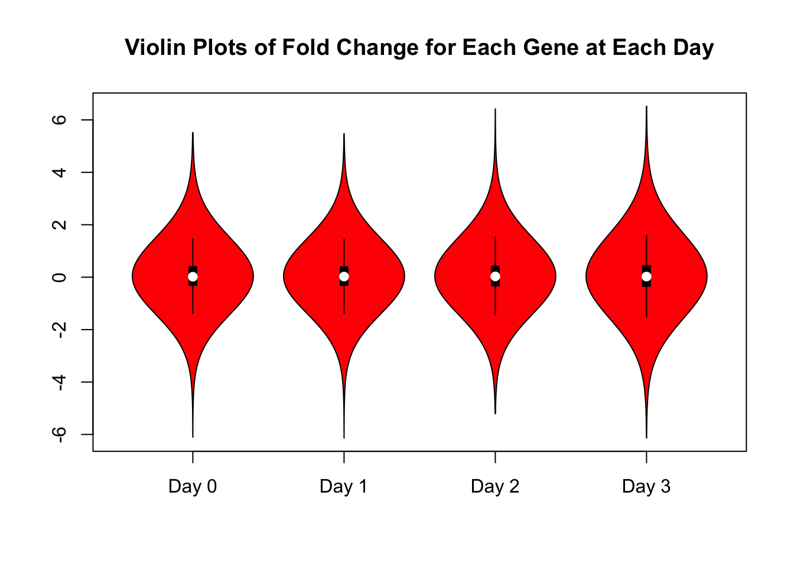
# Plot log fold change for all significant genes
mean_effects_0 <- sig_D0$logFC
mean_effects_1 <- sig_D1$logFC
mean_effects_2 <- sig_D2$logFC
mean_effects_3 <- sig_D3$logFC
vioplot(mean_effects_0, mean_effects_1, mean_effects_2, mean_effects_3, names=c("Day 0", "Day 1", "Day 2", "Day 3"), col = "gold")
title("Violin Plots of Fold Change for Differently Expressed Genes at Each Day")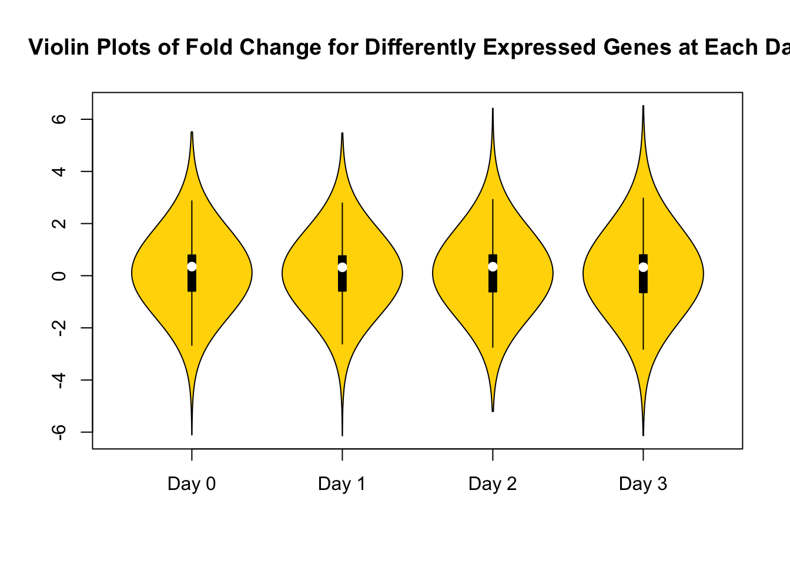
# Plot effect size for all significant genes
effect_size_spday <- data.frame(ef=c(abs(sig_D0$B), abs(sig_D1$B), abs(sig_D2$B), abs(sig_D3$B)), day = rep(c("Day 0", "Day 1", "Day 2", "Day 3"), times =c(length(sig_D0$logFC), length(sig_D1$logFC), length(sig_D2$logFC), length(sig_D3$logFC))))
ggplot(effect_size_spday, aes(x=ef, fill=day)) + geom_density(alpha=0.5)+xlab("Effect size") + theme(legend.position=c(.75,.75), legend.title=element_blank(), axis.title=element_text(size=14), panel.background=element_rect(fill='white')) + theme(text = element_text(size=18)) +xlim(c(-1.5,15)) + labs(title = "Effect Sizes for Significant Genes by Day")## Warning: Removed 1209 rows containing non-finite values (stat_density).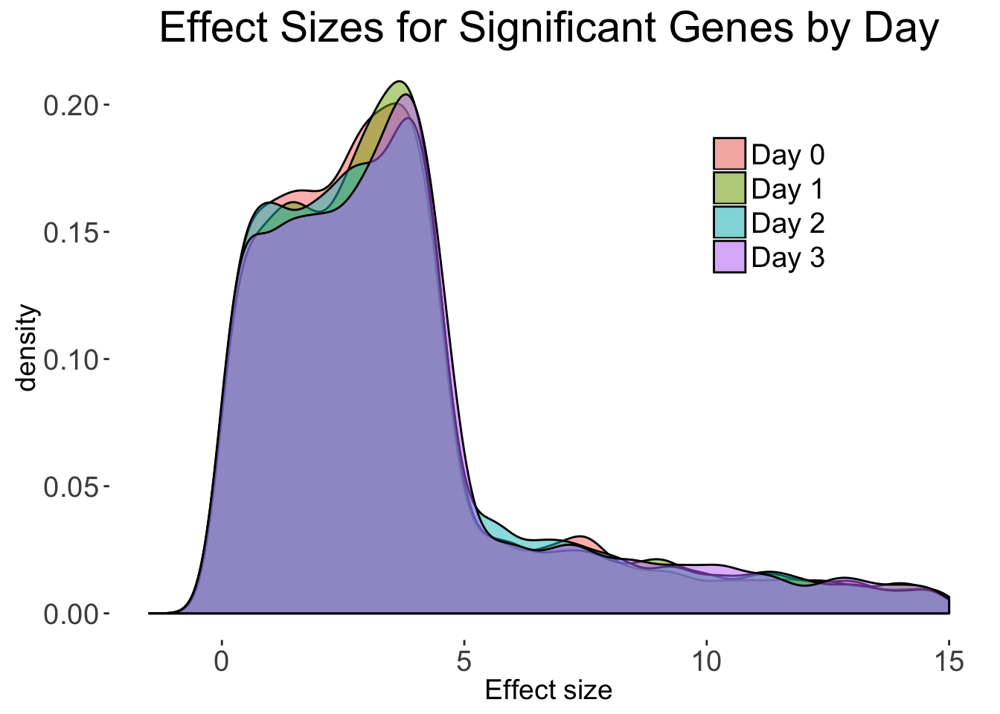
#t.test(abs(output_D1$logFC), abs(output_D3$logFC))
# Make a Venn diagram
par(mfrow=c(1,1))
mylist <- list()
mylist[["DE Day 0"]] <- rownames(sig_D0)
mylist[["DE Day 1"]] <- rownames(sig_D1)
mylist[["DE Day 2"]] <- rownames(sig_D2)
mylist[["DE Day 3"]] <- rownames(sig_D3)
# Make as pdf
Four_comp <- venn.diagram(mylist, filename= NULL, main="DE genes between species per day", cex=1.5 , fill = pal[1:4], lty=1, height=2000, width=3000)
pdf(file = "Figure 3.7C.pdf")
grid.draw(Four_comp)
dev.off()## quartz_off_screen
## 2Find genes that are significant between species only for one day
# Get the rownames for the genes
sig_d0 <- rownames(sig_D0)
sig_d1 <- rownames(sig_D1)
sig_d2 <- rownames(sig_D2)
sig_d3 <- rownames(sig_D3)
# Only significant in day 0
sig_d0_only <- sig_d0[!(sig_d0 %in% sig_d1)]
sig_d0_only <- sig_d0_only[!(sig_d0_only %in% sig_d2)]
sig_d0_only <- sig_d0_only[!(sig_d0_only %in% sig_d3)]
length(sig_d0_only)## [1] 522# Only significant in day 1
sig_d1_only <- sig_d1[!(sig_d1 %in% sig_d0)]
sig_d1_only <- sig_d1_only[!(sig_d1_only %in% sig_d2)]
sig_d1_only <- sig_d1_only[!(sig_d1_only %in% sig_d3)]
length(sig_d1_only)## [1] 315# Only significant in day 2
sig_d2_only <- sig_d2[!(sig_d2 %in% sig_d0)]
sig_d2_only <- sig_d2_only[!(sig_d2_only %in% sig_d3)]
sig_d2_only <- sig_d2_only[!(sig_d2_only %in% sig_d1)]
length(sig_d2_only)## [1] 365# Only significant in day 3
sig_d3_only <- sig_d3[!(sig_d3 %in% sig_d0)]
sig_d3_only <- sig_d3_only[!(sig_d3_only %in% sig_d2)]
sig_d3_only <- sig_d3_only[!(sig_d3_only %in% sig_d1)]
length(sig_d3_only)## [1] 966# Significant in all 4 days
sig_all <- sig_d2[(sig_d2 %in% sig_d0)]
sig_all <- sig_all[(sig_all %in% sig_d3)]
sig_all <- sig_all[(sig_all %in% sig_d1)]
length(sig_all)## [1] 2193# Unclear what you are trying to do here
#dfs <- data.frame(sig_D0$logFC, sig_D1$logFC, sig_D2$logFC, sig_D3$logFC)
#dfs <- stack(dfs)
#head(dfs)
dev.off()## null device
## 1Plot the number of genes DE between species at each day
dev.off()## null device
## 1# Numbers for non-unique DE genes
collect_total_barplot <- c(length(sig_d0)-length(sig_d0_only), length(sig_d1)-length(sig_d1_only), length(sig_d2)-length(sig_d2_only), length(sig_d3)-length(sig_d3_only), nrow(notsig_any), length(sig_all))
# Numbers for unique DE genes
collect_only <- c(length(sig_d0_only), length(sig_d1_only), length(sig_d2_only), length(sig_d3_only), 0, 0)
# Combine the unique and non-unique DE genes
msig <- rbind(collect_total_barplot, collect_only)
colnames(msig) <- c("Day 0", "Day 1", "Day 2", "Day 3", "Never DE", "Always DE")
# Make a stacked barplot
barplot(msig, ylab="Number of DE genes", ylim = c(0, 6000), main = "Differentially Expressed Genes between Humans and Chimps Across Days")Find significant genes arising at a given day
# Arise at Day 0
sig_d0_arise <- sig_d0
length(sig_d0_arise)## [1] 4473 # Arise at Day 1
sig_d1_arise <- sig_d1[!(sig_d1 %in% sig_d0)]
length(sig_d1_arise)## [1] 1013 # Arise at Day 2
sig_d2_arise <- sig_d2[!(sig_d2 %in% sig_d0)]
sig_d2_arise <- sig_d2_arise[!(sig_d2_arise %in% sig_d1)]
length(sig_d2_arise)## [1] 972 # Arise at Day 3
sig_d3_arise <- sig_d3_only
length(sig_d3_arise)## [1] 966collect_arise <- c(length(sig_d0_arise), length(sig_d1_arise), length(sig_d2_arise), length(sig_d3_arise))
plot(collect_arise, xaxt="n", ylab="Number of DE genes arising", main=" Significant Genes Arising At Each Day", ylim = c(0, 5000), pch = 19)
axis(side=1, at=1:4, labels=c("Day 0", "Day 1", "Day 2", "Day 3"))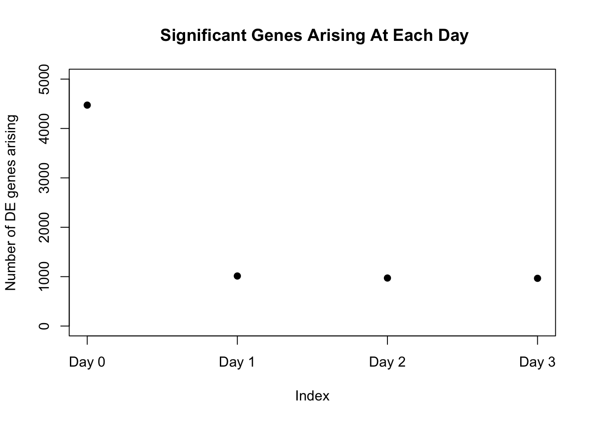
Plot distributions of signficant DE genes between species at each day (line 946)
# Here is the function to find the normalized cpm of a subset of genes
subset_func <- function(subset_genes){
inshared_lists = row.names(cpm_in_cutoff) %in% subset_genes
inshared_lists_data <- as.data.frame(inshared_lists)
cpm_genes_in <- cbind(cpm_in_cutoff, inshared_lists_data)
cpm_genes_in_sig <- subset(cpm_genes_in, inshared_lists_data == "TRUE")
return(cpm_genes_in_sig[,1:63])
}
# Find the normalized cpm of all of the significant genes
# Significant at day 0
cpm_sig0 <- subset_func(sig_d0)
dim(cpm_sig0)## [1] 4473 63### TO DO: PLOT EFFECT SIZE OF THESE
# Significant at day 1
cpm_sig1 <- subset_func(sig_d1)
dim(cpm_sig1)## [1] 4380 63 # Significant at day 2
cpm_sig2 <- subset_func(sig_d2)
dim(cpm_sig2)## [1] 4597 63 # Significant at day 3
cpm_sig3 <- subset_func(sig_d3)
dim(cpm_sig3)## [1] 4982 63Plot distributions of non-signficant DE genes between species at each day
###Plot nonsignificant genes###
cpm_notsig_any <- subset_func(notsig_any)
dim(notsig_any)## [1] 2880 1Expression values for individual genes
# Get day and species information
day <- as.data.frame(day)
Species <- as.data.frame(After_removal_sample_info$Species)
# Trial
exp <- as.data.frame(cpm_in_cutoff[grepl("ENSG00000000003", rownames(cpm_in_cutoff)), ])
make_exp_df <- as.data.frame(cbind(exp, day, species))
colnames(make_exp_df) <- c("CPM", "Day", "Species")
ggplot(make_exp_df, aes(x=as.factor(Day), y=CPM, fill=Species)) + geom_boxplot(aes(fill=Species)) + ggtitle("ENSG00000000003 Expression") + xlab("Day") + ylab("Log2(CPM) expression")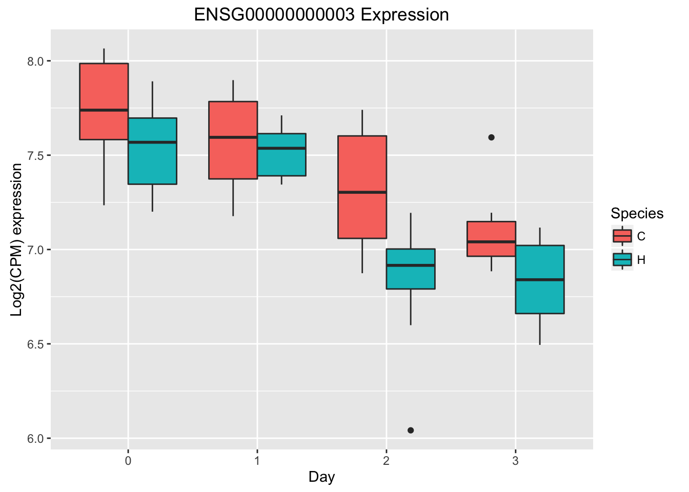
# EOMES (ENSG00000163508)
exp <- as.data.frame(cpm_in_cutoff[grepl("ENSG00000163508", rownames(cpm_in_cutoff)), ])
make_exp_df <- as.data.frame(cbind(exp, day, species))
colnames(make_exp_df) <- c("CPM", "Day", "Species")
ggplot(make_exp_df, aes(x=as.factor(Day), y=CPM, fill=Species)) + geom_boxplot(aes(fill=Species)) + ggtitle("EOMES Expression") + xlab("Day") + ylab("Log2(CPM) expression") + theme_bw() 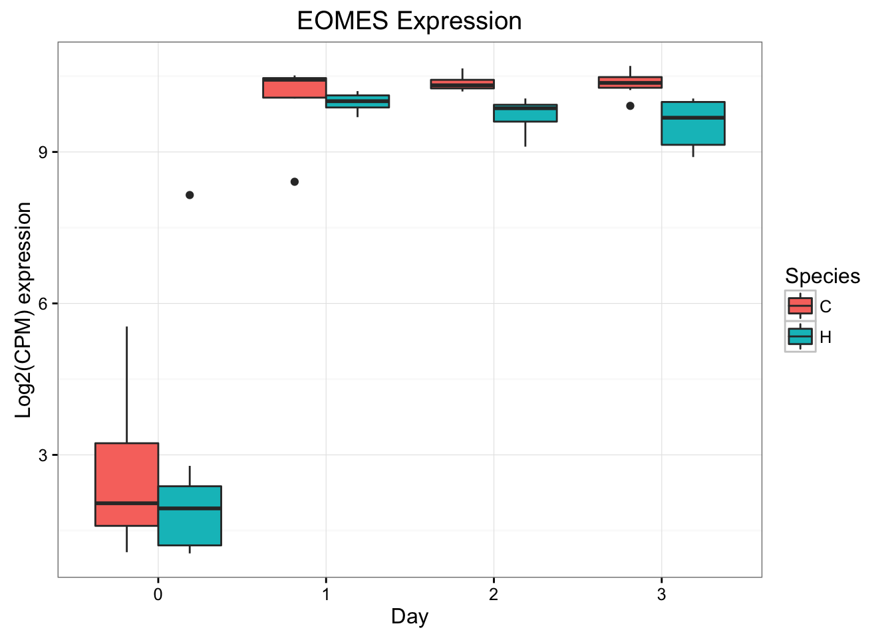
# HHEX (ENSG00000152804)
exp <- as.data.frame(cpm_in_cutoff[grepl("ENSG00000152804", rownames(cpm_in_cutoff)), ])
make_exp_df <- as.data.frame(cbind(exp, day, species))
colnames(make_exp_df) <- c("CPM", "Day", "Species")
ggplot(make_exp_df, aes(x=as.factor(Day), y=CPM, fill=Species)) + geom_boxplot(aes(fill=Species)) + ggtitle("HHEX Expression") + xlab("Day") + ylab("Log2(CPM) expression")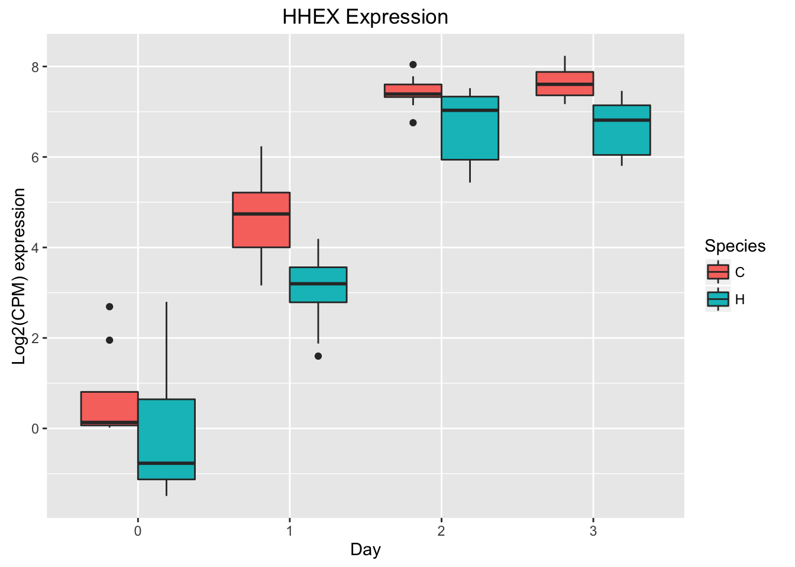
# CXCR4 (ENSG00000121966)
exp <- as.data.frame(cpm_in_cutoff[grepl("ENSG00000121966", rownames(cpm_in_cutoff)), ])
make_exp_df <- as.data.frame(cbind(exp, day, species))
colnames(make_exp_df) <- c("CPM", "Day", "Species")
ggplot(make_exp_df, aes(x=as.factor(Day), y=CPM, fill=Species)) + geom_boxplot(aes(fill=Species)) + ggtitle("CXCR4 Expression") + xlab("Day") + ylab("Log2(CPM) expression") + theme_bw()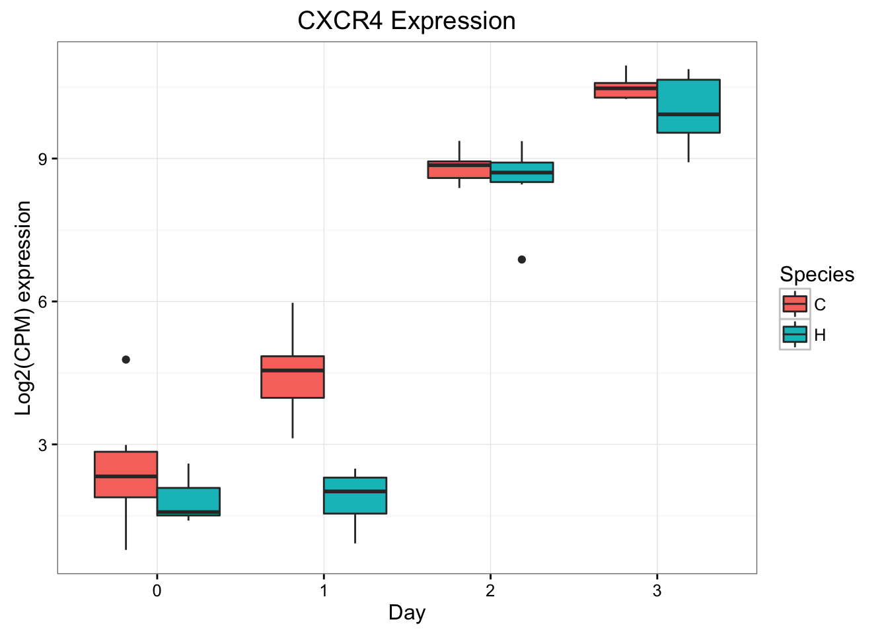
# Potentially not needed: OTX2 (ENSG00000165588)
exp <- as.data.frame(cpm_in_cutoff[grepl("ENSG00000165588", rownames(cpm_in_cutoff)), ])
make_exp_df <- as.data.frame(cbind(exp, day, species))
colnames(make_exp_df) <- c("CPM", "Day", "Species")
ggplot(make_exp_df, aes(x=as.factor(Day), y=CPM, fill=Species)) + geom_boxplot(aes(fill=Species)) + ggtitle("OTX2 Expression") + xlab("Day") + ylab("Log2(CPM) expression")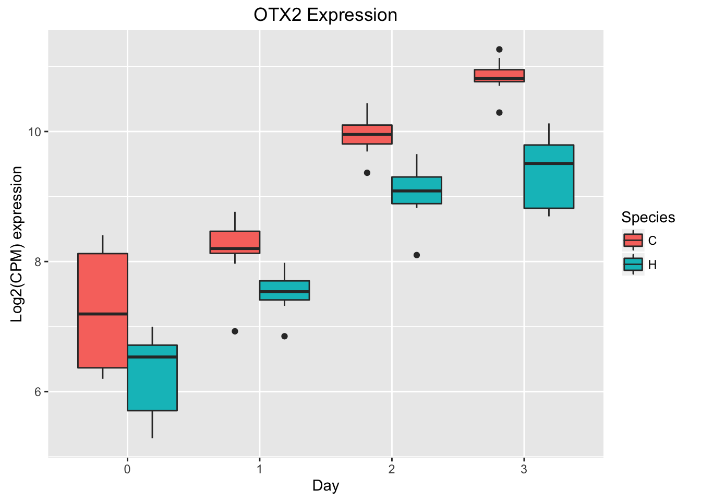
# FOXH1 (ENSG00000160973)
exp <- as.data.frame(cpm_in_cutoff[grepl("ENSG00000160973", rownames(cpm_in_cutoff)), ])
make_exp_df <- as.data.frame(cbind(exp, day, species))
colnames(make_exp_df) <- c("CPM", "Day", "Species")
ggplot(make_exp_df, aes(x=as.factor(Day), y=CPM, fill=Species)) + geom_boxplot(aes(fill=Species)) + ggtitle("FOXH1 Expression") + xlab("Day") + ylab("Log2(CPM) expression")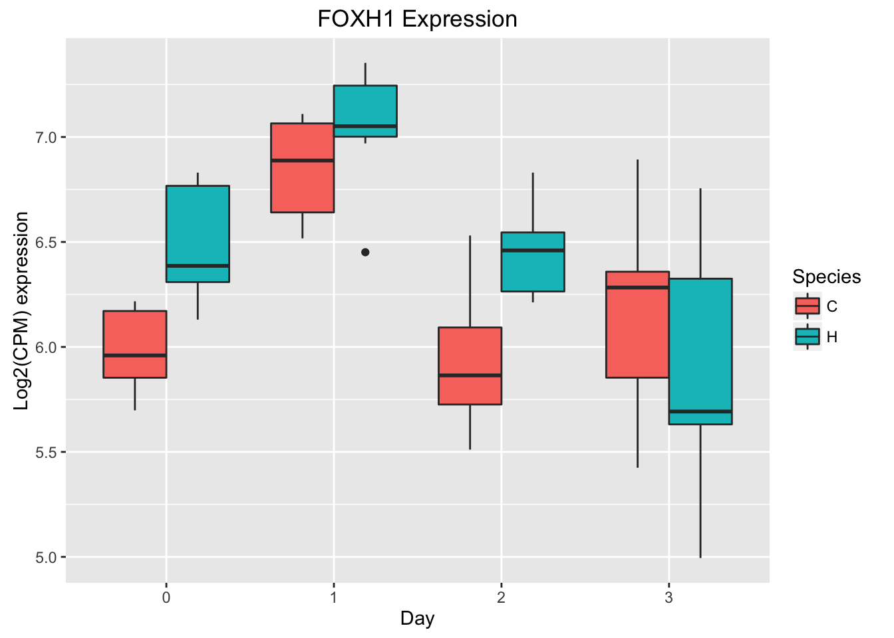
# Brian suggested using BRACHYURY (ENSG00000164458) instead of FOXH1
exp <- as.data.frame(cpm_in_cutoff[grepl("ENSG00000164458", rownames(cpm_in_cutoff)), ])
make_exp_df <- as.data.frame(cbind(exp, day, species))
colnames(make_exp_df) <- c("CPM", "Day", "Species")
ggplot(make_exp_df, aes(x=as.factor(Day), y=CPM, fill=Species)) + geom_boxplot(aes(fill=Species)) + ggtitle("BRACHYURY Expression") + xlab("Day") + ylab("Log2(CPM) expression")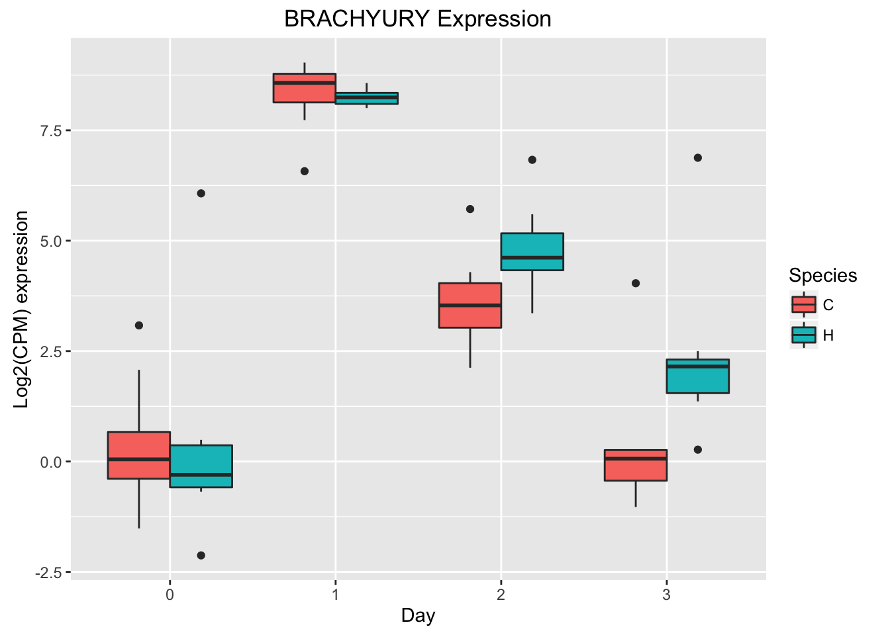
# WNT3 (ENSG00000108379)
exp <- as.data.frame(cpm_in_cutoff[grepl("ENSG00000108379", rownames(cpm_in_cutoff)), ])
make_exp_df <- as.data.frame(cbind(exp, day, species))
colnames(make_exp_df) <- c("CPM", "Day", "Species")
ggplot(make_exp_df, aes(x=as.factor(Day), y=CPM, fill=Species)) + geom_boxplot(aes(fill=Species)) + ggtitle("WNT3A Expression") + xlab("Day") + ylab("Log2(CPM) expression")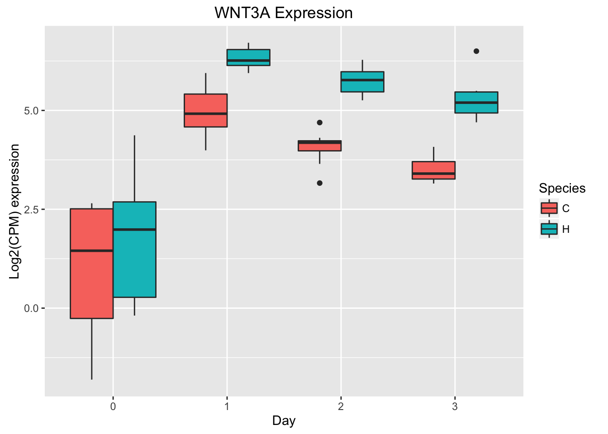
# ISOC1 (ENSG00000066583)
exp <- as.data.frame(cpm_in_cutoff[grepl("ENSG00000066583", rownames(cpm_in_cutoff)), ])
make_exp_df <- as.data.frame(cbind(exp, day, species))
colnames(make_exp_df) <- c("CPM", "Day", "Species")
ggplot(make_exp_df, aes(x=as.factor(Day), y=CPM, fill=Species)) + geom_boxplot(aes(fill=Species)) + ggtitle("ISOC1 Expression") + xlab("Day") + ylab("Log2(CPM) expression")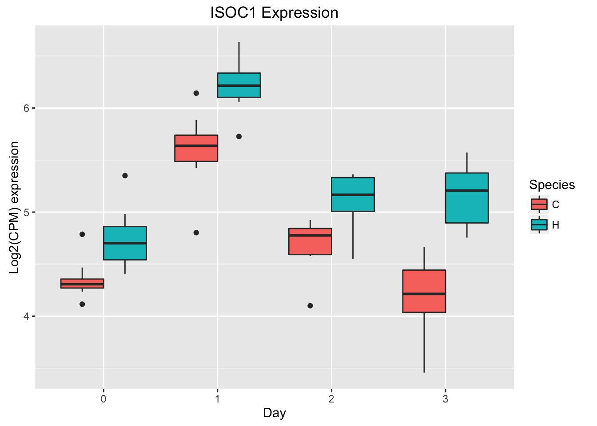
# TLE4 (ENSG00000106829)
exp <- as.data.frame(cpm_in_cutoff[grepl("ENSG00000106829", rownames(cpm_in_cutoff)), ])
make_exp_df <- as.data.frame(cbind(exp, day, species))
colnames(make_exp_df) <- c("CPM", "Day", "Species")
ggplot(make_exp_df, aes(x=as.factor(Day), y=CPM, fill=Species)) + geom_boxplot(aes(fill=Species)) + ggtitle("TLE4 Expression") + xlab("Day") + ylab("Log2(CPM) expression")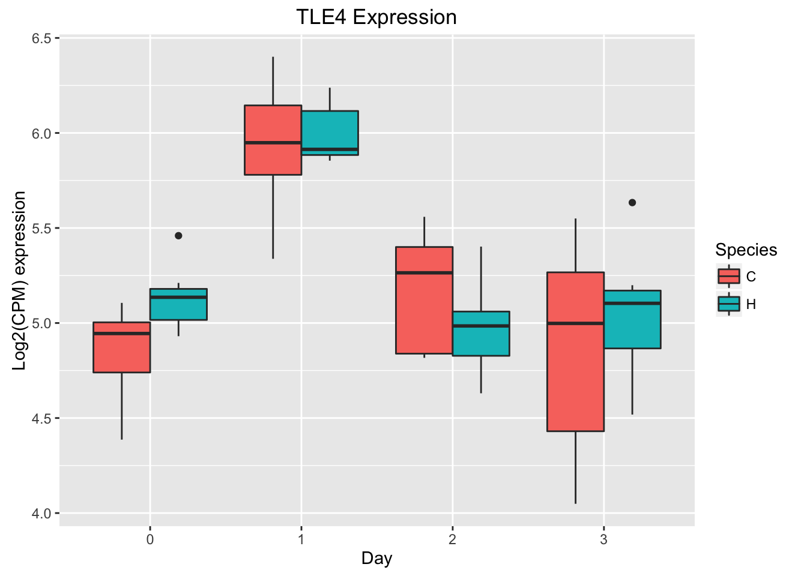
# APOE
exp <- as.data.frame(cpm_in_cutoff[grepl("ENSG00000130203", rownames(cpm_in_cutoff)), ])
make_exp_df <- as.data.frame(cbind(exp, day, species))
colnames(make_exp_df) <- c("CPM", "Day", "Species")
ggplot(make_exp_df, aes(x=as.factor(Day), y=CPM, fill=Species)) + geom_boxplot(aes(fill=Species)) + ggtitle("ApoE Expression") + xlab("Day") + ylab("Log2(CPM) expression")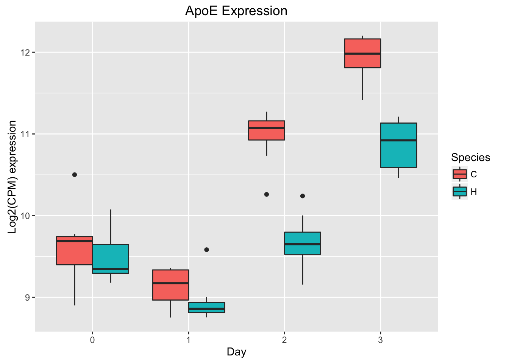
# TMEM65 (ENSG00000164983)
exp <- as.data.frame(cpm_in_cutoff[grepl("ENSG00000164983", rownames(cpm_in_cutoff)), ])
make_exp_df <- as.data.frame(cbind(exp, day, species))
colnames(make_exp_df) <- c("CPM", "Day", "Species")
ggplot(make_exp_df, aes(x=as.factor(Day), y=CPM, fill=Species)) + geom_boxplot(aes(fill=Species)) + ggtitle("TMEM65 Expression") + xlab("Day") + ylab("Log2(CPM) expression")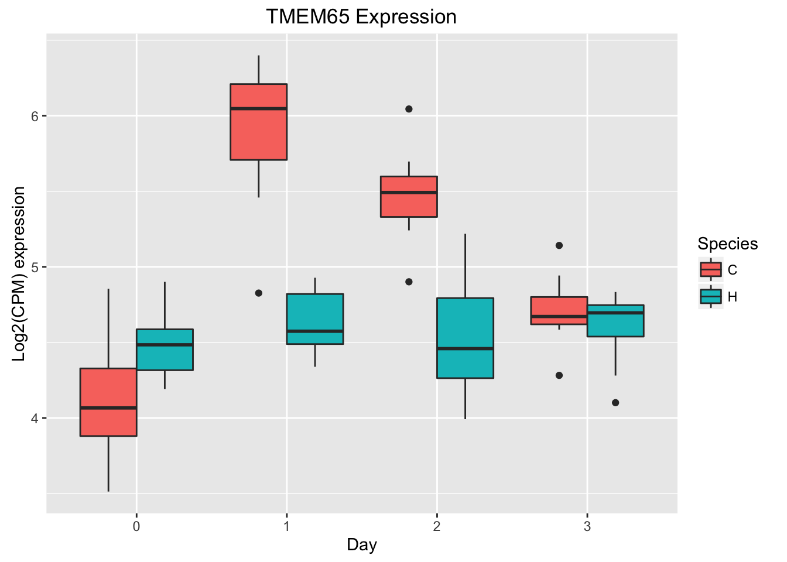
# SOX 2
exp <- as.data.frame(cpm_in_cutoff[grepl("ENSG00000181449", rownames(cpm_in_cutoff)), ])
make_exp_df <- as.data.frame(cbind(exp, day, species))
colnames(make_exp_df) <- c("CPM", "Day", "Species")
ggplot(make_exp_df, aes(x=as.factor(Day), y=CPM, fill=Species)) + geom_boxplot(aes(fill=Species)) + ggtitle("SOX2 Expression") + xlab("Day") + ylab("Log2(CPM) expression")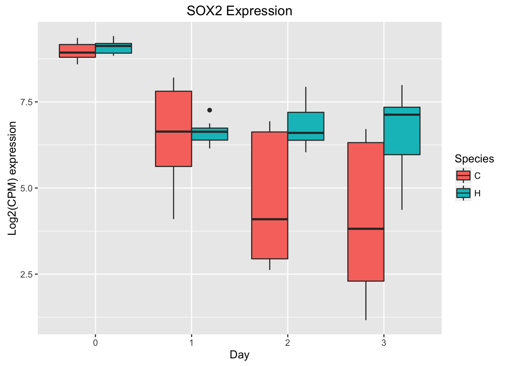
Make heatmap of all the markers
# PRDM1 ENSG00000057657
exp_PRDM1 <- as.data.frame(cpm_in_cutoff[grepl("ENSG00000057657", rownames(cpm_in_cutoff)), ])
# HHEX (ENSG00000152804)
exp_HHEX <- as.data.frame(cpm_in_cutoff[grepl("ENSG00000152804", rownames(cpm_in_cutoff)), ])
# CXCR4 (ENSG00000121966)
exp_CXCR4 <- as.data.frame(cpm_in_cutoff[grepl("ENSG00000121966", rownames(cpm_in_cutoff)), ])
# SOX17 (ENSG00000164736)
exp_SOX17 <- as.data.frame(cpm_in_cutoff[grepl("ENSG00000164736", rownames(cpm_in_cutoff)), ])
# GSC (ENSG00000133937)
exp_GSC <- as.data.frame(cpm_in_cutoff[grepl("ENSG00000133937", rownames(cpm_in_cutoff)), ])
# OTX2 (ENSG00000165588)
exp_OTX2 <- as.data.frame(cpm_in_cutoff[grepl("ENSG00000165588", rownames(cpm_in_cutoff)), ])
# EOMES (ENSG00000163508)
exp_EOMES <- as.data.frame(cpm_in_cutoff[grepl("ENSG00000163508", rownames(cpm_in_cutoff)), ])
# SOX2 (ENSG00000181449)
exp_SOX2 <- as.data.frame(cpm_in_cutoff[grepl("ENSG00000181449", rownames(cpm_in_cutoff)), ])
# PRDM14 (ENSG00000147596)
exp_PRDM14 <- as.data.frame(cpm_in_cutoff[grepl("ENSG00000147596", rownames(cpm_in_cutoff)), ])
# WNT3 (ENSG00000108379)
exp_WNT3 <- as.data.frame(cpm_in_cutoff[grepl("ENSG00000108379", rownames(cpm_in_cutoff)), ])
# FGF8 (ENSG00000107831)
exp_FGF8 <- as.data.frame(cpm_in_cutoff[grepl("ENSG00000107831", rownames(cpm_in_cutoff)), ])
# PDGFRA (ENSG00000134853)
exp_PDGFRA <- as.data.frame(cpm_in_cutoff[grepl("ENSG00000134853", rownames(cpm_in_cutoff)), ])
# FOXA1 (ENSG00000129514)
# This is a lowly expressed gene and therefore has been filtered
exp_FOXA1 <- as.data.frame(cpm_in_cutoff[grepl("ENSG00000129514", rownames(cpm_in_cutoff)), ])
# FOXA2 (ENSG00000125798)
exp_FOXA2 <- as.data.frame(cpm_in_cutoff[grepl("ENSG00000125798", rownames(cpm_in_cutoff)), ])
# BRACHYURY (ENSG00000164458)
exp_BRACHYURY <- as.data.frame(cpm_in_cutoff[grepl("ENSG00000164458", rownames(cpm_in_cutoff)), ])
# FGF4 (ENSG00000075388)
# This is a lowly expressed gene and therefore has been filtered
exp_FGF4 <- as.data.frame(cpm_in_cutoff[grepl("ENSG00000075388", rownames(cpm_in_cutoff)), ])
# Combine expression values for the different markers
TF_heatmap <- cbind(exp_PRDM1, exp_HHEX, exp_CXCR4, exp_SOX17, exp_GSC, exp_OTX2, exp_EOMES, exp_SOX2, exp_PRDM14, exp_WNT3, exp_FGF8, exp_PDGFRA, exp_FOXA2, exp_BRACHYURY)
colnames(TF_heatmap) <- c("PRDM1", "HHEX", "CXCR4", "SOX17", "GSC", "OTX2", "EOMES", "SOX2", "PRDM14", "WNT3", "FGF8", "PDGFRA", "FOXA2", "BRACHYURY")
dim(TF_heatmap) ## [1] 63 14View(TF_heatmap)
# Find the correlations and then plot the results
Species <- After_removal_sample_info$Species
#Day <- After_removal_sample_info$Day
# Get a library
library("colorspace")## Warning: package 'colorspace' was built under R version 3.2.5library("magrittr")##
## Attaching package: 'magrittr'## The following object is masked from 'package:R.utils':
##
## extract## The following object is masked from 'package:R.oo':
##
## equals## The following object is masked from 'package:tidyr':
##
## extractlibrary("dendextend")## Warning: package 'dendextend' was built under R version 3.2.5## Warning: replacing previous import by 'magrittr::%>%' when loading
## 'dendextend'##
## ---------------------
## Welcome to dendextend version 1.3.0
## Type browseVignettes(package = 'dendextend') for the package vignette.
## The github page is: https://github.com/talgalili/dendextend/
##
## Suggestions and bug-reports can be submitted at: https://github.com/talgalili/dendextend/issues
## Or contact: <tal.galili@gmail.com>
##
## To suppress this message use: suppressPackageStartupMessages(library(dendextend))
## ---------------------##
## Attaching package: 'dendextend'## The following object is masked from 'package:VennDiagram':
##
## rotate## The following object is masked from 'package:stats':
##
## cutree#dend_r <- cor(t(TF_heatmap)) %>% dist(method = "euclidean") %>% #hclust(method = "average")
#dend1 <- as.dendrogram(dend_r)
#plot(dend1)
#dend_c <- cor(TF_heatmap) %>% dist(method = "euclidean") %>% hclust(method = "average")
#dend2 <- as.dendrogram(dend_c)
#plot(dend2)
gplots::heatmap.2(x=as.matrix(t(TF_heatmap)),
# , distfun = dist(x, method = "euclidean"),
hclustfun = function(x) hclust(dist(x), method = "average"), tracecol=NA, col=colors, denscol="white", labCol= labels, ColSideColors=pal[as.integer(as.factor(Species))]) #RowSideColors=pal[as.integer(as.factor(Day))+9])